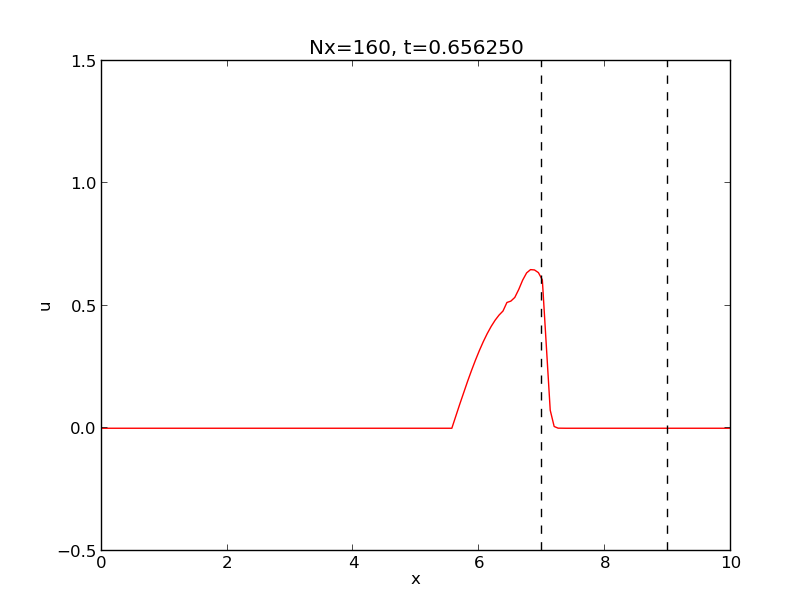
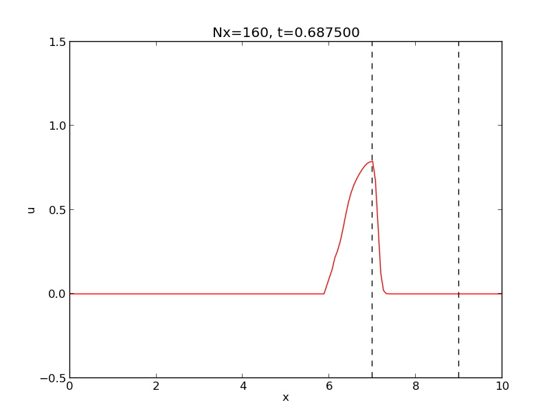

DocOnce Description
Sep 22, 2015
What Is DocOnce?
DocOnce is a very simple and minimally tagged markup language that looks like ordinary ASCII text, much like what you would use in an email, but the text can be transformed to numerous other formats, including HTML, Sphinx, LaTeX, PDF, reStructuredText (reST), Markdown, MediaWiki, Creole wiki, blogger.com, wordpress.com, Epytext, and also plain (untagged) text for email. From reST or Markdown you can go to XML, OpenOffice, MS Word, HTML, LaTeX, PDF, DocBook, GNU Texinfo, and more.
DocOnce supports a working strategy of never duplicating information. Text is written in a single place and then transformed to a number of different destinations of diverse type: scientific reports, software manuals, books, thesis, software source code, wikis, blog posts, emails, etc. The slogan is: "Document once, include anywhere".
Here are some DocOnce features:
- DocOnce addresses small and large documents containing text with much computer source code and LaTeX mathematics, where the output is desired in different formats such as LaTeX, pdfLaTeX, Sphinx, HTML, MediaWiki, blogger.com, and wordpress.com. A piece of DocOnce text can enter (e.g.) a classical science book, an ebook, a web document, and a blog post.
- DocOnce offers a range of HTML designs, including many Bootstrap and Sphinx styles and solarized color schemes. A special feature is the many styles for admonitions (boxes for warning, notice, question, etc.) in HTML and LaTeX.
- DocOnce targets in particular large book projects where many different pieces of text and software can be assembled in different ways and published in different formats for different devices (see example).
- DocOnce enables authors who write for many types of media (blog posts, wikis, LaTeX manuscripts, Sphinx, HTML) to use a common source language such that lots of different pieces can easily be brought together later to form a coherent (big) document.
- DocOnce has good support for copying computer code directly from the source code files via regular expressions for the start and end lines.
- DocOnce first runs two preprocessors (Preprocess and Mako), which allow programming constructs (includes, if-tests, function calls, variables) as part of the text. This feature makes it easy to write one text with different flavors: long vs short text, Python vs Matlab code examples, experimental vs mature content.
- DocOnce can be converted to plain untagged text, often desirable for email and computer code documentation.
- DocOnce markup does include tags, so the format is more tagged than Markdown, but less than reST, and very much less than LaTeX and HTML.
- Compared to the related tools Sphinx and Markdown, DocOnce allows more types of equations (especially systems of equations with references), has more flexible inclusion of source code, integrates preprocessors, has special support for exercises, and produces cleaner LaTeX and HTML output.
Disclaimer. DocOnce applies text transformations, mostly via regular expressions. This is not a fool-proof method of translation compared to real parsing. The possibility for tweaking the layout in the DocOnce document is obviously limited (at least compared to LaTeX and HTML) since the text can go to all sorts of markup languages. This can be compensated, however, by clever use of the programmable Mako preprocessor used by DocOnce and by automatic editing of the generated output (e.g., via regular expressions).
Table of contents
What Is DocOnce?
Demos
Markup Based on Special Lines
Heading with title and author(s)
Copyright
Table of contents
Section headings
Abstract
Appendix
Figures
Movies
Copying Computer Code from Source Files
Inserting the Output from Operating System Commands
Comments
Tables
Lists
Inline Tagging
Emphasized Words
Inline Verbatim Text
Links to Web Addresses
Links to Mail Addresses
Links to Local Files
Quotes
Non-Breaking Space
Horizontal rule
Em-dash
Ampersand
Footnotes
Inline Comments
Inline Comments for Editing
Forced Line Breaks
Inline Mathematics
Cross-Referencing
Generalized Cross-Referencing
Index
Emojis
Exercises, Problems, Projects, and Examples
Examples on Exercise Syntax
Typesetting of Exercises
List of Exercises, Problems, and Projects
Numbering of Extra Equations in Solutions
Extracting All Exercises in a Separate Document
Extracting All Exercises as Stand-Alone Documents
Example on an Exercise
Exercise 1: Compute integrals
Other Environments
Blocks of Verbatim Computer Code
LaTeX Blocks of Mathematical Text
Macros (Newcommands)
Writing Guidelines (Especially for LaTeX Users!)
Typesetting of Algorithms
Admonitions
User-Defined Environments
Example 1: Addition
Bibliography (References)
Importing your data to the Publish database
Requirements to input data
Adding new references to the database
Exporting the database
Referring to publications
Specifying the Publish database
LaTeX Bibliography Style
Preprocessing and Postprocessing
The Preprocess and Mako Preprocessors
Splitting Documents into Smaller Pieces
Writing Slides
Overview
Slide Elements
HTML5 Slides
LaTeX Beamer Slides
Misc
Missing Features
Emacs DocOnce Formatter
Mako Programming
The Basics of Mako
Debugging Python code in Mako
Example: Nomenclature functionality
Example: Executing Python and using SymPy Objects in LaTeX
Example: Extending Tables to Handle Figures
Example: Defining a Theorem Environment
Tools for Writing DocOnce Documents
Debugging
From DocOnce to Other Formats
Writing a Makefile
Generating a Makefile
Preprocessing
Removal of Inline Comments
Notes
Demo of Different Formats
Tweaking the DocOnce Output
Useful Options for doconce format
HTML
Basic HTML Output
Typesetting of Code
Handling of Movies
HTML Styles
HTML templates
Splitting HTML documents
URL to files hosted on GitHub
Other HTML options
Blog Posts
Pandoc and Markdown
Markdown to HTML conversion
Strict Markdown
GitHub-flavored Markdown
MultiMarkdown
Strapdown rendering of Markdown text
Using Pandoc to go from LaTeX to MS Word or HTML
LaTeX
Overview
The old ptex2tex step
LaTeX-PDF: Generate LaTeX (Step 1)
LaTeX-PDF: Edit the LaTeX File (Step 2, Optional)
LaTeX-PDF: Generate PDF (Step 3)
XeLaTeX
From PDF to e-book formats
Microsoft Word or LibreOffice
Jupyter (IPython) Notebooks
Hidden code blocks
Displaying code as plain text instead of executable cells
Figures
Movies
Admonitions
References to an External Textbook
Matlab Notebooks
Plain ASCII Text
reStructuredText
Sphinx
The Basic Steps
Links
Themes
RunestoneInteractive books
The manual Sphinx procedure
Wiki Formats
Google Docs
Options for the doconce commands
doconce format command-line options
Installation of DocOnce and its Dependencies
DocOnce
Dependencies
Basic Parsing Ideas
Typesetting of Function Arguments, Return Values, and Variables
References
Demos
The current text is generated from a DocOnce format stored in the directory
doc/manual/manual.do.txt
file in the DocOnce source code tree. Here you can run a
make.sh script to generate a lot of different
formats: HTML, LaTeX, plain text, etc., stored in the subdirectory demo.
To successfully run this script and compile all the different versions,
you must have quite a lot of software installed, see
the the section Installation of DocOnce and its Dependencies for detailed information.
However,
the most commonly used formats of this manual are
fortunately also accessible through the web:
HTML,
Sphinx,
and
PDF.
DocOnce supports a lot of different layouts of documents, see
the collection of various versions of a scientific report.
Another demo is found in
doc/tutorial/tutorial.do.txt
In the tutorial directory there is also a make.sh file producing a
lot of formats in the subdirectory demo.
The three most common formats can be found on the web:
HTML,
Sphinx,
and
PDF.
Markup Based on Special Lines
The DocOnce markup language has a concept called special lines. Such lines starts with a markup at the very beginning of the line and are used to mark document title, authors, date, sections, subsections, paragraphs, figures, movies, lists, etc.
Heading with title and author(s)
Lines starting with TITLE:, AUTHOR:, and DATE: are optional and used
to identify a title of the document, the authors, and the date. The
title is treated as the rest of the line, so is the date, but the
author text consists of the name and associated institution(s) with
the syntax
AUTHOR: name at institution1 and institution2 and institution3
The at with surrounding spaces
is essential for adding information about institution(s)
to the author name, and the and with surrounding spaces is
essential as delimiter between different institutions.
An email address can optionally be included, using the syntax
AUTHOR: name Email: somename@site.net at institution1 and institution2
Multiple authors require multiple AUTHOR: lines. All information
associated with TITLE: and AUTHOR: keywords must appear on a single
line. Here is an example:
TITLE: On an Ultimate Markup Language
AUTHOR: H. P. Langtangen at Center for Biomedical Computing, Simula Research Laboratory & Dept. of Informatics, Univ. of Oslo
AUTHOR: Kaare Dump Email: dump@cyb.space.com at Segfault, Cyberspace Inc.
AUTHOR: A. Dummy Author
DATE: November 9, 2016
Note how one can specify a single institution, multiple institutions
(with & as separator between institutions),
and no institution. In some formats (including rst and sphinx)
only the author names appear. Some formats have
"intelligence" in listing authors and institutions, e.g., the plain text
format:
Hans Petter Langtangen [1, 2]
Kaare Dump (dump@cyb.space.com) [3]
A. Dummy Author
[1] Center for Biomedical Computing, Simula Research Laboratory
[2] Department of Informatics, University of Oslo
[3] Segfault, Cyberspace Inc.
Similar typesetting is done for LaTeX and HTML formats.
The current date can be specified as today.
Copyright
A copyright notice can be given as part of the AUTHOR: command.
The syntax is
{copyright,year1-year2|license}
where year1-year2 represents the year(s) and license represents
the type of license (e.g., Creative Commons license) if that apply.
The year and license parts can be left out. In that case, the current
year is used, and no license appears.
Note that the year and the license must be identical in all copyright
specifications for all authors who claim copyright!
(Otherwise, an error message is issued.)
The {copyright...} specification can appear after the author's name
(and email address) and/or after an organization's name (see examples below).
The syntax of the year1-year part goes as follows:
- A single year:
2012. - A range:
2006-2010. Up to the current year is specified by2005-present. Any attempt to use an upper limit into the future will be replaced bypresent, e.g.,2001-2100becomes2001-present. - A single year:
date, which fetches the year from theDATE:field in the DocOnce document.
license part is flexible:
- Any formulation can be given. For example,
{copyright|This work is released under an MIT license}. - Standardized short forms for Creative Commons (CC) licenses are available.
For example,
CC BY, which means a CC Attribution license.BYcan be replaced byBY-NC(Attribution-NonCommercial) and other abbreviations from https://creativecommons.org/licenses/. The command-line option--CC_license=is used to provide a template for embedding the spelled out name of the abbreviated CC license. By default this template readsReleased under a CC %s 4.0 license, where%sis to be replaced by the license name. A common value is--CC_license="This work is released under the Creative Commons %s 4.0 license".
- LaTeX: The copyright appears as a footer on all pages (typeset with
the
\fancyfoot[C]command from thefancyhdrpackage). The command-line option--latex_copyright=titlepagesleads to a copyright statement in the footer of the titlepage and (for books) the first page of each chapter. - Sphinx: The copyright is provided as the
copyrightvariable inconf.pyand appears in the footer according to the chosen theme. - HTML: The copyright appears at the bottom of all pages (right before the
</body> tag). - Other formats: A copyright line is inserted after the date.
AUTHOR: Joe Doe Email:joe.doe@somemail.com {copyright}
AUTHOR: Jane Doe {copyright}
Output becomes "Copyright 2015, Joe Doe, Jane Doe" (if the present year is 2015).
AUTHOR: Joe Doe {copyright,2001-present}
Output becomes "Copyright 2001-2015, Joe Doe" (if the present year is 2015).
AUTHOR: Joe Doe {copyright,2001-2010|CC BY}
AUTHOR: Jane Doe Email:jd@kk.org {copyright,2001-2010|CC BY}
Output becomes "Copyright 2001-2010, Joe Doe, Jane Doe. Released under CC Attribution 4.0 license". One can provide the option --CC_license="This work is released under the Creative Commons %s 4.0 license.", and the output
becomes "Copyright 2001-2010, Joe Doe, Jane Doe. This work is released under the Creative Commons Attribution 4.0 license."
AUTHOR: Joe Doe {copyright} at Digital Company {copyright}
AUTHOR: Jane Doe
In this case, an author and an institution (but not the second author) hold the copyright. The output is typically "Copyright 2015, Joe Doe, Digital Company". Below, two institutions but no authors hold the copyright:
AUTHOR: Joe Doe at Digital Company {copyright,2015|CC BY}
AUTHOR: Jane Doe at Analog Company {copyright,2015|CC BY}
The output becomes "Copyright 2015, Diginal Company, Analog Company. Released under CC Attribution 4.0 license".
Table of contents
A table of contents can be generated by the line
TOC: on
This line is usually placed after the DATE: line.
The value off turns off the table of contents.
The depth of the table of contents is dictated by the command-line
option --toc_depth=, which is 2 by default, meaning that sections and
subsections are included, but not subsubsections.
When making Sphinx documents, toc_depth= is a command-line option for
for the doconce sphinx_dir command (and not doconce format).
Section headings
Section headings are recognized by being surrounded by equal signs (=) or underscores before and after the text of the headline. Different section levels are recognized by the associated number of underscores or equal signs (=):
- 9
=characters for chapters - 7 for sections
- 5 for subsections
- 3 for subsubsections
- 2 underscrores (only! - it looks best) for paragraphs (paragraph heading will be inlined)
= must start in column 1 and there must one blank
on each side of the heading, between the heading and the = signs.
Here are examples on headings:
======= Example on a Section Heading =======
The running text goes here.
===== Example on a Subsection Heading =====
The running text goes here.
=== Example on a Subsubsection Heading ===
The running text goes here.
__A Paragraph.__ The running text goes here.
Abstract
DocOnce also supports abstracts. The syntax is like an ordinary paragraph with heading Abstract, Summary, or *Preface, but the text must be followed by a
- section or paragraph heading
- table of contents (
TOC:) - date (
DATE:)
Here are examples on an abstract and some type of ending text (section headings, table of contents, or date).
__Abstract.__ This abstract
lasts up to the section heading.
======= Here Is the First Section Heading =======
# or
__Summary.__
This is
a summary.
Even with two paragraphs. It lasts
until the table of contents.
TOC: on
# In books we may place the summary before DATE
TITLE: Some Title
AUTHOR: Some Author
__Summary.__ Here is the backmatter
promotion text for this book, appearing
on the front page...
DATE: today
Appendix
Appendix is supported too: just let the heading start with "Appendix: "
This affects only latex output, where the appendix formatting
is used - all other formats just leave the heading as it is written.
Figures
Basic syntax
Figures are recognized by the special line syntax
FIGURE:[filename, width=600 frac=0.8] caption
The filename can be without extension, and DocOnce will search for an
appropriate file with the right extension. If the extension is wrong,
say .pdf when requesting an HTML format, DocOnce tries to find another
file, and if not, the given file is converted to a proper format
(using ImageMagick's convert utility).
Note also that, like for TITLE: and AUTHOR: lines, all information
related to a figure line must be written on the same line. Introducing
newlines in a long caption will destroy the formatting (only the
part of the caption appearing on the same line as FIGURE: will be
included in the formatted caption).
The height, width, and frac keywords can be included
if desired and may have effect for some formats: the height and width
are used for output in the formats html, rst, sphinx, while
the frac specification is used for latex and pdflatex to specify
the width of the image as a fraction of the text width.
Figure Placement
In web formats (html, sphinx, ipynb, matlabnb, wikis), the FIGURE: command is replaced by
an img tag exactly where the FIGURE: appears in the document.
LaTeX, however, will normally place the figure at a different location.
The generated LaTeX code applies
\begin{figure}[!ht] % my:fig
i..e, we use the
"here" option [!ht] to recommend a placement as near the FIGURE:
command as possible. One can autoedit the .tex file and modify the
figure environment options, e.g.,
Terminal> doconce replace '{figure}[!ht]' '{figure}[t]' mydoc.tex
The above command will change all [!ht] options to [t] (top).
A specific figure can also be edited, using the fact that the label
is printed at the same line as \begin{figure}:
Terminal> doconce subst '{figure}[!ht] .+my:fig' \
'{figure}[!h] % my:fig' mydoc.tex
Of greater influence than options like [ht], [h], etc., is the
LaTeX code found in the preamble:
\setcounter{topnumber}{2}
\setcounter{bottomnumber}{2}
\setcounter{totalnumber}{4}
\renewcommand{\topfraction}{0.95}
\renewcommand{\bottomfraction}{0.95}
\renewcommand{\textfraction}{0}
\renewcommand{\floatpagefraction}{0.75}
% floatpagefraction must always be less than topfraction!
\usepackage[section]{placeins} % flush all figs before next section
These values can be manipulated to fine-tune how LaTeX places figures.
Figure References
Suppose we have the DocOnce code
The results are presented in Figure ref{myfig}.
FIGURE:[myfigfile, width=400 frac=0.8] Results for $a=2$. label{myfig}
Different formats will display the figure reference differently.
In LaTeX, DocOnce generates the code ... in Figure \ref{myfig}, which
reads "... in Figure 5" (article) or "... in Figure 5.2" (book).
Requesting the varioref package (with --latex_packages=varioref)
makes DocOnce emit \vref references and then the above reference
becomes in Figure \vref{myfig}, which reads
"... in Figure 5 on page 67". However, if Figure 5 appears on the
present page where the reference is done, the page reference is
left out, and one can read just "in Figure 5".
Sphinx applies the caption as name of the figure, so the reference
reads "... in Figure Results for .", and the caption/name is a link
to the figure. Note that Sphinx strips off the mathematics from
the caption. In HTML, figures are given numbers, so the reference
reads "... in Figure 3", with the figure number as a link to the
place in the document where the FIGURE: command was located.
The IPython notebook format makes a Markdown link: ... in [Figure](#myfig),
where myfig is an anchor such one can click on Figure.
The plain text format displays the reference as "... in Figure ref{myfig}.".
Wiki formats show "... in Figure myfig.". So to summarize, figure
references work best in LaTeX, HTML, and Sphinx. Other formats
should avoid figure references with labels.
Inline Figures
The figure caption is optional. If omitted, the figure appears "inline"
in the text without any figure environment in LaTeX formats or HTML.
An inline figure is handy in LaTeX since it appears exactly where the
FIGURE: command appears (figures with captions are encapsulated in the
LaTeX figure environment and become floating objects whose placement
is up to LaTeX do decide).
FIGURE line without caption) get squeezed
into the text. You can add vertical space in LaTeX and HTML by
inserting seeral lines with <linebreak>.
Figure 1: A wave.

Handling Variable Figure Paths
Figure files are usually located in some directory. Sometimes one needs to
compile the DocOnce source file(s) from different directories, and
then the path to figure files changes. For example, think of a master
DocOnce file that includes different sections whose DocOnce source files
are located in different directories. If you want to compile a section
as stand-alone document, you have to do that from the subdirectory for
that section. The path to a common directory for figures may then be
like ../fig/myfig.png, while for the master document in the parent
directory, the corresponding path is fig/myfig.png.
The simplest way out of this problem is to use the --fig_prefix=
command-line option to set a path prefix for the figure filename.
When compiling a section in a subdirectory one sets
--fig_prefix=../fig while in the parent directory one needs
--fig_prefix=fig to compile the master document.
In the DocOnce source file one has FIGURE: [myfig, width=...].
A more manual method is to introduce a Mako variable FIGPREFIX
that is set on the command line as part of the doconce format command.
The FIGPREFIX variable holds a prefix for the path to the figure.
In our example one writes
FIGURE: [${FIGPREFIX}/myfig, width=500 frac=0.8] caption label{my:fig}
and set FIGPREFIX=../fig after the doconce format ... command if
one compiles a section, while FIGPREFIX=fig is the appropriate
value of the path when compiling the master document.
Figures with Subfigures
Combining several image files into one, in a table fashion, can be done by the
montage program from the ImageMagick suite:
montage -background white -geometry 100% -tile 2x \
file1.png file2.png ... file4.png result.png
The option -tile XxY gives X figures in the horizontal direction and
Y in the vertical direction (tile 2x means two figures per row
and -tile x2 means two rows).
The montage program is only appropriate for bitmap images (PNG, JPEG, GIF,
TIFF). Images in the PDF format should be mounted together
using pdftk (to combine images to one file),
pdfnup (to align them in tabular format), and pdfcrop (to
remove surrounding whitespace):
Terminal> pdftk file1.pdf file2.pdf ... file4.pdf output tmp.pdf
Terminal> pdfnup --nup 2x2 tmp.pdf # output in tmp-nup.pdf
Terminal> pdfcrop tmp-nup.pdf result.png # output in FE1.png
Instead of using montage, pdftk, etc., one can rely on the
convenient command doconce combine_images:
Terminal> doconce combine_images pdf -2 fig1 fig2 fig3 fig4 fig
This command will combine fig1.pdf, fig2.pdf, fig3.pdf, and
fig4.pdf with two images per row (-2 option) and place the
result in fig.pdf. By just changing the pdf option to png,
the same will happen with
fig1.png, fig2.png, fig3.png, and
fig4.png, resulting in fig.png. The tool employs the technique
above for PNG and PDF files to produce ultimate quality of the combined
image.
One can also run doconce combine_images with filenames with extension,
e.g.,
Terminal> doconce combine_images myfig1.png myfig2.png fig2.png
Here, myfig1,png and myfig2.png are placed next to each other in
a new figure file fig2.png.
Sidecaption in LaTeX and HTML
The figure caption can be placed on the (right) side of figures by
using the sidecap feature as figure option, e.g.,
FIGURE: [myfig, width=500 frac=0.5 sidecap=True]. The generated
latex and pdflatex output then uses the sidecap package and
the SCfigure environment to typeset the figure. Remember to
use a quite low frac value for figures with sidecaption (0.5
for instance). A table is used for typsetting a figure with
sidecaption in HTML, and a low width value is recommended.
The sidecap=True figure option has no impact on other formats.
Plot Files in LaTeX
Users who applies Matplotlib to make figures get plots with fonts that
differ from the rest of a LaTeX document.
A blog post describes
techniques for overcoming this problem. The plotfile is then a .pgf
file and one must use the pgf LaTeX package. DocOnce supports .pgf
plot files for the pdflatex output format
and will make use of such files if they exist. These
are included by a simple \input{file.pgf}. If no .pgf file is found,
the pdflatex output format will apply .pdf, .png, or .jpg file,
in that order of preference.
Interactive Bokeh Plots for HTML
Fancy interactive plots for data exploration can be made with the Bokeh library. Such plots reside in an HTML file. DocOnce will for the HTML output format detect files of this type and use the HTML code in the file to embed the plot(s) in the generated output document.
Below is a complete example on creating a grid of interactive plots where the horizontal axes are coupled to each other. Panning the graph in one plot automatically moves all the other graphs. In this way, one can scroll through a long time series simultaneously for many plots. Grap one graph below, move into the future with the mouse, and watch the other graphs follow!
Such a figure is specified the normal way: if the HTML code for the figure
is in myfig.html, write
FIGURE: [myfig] caption
Options like width are ignored for Bokeh plots, unless you have
other versions of the figure (myfig.png, for instance, see the box
below) where such options may be useful for some formats.
Suppose you have made a Bokeh
plot in myfig.html. Either you have to embed the FIGURE command
inside a preprocessor test that the FORMAT == 'html' or you must
provide alternatives like myfig.png. A Bokeh plot will often have a
save button that can be used to save the plot to PNG format.
This can be used for Sphinx, wikis, and pdfLaTeX (although the latter would
appreciate real vector graphics in a PDF plot).
The plot example below is so advanced that there is no natural counterpart in a static PNG or PDF plot.
mode='cdn' option in the call output_file. This argument leads
to links to Bokeh tools in the resulting HTML file. Without the argument,
Bokeh embeds long HTML code for its tools into the file.
DocOnce issues a warning in this case and recommends the mode argument.
Note that with mode='cdn' the HTML code for the plot requires Internet
access.
An interactive plot like the one shown above, stored in a file tmp.html, can be made by the code below (download file):
def bokeh_plot(u, t, legends, u_e, t_e, I, w, t_range, filename):
"""
Make plots for u vs t using the Bokeh library.
u and t are lists (several experiments can be compared).
legends contain legend strings for the various u,t pairs.
Each plot has u vs t and the exact solution u_e vs t_e.
"""
import numpy as np
import bokeh.plotting as plt
plt.output_file(filename, mode='cdn', title='Comparison')
# Assume that all t arrays have the same range
t_fine = np.linspace(0, t[0][-1], 1001) # fine mesh for u_e
tools = 'pan,wheel_zoom,box_zoom,reset,'\
'save,box_select,lasso_select'
u_range = [-1.2*I, 1.2*I]
font_size = '8pt'
p = []
p_ = plt.figure(
width=300, plot_height=250, title=legends[0],
x_axis_label='t', y_axis_label='u',
x_range=t_range, y_range=u_range, tools=tools,
title_text_font_size=font_size)
p_.xaxis.axis_label_text_font_size=font_size
p_.yaxis.axis_label_text_font_size=font_size
p_.line(t[0], u[0], line_color='blue')
p_.line(t_e, u_e, line_color='red', line_dash='4 4')
p.append(p_)
for i in range(1, len(t)):
p_ = plt.figure(
width=300, plot_height=250, title=legends[i],
x_axis_label='t', y_axis_label='u',
x_range=p[0].x_range, y_range=p[0].y_range, tools=tools,
title_text_font_size=font_size)
p_.xaxis.axis_label_text_font_size=font_size
p_.yaxis.axis_label_text_font_size=font_size
p_.line(t[i], u[i], line_color='blue')
p_.line(t_e, u_e, line_color='red', line_dash='4 4')
p.append(p_)
# Arrange in grid with 3 plots per row
grid = [[]]
for i, p_ in enumerate(p):
grid[-1].append(p_)
if (i+1) % 3 == 0:
# New row
grid.append([])
plot = plt.gridplot(grid, toolbar_location='left')
plt.save(plot)
plt.show(plot)
def demo_bokeh():
"""Plot numerical and exact solution of sinousoidal shape."""
import numpy as np
def u_exact(t):
return I*np.cos(w*t)
def u_numerical(t):
w_tilde = (2./dt)*np.arcsin(w*dt/2.)
return I*np.cos(w_tilde*t)
I = 1 # Amplitude
w = 1.0 # Angular frequency
P = 2*np.pi/w # Period of signal
num_steps_per_period = [5, 10, 20, 40, 80]
num_periods = 40
T = num_periods*P # End time of signal
t_e = np.linspace(0, T, 1001) # Fine mesh for u_exact
u_e = u_exact(t_e)
u = []
t = []
legends = []
# Make a series of numerical solutions with different time steps
for n in num_steps_per_period:
dt = P/n # Time step length
t_ = np.linspace(0, T, num_periods*n+1)
u_ = u_numerical(t_)
u.append(u_)
t.append(t_)
legends.append('# time steps per period: %d' % n)
bokeh_plot(u, t, legends, u_e, t_e,
I=1, w=w, t_range=[0, 4*P],
filename='tmp.html')
demo_bokeh()
Converting Matplotlib Plots to Bokeh
Most Python users apply Matplotlib to create line drawings.
Bokeh has a conversion utility from Matplotlib to Bokeh that
works well for standard curve plots. The script below demonstrates
how to generate a plot in Matplotlib and convert it to a Bokeh tmp.html
file.
import numpy as np
import matplotlib.pyplot as plt
x = np.linspace(0, 2*np.pi, 1001)
y1 = np.exp(-x)*np.sin(2*x)
y2 = np.exp(-0.5*x)*np.sin(2*x)
plt.plot(x, y1, 'r-', x, y2, 'b--')
plt.xlabel('x'); plt.ylabel('y')
# legends do not work in Bokeh
#plt.legend([r'$e^{-x}\sin 2x$', r'$e^{-\frac{1}{2}x}\sin 2x$'])
plt.title('Damped sine functions')
plt.savefig('tmp.pdf'); plt.savefig('tmp.png')
# Convert to Bokeh
import bokeh.mpl, bokeh.plotting as bpl
p = bokeh.mpl.to_bokeh(notebook=False, xkcd=False)
#p = bokeh.mpl.to_bokeh()
bpl.output_file('tmp.html', mode='cdn')
bpl.save(p)
#bpl.show(p)
plt.show()
Figure 2: Example on Bokeh figure generated by Matplotlib.
Movies
Movies/videos are inserted using the MOVIE: keyword. This
feature works well for the latex, html, rst, and sphinx formats.
Other formats try to generate some HTML file and link to that file
for showing the movie. If such a link is not appropriate and one wants
a figure instead of the movie, use the preprocessor as explained
in the box Recommendations below.
The Basic Command
As with FIGURE, the MOVIE command expands just one line and is of
the form
MOVIE: [filename, height=xxx width=yyy] possible caption
Note that there must be a blank line after every MOVIE: command.
The width and height parameters are not required, but leaving them out
may lead to movie sizes you do not want.
Here is a movie in the Ogg format:
A movie in Ogg format.
realized by the command
MOVIE: [mov/wave.igg, width=600] A movie in Ogg format.
A URL works too as movie address:
MOVIE: [http://hplgit.github.io/animate/doc/pub/mov-animate/demo.ogg] Ogg movie in cyberspace.
Ogg movie in cyberspace.
sphinx format unless they are located
in a directory (tree) with a name starting with mov. Make it a habit
to place figures in fig-X and movies in mov-X directories, where X
is a short logical name for the current document (or let the names of
the directories be just fig and mov).
MP4, WebM, and Ogg Movies in HTML
If a movie is in Ogg, MP4, or WebM format, and the output format is html,
DocOnce will check if the movie file is also in the other formats among
Ogg, MP4, and WebM, and include these as well such that the movie has
backup formats in case the browser does not support a particular format.
Providing a movie in Ogg, MP4, and WebM format is therefore the safest
way to ensure that the movie can be played in any browser on any device.
--no_mp4_webm_ogg_alternatives
command-line option when running doconce format.
Movie Handling in Various Formats
Movies are easiest shown in the HTML format.
The reST and Sphinx formats apply the same raw HTML code as the
HTML format and therefore have the same capabilities.
The LaTeX format supports different methods for embedding
movies via the option -latex_movie=.... Proper values are listed below.
-
href: the\href{run:file}{link}is used for all movies (default). -
media9: themedia9package is used for Flash and MP4 movies,movie15for MPEG and AVI files, and a simple\href{run:file}{link}command for other formats. Only Acrobat Reader supports displaying these type of movies. -
multimedia: the\moviecommand (known from LaTeX Beamer) is used for movies. -
movie15: the oldmovie15package is used.
video tag is not used, only the embed tag. Some wiki
types do have support for videos, e.g., Wikipedia can work with
Ogg files, but DocOnce has not yet implemented robust schemes for
anything but LaTeX, HTML, and Sphinx output.
YouTube and Vimeo Movies
Many publish their scientific movies on YouTube or Vimeo, and DocOnce recognizes
YouTube and Vimeo URLs as movies. When the output from DocOnce
is an HTML file, the movie will
be embedded, otherwise a URL to the YouTube or Vimeo page is inserted.
You should equip the MOVIE: command with the right width and height
of embedded YouTube and Vimeo movies. The recipe goes as follows:
- click on Share (and on YouTube then Embed)
- note the height and width of the embedded movie
MOVIE command with a YouTube movie is then
MOVIE: [http://www.youtube.com/watch?v=sI2uCHH3qIM, width=420 height=315]
MOVIE: [http://vimeo.com/55562330, width=500 height=278] CFD.
Animation Based on Filename Generators
It is possible to define a movie from a set of files, usually plot files, which can be shown in sequence to create an animation. If the files are local on the computer, one can specify them by a simple Unix wildcard notation, as in
MOVIE: [../experiments/frame_*.png]
Output in the HTML, reST, and Sphinx formats will make use of inline
JavaScript code to show the frames in sequence.
LaTeX employs the animate package for the same purpose.
Other formats generates a file (movie_playerX.py, where X is a number)
containing the HTML code with JavaScript to show and control the animation.
The DocOnce document has a link to this movie viewer.
There is an alternative syntax to the Unix wildcard notation:
MOVIE: [../experiments/frame_%04d.png:0->320]
The filename is specified via printf syntax (typically the same
syntax as used to generate the individual frame files). The postfix
:0->320 specifies the lower and upper limit of the counter
that is used in the printf specification %04d.
This latter syntax must be used if the plot files reside on some
web server, e.g.,
MOVIE: [http://some.where.net/experiments/frame_%04d.png:0->320]
Here is an example:

The filename generation works very well in LaTeX, while true movie formats
pose big challenges. On Linux systems, the media9
does not work well because a proper Flash player for embedding in
the PDF file is not always available. The movie15 package also leads
to problems because Acrobat Reader depends on an external player to
show the files, and the correct plugins to launch players with support
for a given format are not trivial to install. Even the plain href{run:file}
command relies on an external player and not all formats will be
supported on a given computer.
To have really robust code, use filename generators and not movie files.
MOVIE: [../experiments/frame_*.png]
One can write flexible DocOnce code and decide at run time
if HTML output should have movie files or filename generators.
A relevant snippet using Mako and a user-defined variable
HTMLMOVIE is
% FORMAT in ("latex", "pdflatex") or HTMLMOVIE == "files":
MOVIE: [../experiments/frame_*.png]
% else:
MOVIE: [../experiments/movie.ogg]
% endif
With the -DHTMLMOVIE=files flag, animation of individual files will
be performed, while any other value than files leads to
use of the movie.ogg in all but LaTeX formats. In HTML one will try
to load movie.mp4 (if it exists) and then movie.webm (if it exists)
and then finally movie.ogg.
There is no way to control the number of frames per second in
LaTeX animations based on filename generators such as myframes*.png.
However, with a little auto editing in a script one can control
the frame rates of the various movies. The rate is specified as 2
in lines on the form
\begin{animateinline}[controls,loop]{2} % frames: f000.png -> f098.png
Setting the rate to 12 instead for this particular movie based on the
f%03.png files, the following doconce subst command does the job
in a script:
doconce subst ',loop]{2}( .+: f000)' ',loop{12}\g<1>' mydoc.do.txt
Sometimes it is desired to use true movies in web formats and a figure
in LaTeX, e.g., a figure with four snapshots from the movie combined
into a single figure file with doconce combine_images. A preprocessor
test is appropriate for this:
% if FORMAT in ("latex", "pdflatex"):
FIGURE: [myfig, frac=1] caption
% else:
MOVIE: [mymov] caption
% endif
If you encounter a large number of such if-else statements, it is advantageous to write a Mako function in Python:
<%
def figmov(figfile, movfile, caption):
if FORMAT in ("latex", "pdflatex"):
return "FIGURE: [%s, frac=1] %s" % (figfile, caption)
% else:
return "MOVIE: [%s] %s" % (movfile, caption)
% endif
%>
The one can avoid if-else tests in the running code and instead write just
${figmov('myfig', 'mymov', 'caption')}
to insert a movie or figure file, depending on the output format.
Copying Computer Code from Source Files
Another type of special lines starts with @@@CODE and enables copying
of computer code from a file directly into a verbatim environment, see
the section Blocks of Verbatim Computer Code below.
Inserting the Output from Operating System Commands
When DocOnce is used to document computer program and results from
computer code it is important to ensure that the document contains
the latest version of the code and the corresponding output.
The former is handled by the @@@CODE directive, while the latter
has its own directive @@@OSCMD. The syntax reads
@@@OSCMD cmd
where cmd is any text that can be run in the operating system.
The output is copied into the DocOnce source. For example,
@@@OSCMD python -c 'print "Hello,\nWorld!"'
results in
Terminal> python -c 'print "Hello,\nWorld!"'
Hello,
World!
There is a command-line option --os_prompt= that can be used to
set the (terminal) prompt that prefixes the command:
-
--os_prompt=Noneresults in no prompt, just the command. -
--os_prompt=nocmdresults in no prompt and no command, just the output. -
--os_prompt=Terminal>is the default setting (as in the example above).
Comments
Comments intended to be (sometimes) visible in the output document and read by readers are known as inline comments in DocOnce and described in the section Inline Tagging.
Here we address comments in the DocOnce source file that are not
intended to be visible in the output document. Basic comment
lines start with the hash #:
#
# Here are some comment lines that do not affect any formatting.
# These lines are converted to comments in the output format.
#
Such comment lines may have some side effects in the rst and sphinx
formats because following lines are taken as part of the comment if
there is not a blank line after the comment.
The Mako preprocessor supports comments that are filtered out before
DocOnce starts translating the document. Such comments are very valuable
as they will never interfere with the output format and they are only
present in the DocOnce source. Mako has two types of comments:
lines starting with a double hash ## and multiple lines enclosed by
the <%doc> (beginning) and <%doc/> (closing) tags.
If you need a lot of comments in the DocOnce file, consider using Mako comments instead of the single hash, unless you want the comments to be in the source code of the output document.
To comment out or remove large sections, consider using the Preprocess
preprocessor and an if-else block with a variable that is undefined
(typically something like a test # #ifdef EXTRA in Preprocess, or
the Mako equivalent % if EXTRA:).
Tables
Basic Syntax
A table like
| time | velocity | acceleration |
| 0.0 | 1.4186 | -5.01 |
| 2.0 | 1.376512 | 11.919 |
| 4.0 | 1.1E+1 | 14.717624 |
is built up of pipe symbols and dashes:
|--------------------------------|
|time | velocity | acceleration |
|--------------------------------|
| 0.0 | 1.4186 | -5.01 |
| 2.0 | 1.376512 | 11.919 |
| 4.0 | 1.1E+1 | 14.717624 |
|--------------------------------|
- The pipes and column values do not need to be aligned (but why write the DocOnce source in an ugly way?).
- In the line below the heading,
one can insert the characters
c,r, orlto specify the alignment of the columns (centered, right, or left, respectively). - Similar character can be inserted in the line above the header to align the headings.
- There must be a blank line before and after the table.
- Tables are inlined in the text, without numbers or labels for reference.
|--c--------c-----------c--------|
|time | velocity | acceleration |
|--l--------r-----------r--------|
| 0.0 | 1.4186 | -5.01 |
| 2.0 | 1.376512 | 11.919 |
| 4.0 | 1.1E+1 | 14.717624 |
|--------------------------------|
Typeset result:
| time | velocity | acceleration |
| 0.0 | 1.4186 | -5.01 |
| 2.0 | 1.376512 | 11.919 |
| 4.0 | 1.1E+1 | 14.717624 |
Pipes | can also be inserted to indicate
vertical rules in LaTeX tables (they are ignored for other formats):
|--------------------------------|
|time | velocity | acceleration |
|--l---|----r-----|-----r--------|
| 0.0 | 1.4186 | -5.01 |
| 2.0 | 1.376512 | 11.919 |
| 4.0 | 1.1E+1 | 14.717624 |
|--------------------------------|
- Not all formats offer alignment of heading or entries
in tables (
rstandsphinxare examples). - DocOnce tables are very simple: neither entries nor headings can span several columns or rows. When that functionality is needed, one can make use of the preprocessor and if-tests on the format and insert format-specific code for tables.
Tables to/from CSV Data Files
The command-line option --tables2csv (to doconce format) makes
DocOnce dump each table to CSV format in a file table_X.csv, where
X is a generated table number. This feature makes it easy to load
tables from DocOnce documents into spreadsheet programs for further
analysis.
Data in CSV format can be transformed to DocOnce table format
by the doconce csv2table utility:
Terminal> doconce csv2table somefile.csv > table.do.txt
This is a quick way of writing tables. For example, we can
write a text file tmp.csv with
time, velocity, acceleration
0.0, 1.4186, -5.01
2.0, 1.376512, 11.919
4.0, 1.1E+1, 14.717624
Running doconce csv2table tmp.csv creates the table
|------c--------------c--------------c-------|
| time | velocity | acceleration |
|------c--------------c--------------c-------|
| 0.0 | 1.4186 | -5.01 |
| 2.0 | 1.376512 | 11.919 |
| 4.0 | 1.1E+1 | 14.717624 |
|--------------------------------------------|
If the output from doconce csv2table is redirected to a file:
Terminal> doconce csv2table data.csv > mytable.do.txt
one can easily include this file by # #include "mytable.do.txt" in the
DocOnce source file. This is an efficient method for generating
DocOnce tables directly from data.
Lists
An unordered bullet list makes use of the * as bullet sign
and is consistently indented by some chosen spaces as follows
* item 1
* item 2
* subitem 1, if there are more
lines, each line must
be exactly intended as shown here
(i.e., start in the same column)
* subitem 2,
also spans two lines
* item 3
This list gets typeset as
- item 1
- item 2
- subitem 1, if there are more lines, each line must be exactly intended as shown here (i.e., start in the same column)
- subitem 2, also spans two lines
- item 3
o (as the first letter
in ordered):
o item 1
o item 2
* subitem 1
* subitem 2
o item 3
resulting in
- item 1
- item 2
- subitem 1
- subitem 2
- item 3
In a description list, each item is recognized by a dash followed by a keyword followed by a colon:
- keyword1: explanation of keyword1
- keyword2: explanation
of keyword2 (remember to indent properly
if there are multiple
lines)
The result becomes
- keyword1:
- explanation of keyword1
- keyword2:
- explanation of keyword2 (remember to indent properly if there are multiple lines)
*, o, or -)
in lists may give strange behavior.
Inline Tagging
DocOnce supports tags for emphasized phrases, boldface phrases,
and verbatim text (also called type writer text, for inline code),
colored words,
plus LaTeX/TeX inline mathematics, such as \( \nu = \sin(x) \).
Links are easy to define, either with a text or
just a plain http://google.com.
Also a non-breaking space (to avoid linebreak), linebreak,
m-dash (as in m—dash), and horizontal rule can be specified (below).
Emphasized Words
Emphasized text is typeset inside a pair of asterisk, and there should be no spaces between an asterisk and the emphasized text, as in
*emphasized words*
Boldface font is recognized by an underscore instead of an asterisk:
_several words in boldface_ followed by *ephasized text*.
The line above gets typeset as several words in boldface followed by ephasized text. One should only have pure text (no mathematical formulas) between the boldface or emphasize markers, and no leading or trailing blanks (with such blanks, the text will not be recognized as boldface or emphasize).
Colored text is formatted as
some text color{red}{more text in red}
Inline Verbatim Text
Verbatim text, typically used for short inline code, is typeset between backticks:
`call myroutine(a, b)` looks like a Fortran call
while `void myfunc(double *a, double *b)` must be C.
The typesetting result looks like this:
call myroutine(a, b) looks like a Fortran call
while void myfunc(double *a, double *b) must be C.
Note that there must be no leading or trailing spaces inside the backticks.
It is recommended to have inline verbatim text on the same line in
the DocOnce file, because some formats (LaTeX in combination with
the ptex2tex program (but not doconce pretex))
will have problems with inline verbatim text that is split over two lines.
Links to Web Addresses
Web addresses with links are typeset as
some URL like "Search Google": "http://google.com".
which appears as some URL like Search Google. The space after colon is optional, but it is important to enclose the link and the URL in double quotes.
To have the URL address itself as link text, put an "URL" or URL before the address enclosed in double quotes:
Click on this link: URL: "https://github.com/hplgit/doconce".
which gets rendered as Click on this link: https://github.com/hplgit/doconce.
(There is also support for lazy writing of URLs: any http or https web address with a leading space and a trailing space, comma, semi-colon, or question mark (but not period!) becomes a link with the web address as link text.)
Links to Mail Addresses
Links that launches a mail to a specified address is written as ordinary URLs, typically as
Send "mail": "mailto:hpl@simula.no"
# Alternative:
to "`hpl@simula.no`": "mailto:hpl@simula.no".
which appears as Send mail to hpl@simula.no.
Links to Local Files
Links to files ending in .txt, .html, .pdf, .py, .f,
.f77, .f90, .f95, .sh, .csh, .ksh, .zsh,
.c, .cpp, .cxx, .pl, and .java follows the same
setup:
see the "DocOnce Manual": "manual.do.txt".
which appears as see the DocOnce Manual. However, linking to local files like this needs caution:
- In the
htmlformat the links work well if the files are supplied with the.htmlwith the same relative location. - In the
latexandpdflatexformats, such links in PDF files will unless the.texfile has a full URL specified through a\hyperbaseurlcommand and the linked files are located correctly relative to this URL. Otherwise full URL must be used in links. - In the
sphinxformat, links to local files do not work unless the files reside in a_staticdirectory (a warning is issued about this).
_static or _static-name directory and makes links to
files in this directory only (name is the nickname of the DocOnce
document, usually the name of the parent directory or main document).
Other links to files should use the full URL. If DocOnce is used
for HTML output only, then plain links to local files work fine.
If you want a link to a local source code file and have it
viewed in the browser rather than being downloaded, we recommend
to transform the source code file to HTML format by running
pygmentize, e.g.,
Terminal> pygmentize -l bash -f html -O full,style=emacs \
-o _static/make.sh.html subdir/make.sh
Then you can link to _static/make.sh.html instead of
subdir/make.sh. Here is an example where the reader
has the file available as src/myprog.py in her
software and the document links to _static/myprog.py:
See the code URL:"src/myprog.py" ("view: "_static/myprog.py.html").
Links to files with other extensions are typeset with the filename as link text. The syntax consists of the keyword URL, followed by a colon, and then the filename enclosed in double quotes:
URL: "manual.html"
resulting in the link manual.html.
Quotes
Quotations employ either the emphasized font or double quotation marks.
In the latter case, one should not use the character " but rather
the (LaTeX-inspired) construction with double backticks and two single
quotes:
This is a sentence with ``words to be quoted''.
To candidates for find double quotes that should be transferred to the above type of quotation (which is a common mistake), one can run a regular expression search like
Terminal> find . -name '*.do.txt' -exec grep -E \
'[^("]"[A-Za-z0-9 ,]+" *[^:`)"]' {} \; -print
This search may give many false hits as double quotes are frequently used in computer code and preprocessor instructions (URLs and hyperlinks should not give hits in the above regular expressions).
Non-Breaking Space
The non-breaking space character is tilde:
Here comes a long line with a specification of a number with unit at the end,
which is an example that requires a "non-breaking space character":
"http://en.wikipedia.org/wiki/Non-breaking_space": 7.4~km is traveled
in~$7.4/5.5\approx 1.345$~s. (Computer code, where the tilde has a
meaning, as in `y = ~x`, is not affected. The non-breaking character only
works between characters, numbers, and the math dollar sign.)
This is rendered as
Here comes a long line with a specification of a number with unit at the end,
which is an example that requires a non-breaking space character: 7.4 km is traveled
in \( 7.4/5.5\approx 1.345 \) s. (Computer code, where the tilde has a
meaning, as in y = ~x, is not affected. The non-breaking character only
works between characters, numbers, and the math dollar sign.)
Horizontal rule
A horizontal rule for separating content vertically, like this:
is typeset as four or more hyphens on a single line:
---------
Em-dash
The latex, pdflatex, sphinx, and html formats support em-dash,
indicated by three hyphens: ---. The em-dash has two applications: 1)
as alternative to a hyphen with space around in a sentence—except that
there are no spaces around the em-dash, and 2) origin of quotes,
where there is no space between the end of the quote and the m-dash:
*Premature optimization is the root of all evil.*— Donald Knuth.The associated DocOnce source reads
!bquote
*Premature optimization is the root of all evil.*--- Donald Knuth.
!equote
Ampersand
An ampersand, as in Guns & Roses or Texas A&M, is written as a
plain & with space(s) on both sides. Single upper case letters on each
side of &, as in Texas A & M, remove the spaces and result in
Texas A&M, while words on both sides of &, as in Guns & Roses,
preserve the spaces: Guns & Roses. Failing to have spaces before and
after & will result in wrong typesetting of the ampersand in the html,
latex, and pdflatex formats. If special quoting of the ampersand
is undesired, e.g., when one has inserted native LaTeX code for tables,
the command-line option --no_ampersand_quote for doconce format turns
off the ampersand treatment for all formats.
Footnotes
Typesetting of footnotes employs a common email or Extended Markdown syntax:
Footnotes are typeset according to the output format[^typesetting].
The syntax is optional spaces, opening bracket, hat, a footnote name
without spaces[^remedy-for-name-with-spaces], and closing bracket. The
logical name of the footnote is not used in LaTeX, HTML,
reStructuredText, or Sphinx, because these languages employ numbered
footnotes. Other formats employ the logical name.
[^typesetting]: Typesetting of the footnote depends on the format.
Plain text does nothing, LaTeX removes the definition and inserts the
footnote as part of the LaTeX text. reStructuredText and Sphinx
employ a similar type of typesetting as Extended Markdown and DocOnce,
and in HTML we keep the same syntax, just displayed properly in HTML.
Footnotes are preferably defined after the paragraph they are used.
The definition is the footnote syntax (some optional space, bracket,
hat, name, bracket) followed by colon and a text.
A new paragraph marks the end of a footnote.
[^remedy-for-name-with-spaces]: Just put in dashes or underscores in
case of spaces.
The text above looks as follows.
Footnotes are typeset according to the output format . The syntax is optional spaces, opening bracket, hat, a footnote name without spaces , and closing bracket. The logical name of the footnote is not used in LaTeX, HTML, reStructuredText, or Sphinx, because these languages employ numbered footnotes. Other formats employ the logical name.
1: Typesetting of the footnote depends on the format. Plain text does nothing, LaTeX removes the definition and inserts the footnote as part of the LaTeX text. reStructuredText and Sphinx employ a similar type of typesetting as Extended Markdown and DocOnce, and in HTML we keep the same syntax, just displayed properly in HTML.
Footnotes are preferably defined after the paragraph they are used. The definition is the footnote syntax (some optional space, bracket, hat, name, bracket) followed by colon and a text. A new paragraph marks the end of a footnote.
2: Just put in dashes or underscores in case of spaces.
Inline Comments
DocOnce also supports inline comments in the text:
[name: comment]
where name is (e.g.) the name of the author of the comment, and comment is a
plain text text. Note that there must be a space after the colon,
otherwise the comment is not recognized. The name can contain upper and lower
case characters, digits, single quote, + and -, as well
as space. Next is an example.
(hpl's comment 1: Inline comments can span several lines, if desired.)
The name and comment are visible in the output unless doconce format
is run with a command-line argument --skip_inline_comments
(see the section From DocOnce to Other Formats for an example). Inline comments
are helpful during development of a document since different authors
and readers can comment on formulations, missing points, etc.
All such comments can easily be removed from the .do.txt file
by doconce remove_inline_comments (see the section From DocOnce to Other Formats).
Inline comments are typeset in a simple way: boldface name, a
numbering of the comment, and then the comment, all in red and in
parenthesis. However, with the --latex_todonotes option, LaTeX will
apply the todonotespackage to typeset the comments in very visible
color boxes.
Inline Comments for Editing
Inline comments can also be used to markup editing of the text. The following syntax is supported:
[add: ,]
[add: .]
[add: ;]
[del: ,]
[del: ,]
[del: .]
[del: ;]
[add: some text]
[del: some text]
[edit: some text -> some replacement for text]
[name: some text -> some replacement for text]
That is, one can add, delete, and replace text, and adding or deleting a comma, period, or semicolon leads to special typesetting where such a small edit is highlighted. Below is an example of a text with inline editing.
Originally, we have the text
First consider a quantity $Q$. Without loss of generality, we assume
$Q>0$. There are three, fundamental, basic property of $Q$.
Then, some reader wants to change this text and explicitly demonstrate
what is deleted, added, and replaced (as when using track changes
in Microsoft Word). The use of the add, del, and replacement
construction with -> may look as follows.
First[add: ,] consider [edit: a quantity -> the flux]
[del: $Q$. Without loss of generality,
we assume] $Q>0$. There are three[del: ,] fundamental[del: , basic]
[edit: property -> properties] of $Q$. [add: These are not
important for the following discussion.]
The text gets rendered as
First, (edit 2: add comma) consider (edit 3:)a quantitythe flux (edit 4:)\( Q \). Without loss of generality, we assume\( Q>0 \). There are three (edit 5: delete comma) fundamental (edit 6:), basic(edit 7:)propertyproperties of \( Q \). (edit 8:) These are not important for the following discussion.
Such inline comments with edits are only given special typesetting in
the output formats latex, pdflatex, html, and sphinx.
Otherwise, just the DocOnce syntax is shown (but that is also quite
readable as edit instructions.)
The editing implied by the edit comments can be implemented in the DocOnce file by the command
Terminal> doconce apply_edit_comments mydoc.do.txt
Forced Line Breaks
By ending a line in the DocOnce file
with <linebreak> the output format has a forced
linebreak at this point. This can be used to typeset poems,
songs (if not in a verbatim block), or the origin of quotes.
Here is an example:
!bquote
*Program writing is substantially more demanding than book
writing. Why is it so? I think the main reason is that a larger
attention span is needed when working on a large computer program
than when doing other intellectual tasks.* <linebreak>
Donald Knuth cite[p. 18]{Knuth85}, computer scientist, 1938-.
!equote
is rendered as
Program writing is substantially more demanding than book writing. Why is it so? I think the main reason is that a larger attention span is needed when working on a large computer program than when doing other intellectual tasks.
Donald Knuth [1] (p. 18), computer scientist, 1938-.
The <linebreak> is a newline in LaTeX if it has preceding text,
otherwise it is a \vspace{3mm}. In HTML, <linebreak> is <br>.
Both constructions can be used to either force a linebreak or add
vertical space.
<linebreak> tag is often useful in slides to avoid overfull
lines in bullet lists, partion such lines into separate lines,
or to insert vertical
space. It can be used in admonitions too to get more space between
the title and the text. Remember to have <linebreak> at the end of
the line.
Inline Mathematics
Inline mathematics is written as in LaTeX, i.e., inside dollar signs. Many formats leave this syntax as it is (including the two dollar signs), hence nice math formatting is only obtained in LaTeX, HTML, MediaWiki, and Sphinx (Epytext has some inline math support that is utilized).
The following text
Let $a=\sin(x) + \cos(x)$. Then $a^2 = 2\sin(x)\cos(x)$
because $\sin^2x + \cos^2x = 1$.
is rendered as "Let \( a=\sin(x) + \cos(x) \). Then \( a^2 = 2\sin(x)\cos(x) \) because \( \sin^2x + \cos^2x = 1 \)."
Mathematical expressions in LaTeX syntax often contains special formatting commands, which may appear annoying in plain text. DocOnce therefore supports an extended inline math syntax where the writer can provide an alternative syntax suited for formats close to plain ASCII:
Here is an example on a linear system
${\bf A}{\bf x} = {\bf b}$|$Ax=b$,
where $\bf A$|$A$ is an $n\times n$|$nxn$ matrix, and
$\bf x$|$x$ and $\bf b$|$b$ are vectors of length $n$|$n$.
That is, we provide two alternative expressions, both enclosed in
dollar signs and separated by a pipe symbol, the expression to the
left is used in formats with LaTeX support (latex, pdflatex, html,
sphinx, mwiki), while the expression to the right is used for
all other formats. The above text is typeset as "Here is an example
on a linear system \( {\bf A}{\bf x} = {\bf b} \), where \( \bf A \)
is an \( n\times n \) matrix, and \( \bf x \) and \( \bf b \)
are vectors of length \( n \)."
Cross-Referencing
References and labels are supported. The syntax is simple:
label{section:verbatim} # defines a label
For more information we refer to Section ref{section:verbatim}.
The DocOnce label syntax is close that that of labels and cross-references in LaTeX, but note that labels cannot contain whitespace and cannot have a backslash.
When the label is placed after a section or subsection heading,
the plain text, epytext, and st formats will simply
replace the reference by the title of the (sub)section. All labels
will become invisible, except those in math environments. (In the
rst and sphinx formats, the end effect is the same, but
the label and ref commands are first translated to the proper
reST commands by doconce format.) In the html, ipynb, and wiki formats,
labels become anchors and references become links,
and with LaTeX label and ref are just equipped with backslashes so
these commands work as usual in LaTeX.
Since references to sections appear differently in different formats, we provide an example.
..., we refer to Section ref{sec:theory}.
======= Basic Theory =======
label{sec:theory}
A first discovery was that 1+1 is 2.
The reference appears as follows in various output formats:
-
latexandpdflatex: "we refer to Section 2.3" with LaTeX codewe refer to Section \ref{sec:theory} -
html: "we refer to the section Basic Theory" with the HTML codewe refer to the section <a href="#sec:theory">Basic Theory</a> -
rst,sphinx: "we refer to the section Basic Theory" -
plain: "we refer to the section "Basic Theory"" -
ipynb: "we refer to the section Basic Theory" with Markdown codewe refer to the section [Basic Theory](#sec:theory) -
mwiki: "we refer to the section Basic Theory" with MediaWiki codeWe refer to the section [#Basic_Theory]
Hyperlinks to files or web addresses are handled as explained in the section Inline Tagging.
References to equations and sections in other documents can be done
by the generalized cross-referencing syntax explained in the next
section. However, sometimes one wants in an HTML document or notebook
to make references to equations and sections in
a LaTeX textbook. This is not well handled by the generalized cross-referencing
technique, but DocOnce has a special option for this feature:
--replace_ref_by_latex_auxno=../book.aux will read the label and numbering
information from ../book.aux and replace all references (ref) by the
corresponding number found in the ../book.aux file. Sometimes one wants
to use this feature for selected references. In that case, use refaux
instead of ref. If there is a single refaux command in the DocOnce
source, only refaux references will be replaced by numbers from the
.aux file. Otherwise, all ref commands corresponding to labels in
the .aux file will be replaced.
Generalized Cross-Referencing
Sometimes a series of individual documents may be assembled to one
large document, typically a book.
In the book one wants to make cross references between chapters
and sections, while these become references to external documents
when the chapters (or sections) are compiled as stand-alone
documents. For example, one can in a DocOnce file file1.do.txt
have text like
...as shown in Section ref{sec:eqs}.
with the label sec:eqs defined in another file file2.do.txt.
If file1.do.txt and file2.do.txt are combined to a single
document, the reference is treated correctly, but if file1.do.txt
is compiled as a single document, the label sec:eqs becomes
undefined. Then one would instead write
...as shown in the document "Mathematical Equations":
"http://some.net/doc/matheqs.html" cite{math_eqs_2020}.
LaTeX has functionality for referring to labels
in external documents. One must use the xr package
and list external documents with a command
\externaldocument{name} such that LaTeX can extract label
information from the name.aux file. We are then able to
write the above reference as
\externaldocument{file2}
...
...as shown in Section ref{sec:eqs} in cite{math_eqs_2020}.
and get output like "...as shown in Section 3.4 in [12]."
When the numbering of sections in file2.tex changes later,
the output from the shown line in file1.tex will automatically
be changed if file2.aux is recently compiled
(so file2.aux with the mapping from labels to section numbers is updated).
Generalized References
DocOnce mimics a generalization of the LaTeX functionality in the
xr package such that one can refer to external documents in
other formats than LaTeX (HTML, Sphinx, IPython notebooks, wikis, etc.).
This feature is called a generalized reference and involves
a reference with three values.
The syntax of generalized references reads
ref[internal][cite][external]
If all references in the text internal are
to labels defined in the present DocOnce document, the
generalized reference becomes the text internal.
If one or more references in internal are not labels
present in the document and
latex or pdflatex is the output format,
the generalized reference becomes the
text internal followed by cite, while for all other formats the
text in external is used.
The example above can now be written as the generalized reference
...as shown in ref[Section ref{sec:eqs}][ in cite{math_eqs_2020}][
the document "Mathematical Equations":
"http://some.net/doc/matheqs.html" cite{math_eqs_2020}].
(Note that there must be no spaces between closing and opening brackets: ][.)
When the label sec:eqs is found in the current DocOnce document,
this generalized reference becomes
Section ref{sec:eqs}
If not, and latex or pdflatex is the output format,
the reference becomes
Section ref{sec:eqs}] in cite{math_eqs_2020}
while in all other cases the reference becomes
the document "Mathematical Equations":
"http://some.net/doc/matheqs.html" cite{math_eqs_2020}
For the reference to a label in an external document to work in the LaTeX case it is required to list this document in the DocOnce file as
# Externaldocuments: file2
Several external documents can be listed with comma as delimiter:
# Externaldocuments: file2, file3, myfile
on a single line. The Externaldocuments comment leads to use
of the xr package and insertion of \externaldocument{file2}
in the .tex output file. It is a good habit to place
the Externaldocument comment after the title, author, and date.
latex or pdflatex,
all documents listed in
the Externaldocuments comment must have been recently compiled
such that their .aux files are available and updated.
Note that cleaning (doconce clean)
of the directory holding an external document will destroy the
.aux file, and latex or pdflatex may then complain that
a file listed as \externaldocument{} has no .aux file.
Generalized References to Chapters
A reference to a chapter in a book becomes just a reference to a complete stand-alone document if chapters are compiled individually. Here is an example:
...as shown in Chapter ref{ch:model}.
This reference works fine if the present document is a book and ch:model
is a label of a chapter in the book. However,
if the chapter with label ch:model is compiled separately, we would
rather write
...as shown in cite{math_eqs_2020}.
where math_eqs_2020 is the citation label for the external document
as listed in the Publish database. Or if the output format supports
hyperlinks, we would perhaps add such a link:
the document "Mathematical Equations":
"http://some.net/doc/matheqs.html" cite{math_eqs_2020}.
Such references to
chapters or complete documents are very much like the previously
generalized references, but written with refch instead
of ref:
refch[internal][cite][external]
The only difference between refch and ref is that the former,
for latex and pdflatex output, just use the cite text
and not internal if the labels in the internal text are not found in
the document. To be precise, the reference
...as shown in refch[Chapter ref{ch:eqs}][cite{eqs_doc_2008}][
the document "Some Equations": "http://some.net/someeqs/"].
will be
...as shown in Chapter ref{ch:eqs}.
if ch:eqs is a label defined in the present document. It becomes
...as shown in Chapter cite{eqs_doc_2008}.
if ch:eqs is not found in the present document and the output
format is latex or pdflatex. In all other cases the result becomes
...as shown in
the document "Some Equations": "http://some.net/someeqs/"].
Generalized References to LaTeX Documents
It is difficult in the [external] part of the generalized reference to
refer to equation numbers in an external document. If one wants to refer
to a LaTeX document, say a textbook, from some HTML or notebook, then
one can use the refaux reference and an .aux as explained at the
end of the previous section. Here is one example:
From ref[\eqref{eq1}][ in cite{Langtangen_2045}][
equation (refaux{eq1}) in cite{Langtangen_2045}], we realize that...
For LaTeX output, the reference to eq1 will remain, but for other
formats
(refaux{eq1})
will be replaced by (say)
(1.5) if we provide the option --replace_ref_by_latex_auxno=mybook.aux
and mybook.aux defines label eq1 to have number 1.5.
Replacing refaux by ref above will lead to hardcoding of ref{eq1}
as 1.5 also in LaTeX output (which is okay, the xr package and
giving Externaldocuments: mybook results in the same).
The example above is particularly relevant if one writes exercises that
are to be filtered out as notebooks. The notebooks can then refer to
a LaTeX book, while in the LaTeX version of the document,
the exercises make references to the LaTeX book via the xr package the
usual way.
Sometimes one does not want to refer to a LaTeX document in the
[external] part of a generalized reference, but to a web document.
Then the text must be
written in a different way if one has equation or section references.
For example,
From ref[\eqref{eq1}][ in cite{Langtangen_2045}][
the differential equation for $u(t)$ in the section
"Setting up the model": "http://some.where.net/doc#model"
in cite{Langtangen_2045}], we realize that...
Tool for Generating Generalizedd References
The doconce ref_external command will read all the labels in the
external documents listed in the Externaldocuments: comment
and use the Publish database file of the current document
(specified by BIBFILE:) to automatically
generate substitution commands that translate ordinary LaTeX-style
internal references
to generalized references in DocOnce syntax.
For example, doconce ref_external file1
will find the reference
......as shown in Section ref{sec:eqs}.
as a reference to a label sec:eqs defined in file2, grab
the title of file2.do.txt, find the bibliographic data in
the Publish file, and make a substitution command
doconce subst "Section\s+ref{sec:eqs}" "..." $files
where "..." is the complete generalized reference for this particular
reference.
In other words, with doconce ref_external one can automatically
generate generalized references between, for example, chapters in
a book that exist as stand-alone documents.
FORMAT variable in Mako:
% if FORMAT in ("pdflatex", "latex"):
By combining ref[\eqref{eqs:g1}-\eqref{eqs:g4}][ in cite{some_doc}][
dummy] we can derive the expression ...
% else:
One can from cite{some_doc} derive the expression
% endif
The doconce ref_external tool generates an external text
in case of references to equations that says
"reference to specific equations (label eqs:g1 and eqs:g4)
in external document "name": "link" is not recommended".
One can then search for this text and make a Mako if-else rewrite
as shown above.
doconce ref_external tool cannot correctly handle references
to a range of sections like
Sections ref{mydoc:sec1}-ref{mydoc:sec2}
The automatically generated generalized references should always be manually checked and edited!
A Worked Example
Here is an example on a specific working generalized reference where the LaTeX output also has a hyperlink:
As explained in
ref[Section ref{subsec:ex}][in "Langtangen, 2012":
"http://hplgit.github.io/doconce/test/demo_testdoc.html#subsec:ex"
cite{DocOnce:test}][a "section":
"http://hplgit.github.io/doconce/test/demo_testdoc.html#subsec:ex" in
the document "A Document for Testing DocOnce":
"http://hplgit.github.io/doconce/test/demo_testdoc.html"
cite{DocOnce:test}], DocOnce documents may include tables.
With latex or pdflatex as output, this translates to
As explained in
Section ref{subsec:ex}, DocOnce documents may include tables.
if the label {subsec:ex} appears in the present DocOnce source, and
otherwise
As explained in
Section ref{subsec:ex} in "Langtangen, 2012":
"http://hplgit.github.io/doconce/test/demo_testdoc.html#subsec:ex"
cite{DocOnce:test}, DocOnce documents may include tables.
The latter DocOnce code is translated to the following LaTeX code:
As explained in
Section~\ref{subsec:ex} in
\href{{http://hplgit.github.io/doconce/...}}{Langtangen, 2012}
\cite{DocOnce:test}, DocOnce documents may include tables.
In a format different from latex and pdflatex, the effective DocOnce
text becomes
As explained in
a "section":
"http://hplgit.github.io/doconce/test/demo_testdoc.html#subsec:ex" in
the document "A Document for Testing DocOnce":
"http://hplgit.github.io/doconce/test/demo_testdoc.html"
cite{DocOnce:test}, DocOnce documents may include tables.
The rendered text in the current format becomes
As explained in a section in the document A Document for Testing DocOnce [2], DocOnce documents may include tables.
A complete "chapter" reference may look like
As explained in
refch[Chapter ref{ch:testdoc}]["Langtangen, 2012":
"http://hplgit.github.io/doconce/test/demo_testdoc.html"
cite{DocOnce:test}][the document
"A Document for Testing DocOnce":
"http://hplgit.github.io/doconce/test/demo_testdoc.html"
cite{DocOnce:test}], DocOnce documents may include tables.
The output now, if ch:testdoc is not a label in the document,
becomes in the latex and pdflatex case
As explained in
"Langtangen, 2012":
"http://hplgit.github.io/doconce/test/demo_testdoc.html"
cite{DocOnce:test}, DocOnce documents may include tables.
That is, the internal reference Chapter ... is omitted since
it is not meaningful to refer to an external document as "Chapter".
The resulting rendered text in the current format becomes
As explained in the document A Document for Testing DocOnce [2], DocOnce documents may include tables.
Note that LaTeX cannot
have links to local files, so a complete URL on the form
http://... must be used.
doconce ref_external to get an overview of the external
references in a file. Very often you want to rewrite the text
to reduce the amount of external referencing. Remember then
to compile your document before running doconce ref_external
again since the command applies the compiled files to get information
(tmp_preprocess_* or tmp_mako_*) if you use any of the Preprocess
or Mako preprocessors.
doconce ref_external are great
tools for splitting an existing document into smaller parts, say one
chapter into two or one book into two books. Such a split will normally
create a lot of difficulties with cross-document referencing (unless
you just write directly in LaTeX with the xr packcage).
Index
An index can be created for the latex, rst, and sphinx formats
by the idx keyword, following a LaTeX-inspired syntax:
idx{some index entry}
idx{main entry!subentry}
idx{`verbatim_text` and more}
The exclamation mark divides a main entry and a subentry. Backquotes surround verbatim text, which is correctly transformed in a LaTeX setting to
\index{verbatim\_text@\texttt{\rm\smaller verbatim\_text and more}}
Everything related to the index simply becomes invisible in plain
text, Epytext, StructuredText, HTML, and wiki formats. Note: idx
commands should be inserted outside paragraphs and admonitions,
not in between the
text as this may cause some strange behaviour of reST and
Sphinx formatting. As a recommended rule, index items are naturally
placed right after section headings, before the text begins, while
index items related to a paragraph should be placed above the
paragraph one a separate line (and not in between the text or between
the paragraph heading and the text body, although this works fine if
LaTeX is the output format). For paragraphs with === heading,
the index keywords should be placed above the heading.
The keywords in the index are automatically placed in a meta
tag in html output such that search engines can make use of the them.
Emojis
Emojis are specified by syntax like :sweat_smile:, followed by
whitespace (blank or newline) before and after.
The available emoji names are shown at http://www.emoji-cheat-sheet.com.
Here is an example: 
DocOnce supports emojis for the html and pdflatex formats. All other
formats will just print the raw emoji name (like :sweat_smile:).
The command-line option --no_emoji removes all emojis from the output.
Exercises, Problems, Projects, and Examples
DocOnce has special support for four types of "exercises", named
exercise, problem, project, or example.
These are all typeset as special kind of
subsections. Such subsections start with a subsection
headline surrounded 5 = characters, and last up to the
next headline or the end of the file. The headline itself must
consists of the word Exercise, Problem, Project, or Example, followed
by a colon and a title of the exercise, problem, or project.
Examples on Exercise Syntax
The next line(s) may contain a label and specification of the name of the result file (if the answer to the exercise is to be handed in) and a solution file. The DocOnce code looks like this:
===== Project: Determine the Distance to the Moon =====
label{proj:moondist}
file=earth2moon.pdf
solution=eart2moon_sol.do.txt
Here goes the running text of the project....
DocOnce will recognize the exercise, problem, project, or example title,
the optional label, the optional name of the answer file (file=), the
optional name of the solution file (solution=),
and the running text. In addition,
one can add subexercise environments, starting with !bsubex and ending
with !esubex, on the beginning of separate lines.
Within the main exercise or
a subexercise, three other environments are possible: (full) solution,
(short) answer, and hints. The environments have begin-end
directives !bans, !eans, !bsol, !esol, !bhint, !ehint, which
all must appear on the beginning of a separate line (just as
!bc and !ec).
The solution environment with !bsol and !esol allows inline
solution as an alternative to the solution=... directive mentioned
above, which requires that the solution is in a separate file. Comment
lines are inserted so that the beginning and end of answers and
solutions can be identified and removed if desired.
A full exercise set-up can be sketched as follows:
===== Exercise: Determine the Distance to the Moon =====
label{exer:moondist}
file=earth2moon.pdf
Here goes main body of text describing the exercise...
!bsubex
Subexercises are numbered a), b), etc.
!bans
Short answer to subexercise a).
!eans
!bhint
First hint to subexercise a).
!ehint
!bhint
Second hint to subexercise a).
!ehint
!esubex
!bsubex
Here goes the text for subexercise b).
!bhint
A hint for this subexercise.
!ehint
!bsol
Here goes the solution of this subexercise.
!esol
!esubex
!bremarks
At the very end of the exercise it may be appropriate to summarize
and give some perspectives. The text inside the !bremarks-!eremarks
directives is always typeset at the end of the exercise.
!eremarks
!bsol
Here goes a full solution of the whole exercise.
!esol
!ec
A recommended rule for using the different "exercise" types goes as follows:
- Exercises are smaller problems directly related to the present chapter (e.g., with references to the text).
- Problems are sufficiently independent of the chapter's text that they make sense on their own, separated from the rest of the docoment.
- Projects are larger problems that also make sense on their own.
- Examples are exercises, problems, or projects, but with full solutions
not typeset with
!bsoland!esolbut as running text
--without_answers and --without_solutions
turn off output of answers and solutions, respectively, except for
examples.
Sometimes one does not want the heading of an exercise, problem, project,
or example to contain the keyword Exercise:, Problem:, Project:,
or Example:. By enclosing the keyword in braces, as in
===== {Problem}: Find a solution to a problem =====
the keyword is marked for being left out of the heading, resulting in the heading "Find a solution to a problem".
The various elements of exercises are collected in a special data
structure (list of dictionaries) stored in a file .mydoc.exerinfo,
if mydoc.do.txt is the name of the DocOnce file. The file contains
a list of dictionaries, where keys in the dictionary corresponds to
elements in the exercise: filename, solution file, answer, label, list
of hints, list of subexercises, closing remarks, and the main body of
text.
Typesetting of Exercises
Tailored formatting of exercises in special output formats can make use of the elements in an exercise. For example, one can imagine web formats where the hints are displayed one by one when needed and where the result file can be uploaded. One can also think of mechanisms for downloading the solution file if the result file meets certain criteria. DocOnce does not yet generate such functionality in any output format, but this is an intended future feature to be impelemented.
For now, exercises, problems, projects, examples are typeset as ordinary DocOnce sections (this is the most general approach that will work for many formats). One must therefore refer to an exercise, problem, project, or example by its label, which normally will translate to the section number (in LaTeX, for instance) or a link to the title of the section. The title is typeset without any leading Exercise:, Problem:, or Project: word, so that references like
see Problem ref{...}
works well in all formats (i.e., no double Problem Problem appears).
Remark on Typesettng of Examples
Examples are not typeset similarly to exercises unless one adds
the command-line option --examples_as_exercises. That is, without
this option, any heading and starting with Example: makes DocOnce
treat the forthcoming text as ordinary text without any interpretation
of exercise-style instructions.
With the command-line option --examples_as_exercises,
one can use the !bsubex and !bsol
commands to indicate a subproblem and a solution. In this way, the
typesetting of the example looks like an exercise equipped with a solution.
List of Exercises, Problems, and Projects
DocOnce also supports listing all exercises, problems, and projects
with corresponding page numbers.
By default, no such listing is enabled. When running
doconce format pdflatex (or latex)
there is a command-line option --list_of_exercises
that can be set to
-
toc: include exercises, problems, and projects as part of the table of contents -
loe: make a separate list of exercises, problems, and projects, which appears after the table of contents
.tex file, preferably by a script after each doconce format
command).
Numbering of Extra Equations in Solutions
A potential problem arises if you produce two versions of your document,
one with solutions and one without solutions (--without_solutions),
and there are numbered equations in the solutions. Equations in the
text of the document after these exercises sections might then be
numbered differently. There are two ways out of this problem.
Book
In a book with chapters, collect all exercises at the end in a separate section "Exercises". Equations are numbered chapter-wise, and equations in solutions will not influence the numbering of equations before this exercise section. However, if some of the exercises contain numbered equations in the exercise text, numbered equations in solutions to previous exercises will influence the numbering of equations. Avoid numbered equations in exercise text.
Use the tag command
Equations can be given explicit numbers, completely governed by the writer.
The following equation is given the number 11.5.3 and a label myeq:
!bt
\[ 1 + 1 = 2 \tag{11.5.3}
label{myeq}
!et
Equations in solutions can then be given their own numbers (here, 11.5
could be chapter 11, section 5). One can use a Mako variable to automatically
assign appropriate numbers in the tag command.
Extracting All Exercises in a Separate Document
The command
Terminal> doconce extract_exercises tmp_mako__mydoc.do.txt --filter=key1;key2
extracts all exercises in mydoc.do.txt with keywords key1 or key2
in a separate document mydoc_exer.do.txt. For example, this feature can
be used to extract all exercises suitable for being published as
IPython/Jupyter notebooks (and perhaps automatically graded by "`nbgrader`" "https://github.com/jupyter/nbgrader"). Just attach the keyword ipynb to all
exercises suitable for the IPython/Jupyter notebook and run the command
with --filter=ipynb. Without --filter=, the extract_exercises utility
extracts all exercises such that one can publish this document separately,
with or without solutions and/or short answers.
By "exercise" we here mean all exerices, problems,
and projects.
Note: Instead of having all filtered exercises in one document, yoy may (especially for notebooks) want stand-alone documents for each exercise, see the next section.
Extracting All Exercises as Stand-Alone Documents
It is sometimes convenient to publish exercises from a larger document
as individual documents.
With the --exercises_in_zip option, DocOnce will
generate a zip file mydoc_exercises.zip (for mydoc.do.txt) with
each exercise (problem, project, or example) in a separate .do.txt file.
The zip archive also contains a script make.py for translating the
.do.txt files to various formats. In university courses it may be
attractive to give the students .tex with the exercise text such that
the students can fill in the answers and extend the text to a report.
Or one may distribute the exercises as IPython/Jupyter Notebook files
and let the students fill in answers in the notebooks. This approach
can be combined with "`nbgrader`" "https://github.com/jupyter/nbgrader"
for automatic grading.
The zip archive also contains a file index.do.txt with a list of all
the exercise files that can be published on the Internet and used for
download of the exercises. The index.do.txt file contains a variable
FILE_EXTENSIONS for the type of formats the exercises are available
in. The user must edit make.py accordingly so the right set of
formats are compiled as desired.
Note:
Unzipping the archive packs out the files in a subdirectory
standalone_exercises. For figure and movie references to work one
needs the --figure_prefix=../ and --movie_prefix=../ options.
If the exercise files are distributed to students, make sure figure
files are also available (check the compiled exercises).
standalone_exercises and
the corresponding .aux file is available (the exercise will in such
cases make use of the # Externaldocuments: command in the file and
use the xr package for cross-referencing between documents).
All other formats will face problems with references to the original
parent document. When missing references are encountered, a comment about
the issue is inserted in the exercise file.
Naming of Exercise Files.
The option --exercises_in_zip_filename=X can be used to determine the
name of the exercise files. With X=logical, the logical name specified by
the file= command in the exercise is used. With X=number, the
filename contains the exercise number, either an absolute number (integer)
like 132
or a chapter.local_number like 5.2 or B.4 (in case of an appendix),
depending on the option
--exercise_numbering=X, with X=absolute or X=chapter, respectively.
Example on an Exercise
The next section show the typesetting of the following exercise. For output in HTML with various Bootstrap styles, hints and answers appear as unfolded sections - one must click to open the text.
===== Exercise: Compute integrals =====
label{doconce:manual:exercise:ex}
file=integrals.py
keywords=integrals
Use the most appropriate tools to answer the various subexercises.
!bsubex
What is 1+1?
!bhint
Your brain is a perfectly appropriate tool for this task.
!ehint
!esubex
!bans
2
!eans
!bsubex
What is the integral of $e^{-ax}\sin(wx)$?
!bhint
Assume $a$ and $w$ real.
!ehint
!bsol
This is an easy task for SymPy:
!bc pyshell
>>> import sympy as sp
>>> x = sp.symbols('x')
>>> a, w = sp.symbols('a w', real=True,positive=True)
>>> F = sp.integrate(sp.exp(-a*x)*sp.sin(w*x), x)
>>> F
-a*sin(w*x)/(a**2*exp(a*x) + w**2*exp(a*x)) -
w*cos(w*x)/(a**2*exp(a*x) + w**2*exp(a*x))
>>> sp.simplify(F)
-(a*sin(w*x) + w*cos(w*x))*exp(-a*x)/(a**2 + w**2)
!ec
That is, $-\frac{e^{- a x}}{a^{2} + w^{2}}
\left(a \sin{\left (w x \right )}
+ w \cos{\left (w x \right )}\right)$.
!esol
!esubex
!bsubex
Compute $\int_{-\infty}^1 e^{-x^4}dx$.
!bsol
Continuing the last session,
!bc pyshell
>>> F = sp.integrate(sp.exp(-x**4), (x, -sp.oo, 0))
>>> F
gamma(1/4)/4
>>> F.evalf()
0.906402477055477
!ec
!esol
!esubex
!bsubex
!bquiz
Q: What is correct about the integral $\int e^{-t^2}dt$?
Cw: The integral is the error function.
E: Almost correct, but the error function has a slightly different
definition:
!bt
\[ \hbox{erf}(x) = \frac{2}{\sqrt{2}}\int_{0}^x e^{-t^2}dt.\]
!et
Cw: It cannot be computed.
E: That would be correct if computed means ``calculated as
a closed-form formula by hand'', but the integral
$\int_a^b e^{-t^2}dt$? can be easily computed numerical
methods.
Cr: It equals
!bt
\[ \frac{\Gamma{\left(\frac{1}{4} \right)}
\gamma\left(\frac{1}{4}, x^{4}\right)}{16
\Gamma{\left(\frac{5}{4} \right)}},\]
!et
where $\Gamma(x)$ is the (upper) incomplete gamma function
and $\gamma(x)$ is the lower incomplete gamma function
(see "Wikipedia":
"http://en.wikipedia.org/wiki/Incomplete_gamma_function"
for definition).
E: This is correct, as proved by SymPy:
!bc pyshell
>>> F = sp.integrate(sp.exp(-x**4), x)
>>> F
gamma(1/4)*lowergamma(1/4, x**4)/(16*gamma(5/4))
!ec
Cw: It equals the cumulative normal density function.
E: The cumulative normal density function, with mean $\mu$ and
standard deviation $\sigma$, is defined as
!bt
\[ \Phi(x) = \int_{-\infty}^x \frac{1}{\sqrt{2\pi}\sigma}
e^{-\frac{(t-\mu)^2}{2\sigma}}dt.\]
!et
!equiz
!esubex
!bremarks
This exercise demonstrates subexercise, hint, solution, short answer,
multiple-choice question (quiz), and final remark - combined with
mathematics and computer code.
!eremarks
Exercise 1: Compute integrals
Use the most appropriate tools to answer the various subexercises.
a) What is 1+1?
Your brain is a perfectly appropriate tool for this task.
2
b) What is the integral of \( e^{-ax}\sin(wx) \)?
Assume \( a \) and \( w \) real.
This is an easy task for SymPy:
>>> import sympy as sp
>>> x = sp.symbols('x')
>>> a, w = sp.symbols('a w', real=True,positive=True)
>>> F = sp.integrate(sp.exp(-a*x)*sp.sin(w*x), x)
>>> F
-a*sin(w*x)/(a**2*exp(a*x) + w**2*exp(a*x)) -
w*cos(w*x)/(a**2*exp(a*x) + w**2*exp(a*x))
>>> sp.simplify(F)
-(a*sin(w*x) + w*cos(w*x))*exp(-a*x)/(a**2 + w**2)
That is, \( -\frac{e^{- a x}}{a^{2} + w^{2}} \left(a \sin{\left (w x \right )} + w \cos{\left (w x \right )}\right) \).
c) Compute \( \int_{-\infty}^1 e^{-x^4}dx \).
Continuing the last session,
>>> F = sp.integrate(sp.exp(-x**4), (x, -sp.oo, 0))
>>> F
gamma(1/4)/4
>>> F.evalf()
0.906402477055477
d)
Question: What is correct about the integral \( \int e^{-t^2}dt \)?
Choice A: The integral is the error function.
 Almost correct, but the error function has a slightly different
definition:
$$ \hbox{erf}(x) = \frac{2}{\sqrt{2}}\int_{0}^x e^{-t^2}dt.$$
Almost correct, but the error function has a slightly different
definition:
$$ \hbox{erf}(x) = \frac{2}{\sqrt{2}}\int_{0}^x e^{-t^2}dt.$$
Choice B: It cannot be computed.
That would be correct if computed means "calculated as
a closed-form formula by hand", but the integral
\( \int_a^b e^{-t^2}dt \)? can be easily computed numerical
methods.
Choice C: It equals $$ \frac{\Gamma{\left(\frac{1}{4} \right)} \gamma\left(\frac{1}{4}, x^{4}\right)}{16 \Gamma{\left(\frac{5}{4} \right)}},$$ where \( \Gamma(x) \) is the (upper) incomplete gamma function and \( \gamma(x) \) is the lower incomplete gamma function (see Wikipedia for definition).
 This is correct, as proved by SymPy:
This is correct, as proved by SymPy:
>>> F = sp.integrate(sp.exp(-x**4), x)
>>> F
gamma(1/4)*lowergamma(1/4, x**4)/(16*gamma(5/4))
Choice D: It equals the cumulative normal density function.
The cumulative normal density function, with mean \( \mu \) and
standard deviation \( \sigma \), is defined as
$$ \Phi(x) = \int_{-\infty}^x \frac{1}{\sqrt{2\pi}\sigma}
e^{-\frac{(t-\mu)^2}{2\sigma}}dt.$$
Filename: integrals.py.
Remarks
This exercise demonstrates subexercise, hint, solution, short answer, multiple-choice question (quiz), and final remark - combined with mathematics and computer code.
Other Environments
Blocks of Verbatim Computer Code
Blocks of computer code, to be typeset verbatim, must appear inside a
"begin code" !bc keyword and an "end code" !ec keyword. Both
keywords must be on a single line and start at the beginning of the
line. Before such a code block there must be a plain sentence
(at least if successful transformation to reST and
ASCII-type formats is desired). For example, a code block cannot come
directly after a section/paragraph heading or a table.
Here is a plain code block:
!bc
% Could be a comment line in some file
% And some data
1.003 1.025
2.204 1.730
3.001 1.198
!ec
which gets rendered as
% Could be a comment line in some file
% And some data
1.003 1.025
2.204 1.730
3.001 1.198
Typesetting Styles
There may be an argument after the !bc tag to specify a certain
environment (for ptex2tex, doconce ptex2tex, or Sphinx) for
typesetting the verbatim code. For instance, !bc dat corresponds to
the data file environment and !bc cod is typically used for a code
snippet. There are some predefined environments explained below. If
there is no argument specifying the environment, one assumes some
plain verbatim typesetting (for ptex2tex this means the ccq
environment, which is defined in the config file .ptex2tex.cfg,
while for Sphinx it defaults to the python environment).
By default, pro is used for complete programs in Python, cod is
for a code snippet in Python, while Xcod and Xpro imply computer
language specific typesetting where X can be f for Fortran, c
for C, cpp for C++, sh for Unix shells, pl for Perl, m for
Matlab, cy for Cython, r for Ruby, js for JavaScript,
latex for LaTeX, html for HTML, and py for Python. The
argument sys means by default console for Sphinx and
CodeTerminal (ptex2tex environent) for LaTeX. Other specifications
are dat for a data file or print out, pyshell for plain interactive Python
shell sessions, and ipy for interactive IPython sessions (the latter
does not introduce any environment in sphinx output, as interactive
sessions are automatically recognized and handled in that format).
(All these definitions of the arguments after !bc can be redefined
in the .ptex2tex.cfg configuration file for ptex2tex and in
the sphinx code-blocks comments for Sphinx, see below.)
Executable and Non-Executable Code
The ipynb and matlabnb formats create notebooks where computer
code can be executed. Sometimes one wants to show code that is not
to be executed, but just shown as a text block. Any code environment
with a postfix -t indicates that the code is not to be executed, only
displayed. For example, !bc pycod-t is a Python snippet not intended
for execution. All other formats than the notebook formats ignore the
-t postfix.
Customizing Code Environments Types for Sphinx
The argument after !bc can in case of
Sphinx output be mapped onto any valid Pygments language for typesetting of
the verbatim block by Pygments, if you do not want to rely on
the defaults. This mapping takes place in an
optional comment to be inserted in the DocOnce source file. Here is an
example on such a comment line:
# sphinx code-blocks: pycod=python cod=fortran cppcod=c++ sys=console
Three arguments are defined: !bc pycod maps on to the
Pygments style python for Python code,
!bc cod maps on to the Pygments style fortran for Fortran
code, !bc cppcod maps on to the Pygments style c++ for C++ code,
and !bc sys maps on to the Pygments console style for
terminal sessions. The same arguments would be defined
in .ptex2tex.cfg or on the command line for doconce ptex2tex
for how to typeset the blocks in LaTeX using
various verbatim styles (Pygments can also be used in a LaTeX
context).
Examples
Here is a verbatim code block with Python code (pycod style):
!bc pycod
def f(x, y):
return x + y
# Main program
from math import pi
print 'Testing f:', f(pi, 0)
!ec
The typeset result of this block becomes
def f(x, y):
return x + y
# Main program
from math import pi
print 'Testing f:', f(pi, 0)
!ec tag of verbatim computer code blocks must
be followed by a newline. A common error in list environments is to
forget to indent the plain text surrounding the code blocks. In
general, we recommend to use paragraph headings instead of list items
in combination with code blocks (it usually looks better, and some
common errors are naturally avoided).
And here is a C++ code snippet (cppcod style):
!bc cppcod
void myfunc(double* x, const double& myarr) {
for (int i = 1; i < myarr.size(); i++) {
myarr[i] = myarr[i] - x[i]*myarr[i-1]
}
}
!ec
with the rendered result
void myfunc(double* x, const double& myarr) {
for (int i = 1; i < myarr.size(); i++) {
myarr[i] = myarr[i] - x[i]*myarr[i-1]
}
}
Copying Code from Source Files
Computer code can be copied directly from a file, if desired. The syntax is then
@@@CODE myfile.f
@@@CODE myfile.f fromto: subroutine\s+test@^C\s{5}END1
The first line implies that all lines in the file myfile.f are
copied into a verbatim block, typset in a !bc Xpro environment, where
X is the extension of the filename, here f (i.e., the environment
becomes !bc fpro and will typically lead to some Fortran-style
formatting). The
second line has a fromto: directive, which implies copying code
between two lines in the code, typset within a !`bc Xcod`
environment (again, X is the filename extension, implying the
type of file). Note that the pro and cod arguments are only used for LaTeX
and Sphinx output, all other formats will have the code typeset within
a plain !bc environment.) Two regular expressions, separated by the
@ sign, define the "from" and "to" lines. The "from" line is
included in the verbatim block, while the "to" line is not. In the
example above, we copy code from the line matching subroutine test
(with as many blanks as desired between the two words) and the line
matching C END1 (C followed by 5 blanks and then the text END1). The
final line with the "to" text is not included in the verbatim block.
One can also specify the code environment explictly rather than relying on the file extension:
@@@CODE somefile.py envir=X fromto: def myfunc@def yourfunc
This is the same as writing !bc X and copying parts of the somefile.py
text into the DocOnce source file, followed by !ec.
For example, if the lines between the myfunc and yourfunc functions
actually work as a complete Python program, one could specify envir=pypro
to indicate that it is a complete program that can be run as is.
By default, copying a part of a .py file will lead to
!bc pycod, which indicates a code snippet that normally needs
additional code to be run.
Using envir=None results in a pure include of the file, without any
surrounding code environment (i.e., no !bc or !ec directives around
the contents of the file). The section Example: Nomenclature functionality shows
an example.
Let us demonstrate the result of copying a whole file, as specified in the first line above:
C a comment
subroutine test()
integer i
real*8 r
r = 0
do i = 1, i
r = r + i
end do
return
C END1
program testme
call test()
return
Let us then copy just a piece in the middle as indicated by the fromto:
directive above:
subroutine test()
integer i
real*8 r
r = 0
do i = 1, i
r = r + i
end do
return
The fromto and from-to directives
Note that the "to" line is never copied into the DocOnce file, but the
"from" line is. Sometimes it is convenient to also neglect the
"from" line, a feature that is allowed by replacing fromto: by
from-to ("from with minus"). This allows for copying very similar
code segments throughout a file, while still distinguishing between them.
Copying the second set of parameters from the text
# --- Start Example 1 ---
c = -1
A = 2
p0 = 4
simulate_and_plot(c, A, p0)
# --- End Example 1 ---
# --- Start Example 2 ---
c = -1
A = 1
p0 = 0
simulate_and_plot(c, A, p0)
# --- End Example 2 ---
is easy with
from-to: Start Example 2@End Example 2
With only fromto: this would be impossible.
Remark for those familiar with ptex2tex: The from-to
syntax is slightly different from that used in ptex2tex. When
transforming DocOnce to LaTeX, one first transforms the document to a
.p.tex file to be treated by ptex2tex or doconce ptex2tex.
However, note that the @@@CODE line
is always interpreted by DocOnce first.
Remark for those familiar with the listings package in LaTeX: the
listing package can copy code from files, but snippets must be
specified through exact line numbers. The @@@CODE directive
above works with regular expressions which are much less sensitive
to edits of the source code file than the line numbers.
Moreover, copy of code from file works in Dococe across formats
(HTML, Sphinx, Markdown, etc.).
The --code_prefix=text option adds a path text to the filename specified
in the @@@CODE command. For example
@@@CODE src/myfile.py
and --code_prefix=http://some.place.net, the file
http://some.place.net/src/myfile.py
will be included. If source files have a header with author, email, etc.,
one can remove this header by the option '--code_skip_until=# ---'.
The lines up to and including (the first) # --- will then be excluded.
LaTeX Blocks of Mathematical Text
Blocks of mathematical text are like computer code blocks, but
the opening tag is !bt (begin TeX) and the closing tag is
!et. It is important that !bt and !et appear on the beginning of the
line and followed by a newline.
!bt
\begin{align}
{\partial u\over\partial t} &= \nabla^2 u + f, label{myeq1}\\
{\partial v\over\partial t} &= \nabla\cdot(q(u)\nabla v) + g. label{myeq2}
\end{align}
!et
Support of LaTeX Math in Various Output Formats
The support of LaTeX mathematics varies among the formats:
- Output in LaTeX (
latexandpdflatexformats) has full support of all LaTeX mathematics, of course. - The
htmlformat supports single equations and multiple equations via the align environment, also with labels. - Markdown (
pandocformat) allows single equations and inline mathematics, but does not allow references to equations (the generated DocOnce code simulates such references, however). - MediaWiki (
mwikiformat) does not enable labels in equations and hence equations cannot be referred to.
latex and pdflatex formats), stick to
simple \[ and \] or equation and align or align* environments,
and avoid referring to equations in MediaWikis.
Going from DocOnce to MS Word is most easily done by outputting in the
latex format and then using the Pandoc or latex2rtf programs to translate from LaTeX
to MS Word. Note that only a subset of LaTeX will be translated
correctly, and mathematics is notoriously difficult and unpredicatble.
ePub
Conversion to ePub format can go via HTML and the Calibre tools. However, simple PDF and HTML with
mathematics has not been well converted to ePub by Calibre (PDF
looks strange, MathJax is not used to render formulas in HTML).
Pandoc is another program that can generate ePub (not tested). The
ePub3 format supports mathematics via MathML. Some dicussions of this
topic appear in http://tex.stackexchange.com/questions/1551/use-latex-to-produce-epub. The
LaTeXML program can convert LaTeX
to XML and XHTML and can be a good starting point for further
conversion to ePub, but the plain latexml fails miserably on LaTeX
documents generated from DocOnce (the present manual to be precise).
What has been successfully used to convert DocOnce documents with
mathematics and code to ePub is
the ebookmaker.py script (use this fork by the author for a version of this script that actually works).
HTML, in particular with Bootstrap styles, translates well to ePub by
this script. The script requires a JSON file describing the content of
the book. A typical file for a DocOnce document mydoc.do.txt that
is translated to HTML and split into a series of files ._mydoc*.html
goes as follows:
{
"filename" : "mydoc",
"title" : "Title of the document",
"authors" : [
{
"name" : "Hans Petter Langtangen",
"sort" : "Langtangen, Hans Petter"
}
],
"rights" : "Public Domain",
"language" : "en",
"publisher": "hpl",
"subjects" : [ "Science" ],
"contributors" : [
{
"name" : "Hans Petter Langtangen",
"role" : "author"
}
],
"identifier" : {
"scheme" : "URL",
"value" : "http://somewhere.net"
},
"contents" : [
{
"type" : "text",
"source" : "._mydoc*.html"
}
],
"toc" : {
"depth" : 2,
"parse" : [ "text" ],
"generate" : {
"title" : "Index"
}
}
}
Just edit this file, save it as mydoc.json and run
epubmaker.py mydoc.json to produce mydoc.epub.
Apple iBook Format
A converter to iBooks would be nice. In theory, ePub documents can be
imported and converted to iBooks in the iBooks Author application, but
ePub files created by ebookmaker.py do not translate well.
The .iba files of iBooks documents can be unzipped and the
XML code for the book is available in index.xml. However, the XML
is undocumented and must be manipulated and filled with the contents
of a DocOnce document, e.g., by first translating DocOnce to HTML,
and then using BeautifulSoup to get an XHTML version of the HTML
that can act as a starting point for filling the XML file for an
iBook. See also other "ideas" "http://christian-fries.de/blog/files/2012-10-iBooks-Author-LaTeX.html".
Dealing with Mathematics in Formats without LaTeX Math Support
If the document targets formats with and without support of LaTeX
mathematics, one can use the preprocessor to typeset the mathematics
in two versions. After #if FORMAT in ("latex", "pdflatex", "html",
"sphinx", "mwiki", "pandoc") one places LaTeX mathematics, and after
#else one can write inline mathematics in a way that looks nice in
plain text and wiki formats without support for mathematical
typesetting. Such branching can be used with mako if-else statements
alternatively:
% if FORMAT in ("latex", "pdflatex", "html", "sphinx", "mwiki", "pandoc"):
!bt
\[ \sin^2x + \cos^2x = 1,\]
!et
% else:
!bc
sin^2(x) + cos^2(x) = 1,
!ec
% endif
Mathematics for PowerPoint/OpenOffice
If you have LaTeX mathematics written in DocOnce, it is fairly easy to generate PNG images of all mathematical formulas and equations for use with PowerPoint or OpenOffice presentations.
- Make a Sphinx version of the DocOnce file.
- Go to the Sphinx directory and load the
conf.pyfile into a browser. - Search for "math" and comment out the
'sphinx.ext.mathjax'(enabled by default) and'matplotlib.sphinxext.mathmpl'(disabled by default) lines, and uncomment the'sphinx.ext.pngmath'package. This is the package that generates small PNG pictures of the mathematics. - Uncomment the line with
pngmath_dvipng_args =and set the PNG resolution to-D 200when the purpose is to generate mathematics pictures for slides. - Run
make html. - Look at the HTML source file in the
_build/htmldirectory: all mathematics are inimgtags withsrc=pointing to a PNG file andalt=pointing to the LaTeX source for the formula in question. This makes it very easy to find the PNG file that corresponding to a particular mathematical expression.
Macros (Newcommands)
DocOnce supports a type of macros via a LaTeX-style newcommand construction, but only inside mathematical expressions (inline LaTeX math or LaTeX math blocks). Newcommands are not allowed in the running text. Here is an example:
\newcommand{\beqa}{\begin{eqnarray}}
\newcommand{\eeqa}{\end{eqnarray}}
\newcommand{\ep}{\thinspace . }
\newcommand{\uvec}{\vec u}
\newcommand{\Q}{\pmb{Q}}
The newcommands must be defined by the standard LaTeX command
newcommand{name}{definition} in a separate file with name
newcommands*.tex. Use of \def is ignored. Each newcommand
definition must appear on a single line.
Newcommands in a file with name
newcommand_replace.tex are expanded when DocOnce is translated to
other formats, except for LaTeX (since LaTeX performs the expansion
itself). Newcommands in files with names newcommands.tex and
newcommands_keep.tex are kept unaltered when DocOnce text is
translated to other formats, except for the Sphinx format. (Since Sphinx
understands LaTeX math, but not newcommands if the Sphinx output is
HTML, it makes most sense to expand all newcommands.) Normally, a user
will put all newcommands that appear in math blocks surrounded by
!bt and !et in newcommands_keep.tex to keep them unchanged, at
least if they contribute to make the raw LaTeX math text easier to
read in the formats that cannot render LaTeX.
Writing Guidelines (Especially for LaTeX Users!)
LaTeX writers often have their own writing habits with use of their
own favorite LaTeX packages. DocOnce is a much simpler format and
corresponds to writing in quite plain LaTeX.
Any LaTeX syntax is accepted when DocOnce translates the text to
LaTeX, but if output in the sphinx, pandoc, mwiki, html, or
ipynb formats is also important, one should follow the rules below.
- AMS LaTeX mathematics is supported, also for the
html,sphinx, andipynbformats. - Only five equation environments can be used:
\[ ... \],equation*,equation,align*, andalign. (DocOnce performs extensions tosphinx,ipynb, and other formats such that labels inalignenvironments work well.) This may feel restrictive to LaTeX writers who are used tosplit,aligned,alignat, and other environments (rewrite toalignand use a number for each equation, or use\nonumber\\to end intermediate calculations on multiple lines and use a label in the last, final result). - Do not use comments inside equations.
- Newcommands in mathematical formulas are allowed, but not in
the running text. Newcommands must be defined in files with names
newcommands*.tex. Use\newcommandsand not\def. Each newcommand must be defined on a single line. Use Mako functions if you need macros in the running text. - Use labels and refer to them
for sections, figures, movies, and equations only.
MediaWiki (
mwiki) does not support references to equations. - Spaces are not allowed in labels.
- Never use
\pagerefas pages are not a concept in web documents (there is only arefcommand in DocOnce and it refers to labels). - Only figures and movies are floating elements in DocOnce, all other elements (code, tables, algorithms) must appear inline without numbers or labels for reference (refer to inline elements by a section label). The reason is that floating elements are in general not used in web documents, but we made an exception with figures and movies.
- Keep figure captions shorts as they are used as references in the Sphinx format. Avoid inline mathematics since Sphinx will strip it away in the figure reference. (Many writing styles encourage rich captions that explains everything about the figure, but this will work well only in the HTML and LaTeX formats.)
- You cannot use
subfigureto combine several image files in one figure, but you can combine the files to one file using thedoconce combine_imagestool. Refer to individual image files in the caption or text by (e.g.) "left" and "right", or "upper left", "lower right", etc. - Footnotes can be used as usual in LaTeX, but some HTML formats are not able to display mathematics or inline verbatim or other formatted code (emphasis, boldface, color) in footnotes - have that in mind.
- Use plain
citefor references (e.g.,\citeauthorhas no counterpart in DocOnce). The bibliography must be prepared in the Publish format, but import from (clean) BibTeX is possible. - Use
idxfor index entries, but put the definitions between paragraphs, not inside them (required by Sphinx). - Use the
bmpackage and the\bmcommand for boldface in mathematics. - Make sure all ordinary text starts in column 1 on each line. Equations
can be indented. The
\begin{}and\end{}directives should start in column 1. - If you depend on various LaTeX environments for your writings, you have to give up these, or implement user-defined environments in DocOnce. For instance, examples are normally typeset as subsections in DocOnce. Learn about the exercise support in DocOnce to typeset exercises, problems, and projects.
- Learn about the preprocessors Preprocess and Mako - these are smart tools for, e.g., commenting out/in large portions of text and creating macros.
- Use generalized referenes with for referring to companion documents that may later be put together in a book.
- Follow recommendations for DocOnce books if you plan to write a book.
3: There is an exception: by using user-defined environments
within !bu-name and !eu-name directives, it is possible to
label any type of text and refer to it. For example, one can have
environments for examples, tables, code snippets, theorems, lemmas, etc.
One can also use Mako functions to implement enviroments.
#if FORMAT in ("latex", "pdflatex")) to
include such special LaTeX code. With an else clause you can easily
create corresponding constructions for other formats. This way
of using Preprocess or Mako
allows advanced LaTeX features, or HTML features for the HTML formats,
and thereby fine tuning of the resulting
document. More tuning can be done by automatic editing of the
output file (e.g., .tex or .html) produced by DocOnce using
your own scripts or the doconce replace and doconce subst commands.
doconce latex2doconce may help you translating LaTeX files
to DocOnce syntax. However, if you use computer code in floating
list environments, special packages for typesetting algorithms,
example environments, subfigure in figures,
or a lot of newcommands in the running text, there will be need for
a lot of manual edits and adjustments.
For examples, figure environments
can be translated by doconce latex2doconce only if the label is inside
the caption and the figure is typeset like
\begin{figure}
\centering
\includegraphics[width=0.55\linewidth]{figs/myfig.pdf}
\caption{This is a figure. \labe{myfig}}
\end{figure}
If the LaTeX is consistent with respect to placement of
the label, a simple script can autoedit the label inside the caption,
but many LaTeX writers put the label at different places in different
figures, and then it becomes more difficult to autoedit figures and
translate them to the DocOnce FIGURE: syntax.
Tables are hard to interpret and translate, because the headings and caption can be typeset in many different ways. The type of table that is recognized looks like
\begin{table}
\caption{Here goes the caption.}
\begin{tabular}{lr}
\hline
\multicolumn{1}{c}{$v_0$} & \multicolumn{1}{c}{$f_R(v_0)$}\\
\hline
1.2 & 4.2\\
1.1 & 4.0\\
0.9 & 3.7
\hline
\end{tabular}
\end{table}
Recall that table captions do not make sense in DocOnce since tables must be inlined and explained in the surrounding text.
Footnotes are also problematic for doconce latex2doconce since DocOnce
footnotes must have the explanation outside the paragraph where the
footnote is used. This calls for manual work. The translator from
LaTeX to DocOnce will insert _PROBLEM_ and mark footnotes. One
solution is to avoid footnotes in the LaTeX document if fully automatic
translation is desired.
Typesetting of Algorithms
DocOnce has no support for typesetting of algorithms, while LaTeX has quite sophisticated support. LaTeX writes need some strategy with dealing with algorithms in DocOnce: they should be sophisticated when the output is in LaTeX and they should be readable when the output is in other formats that have no native support for algorithms.
The simplest solution is to use the preprocessor (Preprocess or Mako)
to allow different solutions for different formats.
There are basically three typesetting styles available: LaTeX
algorithm environments, pseudo code in a verbatim block, and
a nested list. A preprocessor variable, say ALG can be used
to select the typesetting. With Mako we can write
% if ALG == 'latex':
# Write native LaTeX code for the algorithm
% elif ALG == 'code':
# Write pseudo code in (e.g.) a python-like style
!bc pycode
if feature in element:
...
!ec
% elif ALG == 'list':
# Use lists to express the algorithm
o if this element has the feature:
* ...
% endif
Admonitions
DocOnce offers strong support for admonition environments, such as warning boxes, notification boxes, question boxes, and summary boxes. The boxes normally have an icon, a heading, and may also have a background color. A special box, the block, has never any icon and can be used when an icon would be disturbing or misleading. The variety of admonitions and their many typesetting styles are available through a demo.
Examples on Admonition Types
The following admonition environments are available:
block, warning, notice, question, and summary.
The box is defined by begin and end tags such as !bnotice and !enotice.
The title of the box is fully customizable.
Here are a few examples:
!bwarning
Here is a warning!
!ewarning
!bnotice
This is a notice box with default title.
!enotice
!bnotice Hint
A *Hint* or *Tip* box can use the `notice` box.
!enotice
!bquestion
How many admonition types are there in DocOnce?
!equestion
!bblock This is a block.
A block has never any icon. A block has never any icon,
but may feature a title. It is often used in slides.
!eblock
!bnotice Going deeper
This is text meant to provide more details. The box has the
layout of the notice box, but a custom title, here *Going deeper*.
!enotice
Finally some summary:
!bsummary
The main message is to utilize the admonition styles for
marking different parts of the text
!esummary
The above DocOnce code is in the present format rendered as
notice box.
Finally some summary:
The layout of admonitions depend on the format. In the rst and
sphinx formats one applies the native admonitions, but in sphinx
the automake_sphinx.py script manipulates the HTML file to set a
gray background for all admonitions. In html, latex and
pdflatex there is quite some functionality to control the layout of
admonitions.
Layout of admonitions in HTML
The command-line argument --html_admon sets the admonition style
for the html format (see demo):
-
--html_admon=grayfor icons with gray background and small font, -
--html_admon=yellowand--html_admon=apricotare similar, but the icons and colors are different, -
--html_admon=colorshas quite bright colors as backgrounds for the different admonitions, -
--html_admon=lyxgives a white background and small icons, -
--html_admon=bootstrap_alertgives the common colored admonition boxes associated with the Bootstrap HTML styles (only effective if--html_style=boots*), -
--html_admon=bootstrap_panelapplies the panel construction in Bootstrap to make admonition boxes with (normally) white background but a colored background for the title (only effective if--html_style=boots*), -
--html_admon=paragraphresults in a simple paragraph with the admon title as heading.
--html_admon_bg_color=... and --html_admon_bd_color=...
can be used to override the default background and boundary frame colors
of the admon styles (respectively). These options have only effect
for the apricot, yellow, and gray styles.
Some recommended combinations for admonitions in HTML are
-
--html_style=bloodish,--html_admon=gray,--pygments_html_style=noneor--pygments_html_style=default -
--html_style=blueish2,--html_admon=yellow,--pygments_html_style=noneor--pygments_html_style=default -
--html_style=boots*,--html_admon=bootstrap_alertor--html_admon=bootstrap_panel
Layout of admonitions in LaTeX
In latex and pdflatex, the type of admonition style is set by
the command-line option --latex_admon=.
Several values are available (see demo):
-
paragraphis the simplest type of admonition and typeset as plain text with an optional paragraph heading. -
colors1(inspired by the original NumPy User Guide in LaTeX/PDF) applies different colors for the different admons with an embedded icon. -
colors2is likecolors1but the text is wrapped around the icon. -
mdfboxis the default and gives rounded white boxes with a potential title and no icon (using the very flexiblemdframedpackaged in LaTeX). -
graybox2has square corners, gray background, and is narrower thanmdfbox. One special feature ofgraybox2is the summary admon, which has a different look with horizontal rules only, and for A4 format, the summary box is half of the text width and wrapped with running text around (if it does not contain verbatim text, in that case the standardgraybox2style is used). This small summary box is effective in proposals to disperse small paragraphs of key points around. -
grayiconhas icons and a light gray background. -
yellowiconhas icons and a light yellow background.
--latex_admon_color=... that can be used
to override the default color. Values are either saturated colors
like gray!10 or an RGB tuple 0.95,0.91,0.97. The chosen color
replaces all default colors for all admon styles except paragraph.
For example, an oval gray box is produced by --latex_admon=mdfbox
and '--latex_admon_color=gray!10' (note the quotes: they are necessary
to avoid a Bash error due to the exclamation mark in the color
specification).
The mdfbox admonition styles has boxes with many possibilities for
customization by editing the .tex file. For example, linecolor
sets the color of the frame border and frametitlebackgroundcolor
sets the background color of the title area. A dark blue frame and
a light blue background for the title is produced by this automatic
edit:
doconce replace 'linecolor=black,' 'linecolor=darkblue,' mydoc.tex
doconce subst 'frametitlebackgroundcolor=.*?,' 'frametitlebackgroundcolor=blue!5 mydoc.tex
Admonition titles without a period, exclamation mark, or colon at the end
will by default get a period at the end. For some LaTeX admonitions
(e.g., mdfbox), it may be natural to view the title with a heading
without any period. The command-line option --latex_admon_title_no_period
avoids appending a period.
LaTeX code environments inside admonitions
Sometimes one sets a special background color in the admonitions, and
colored code blocks, which look fine in the running text, may then
have inappropriate colors inside admonitions. The option
--latex_admon_envir_map=... is used to map an environment (usually
for code) to a new style inside admonitions. Specifying a number,
say 2, as in --latex_admon_envir_map=2, appends the number
to all environments inside admonitions, so !bc pycod becomes
effectively !bc pycod2.
One can then in doconce ptex2tex (or in the ptex2tex configuration
file) specify the typesetting
of the pycod2 environment.
Otherwise the specification must be a mapping for each envir
that should be changed inside the admons:
--latex_admon_envir_map=pycod-pycod_yellow,fpro-fpro2
i.e., a from-to, from-to type of syntax. In this particular example,
the !bc pycod environment becomes !bc pycod_yellow and
!bc fpro becomes !bc fpro2 inside admonitions.
The Box Environment
A plain box without any title or colored background, just a rectangular frame, is also available. The syntax goes like
!bbox
!bt
\[ \nabla\cdot\boldsymbol{u} = 0 \quad\hbox{(mass balance)}\]
!et
!ebox
resulting in
Admonitions are usually used to typeset something that should be distinct from the running text: a warning, a remark, a notification, a question, a summary, while a box is often used to highlight a key finding in the running text: an equation, a hypothesis, a theorem, a rule, or a conclusion.
User-Defined Environments
LaTeX writers are often fond of their favorite environments and think that formats like DocOnce, Markdown, and HTML are primitive without these favorite environments. DocOnce, however, offers user-defined environments with begin and end tags, as typical in LaTeX. This section explains how to define such user-defined environments.
Remark. Special environments can always be implemented by Mako code as illustrated in the section Example: Defining a Theorem Environment, but the DocOnce user-defined environments are easier to use.
For example, suppose you want to typeset examples using a native example environment in LaTeX, while other formats can simply typeset examples as subsections. You can then introduce your own example environment in DocOnce and write the environment like this:
!bu-example Addition label=ex:math:1p1
We have
!bt
\[ 1 + 1 = 2 \]
!et
|!eu-example
The convention for this type of examples is to have a title,
and the title line
may feature label=xxx, where we can use xxx as a label for the
example.
The example environment above is in the ${FORMAT} output format
typeset like this:
Example 1: Addition
We have $$ 1 + 1 = 2 $$
The definition of the example environment must be done in a Python
module userdef_environments, located in the same directory as the
DocOnce source code or the parent directory.
In this file (userdef_environments.py),
we must provide a dictionary envir2format for translating an
environment into the right code for a specific format:
envir2format = {
'intro': {
'latex': r"""
\usepackage{amsthm}
\theoremstyle{definition}
\newtheorem{example}{Example}[section]
""",},
'example': {
'latex': example,
'do': do_example,
},
}
The intro key contains initializing statements for the LaTeX and
HTML formats (the preamble and the head tag, respectively).
Here, we need the amsthm package and a definition of the example
environment in LaTeX. No initialization is needed for HTML.
The other keys are the names of the environments. For each environment,
we use a function to format the code for a specific output format.
The do key is a default DocOnce formatting, expressed in
DocOnce syntax and applied if the output format is not present amont
the other keys. The LaTeX output is here defined by the function
example:
def example(text, titleline, counter, format):
"""LaTeX typesetting of example environment."""
label, titleline = get_label(titleline)
s = r"""
\begin{example}
"""
if label:
s += 'label{%s}\n' % label # no \ (is added by DocOnce)
s += r"""
\noindent\emph{%s}.
%s
\end{example}
""" % (titleline, text)
return s
def get_label(titleline):
label = ''
if 'label=' in titleline:
pattern = r'label=([^\s]+)'
m = re.search(pattern, titleline)
if m:
label = m.group(1)
titleline = re.sub(pattern, '', titleline).strip()
return label, titleline
The arguments are text for the body of the environment, titleline
for the title (everything that comes after !bc-example on the line),
an integer counter that counts the number of the current environment
(1, 2, and so on, which can be used for reference as an alternative to
the label), and the format string holding the user's output format.
In the present case,
we add the label inside the example environment if we have a label
in the title, and we typeset the title in the emphasize font.
Otherwise, we rely on the standard example (or newtheorem)
LaTeX environment.
In HTML and other formats, we simply typeset the example as a subsection:
def do_example(text, titleline, counter, format):
"""General typesetting of example environment via a section."""
label, titleline = get_label(titleline)
s = """
===== Example %d: %s =====
""" % (counter, titleline)
if label:
s += 'label{%s}\n' % label
s += '\n%s\n\n' % text
return s
We quickly encounter a problem when referring to a specific example.
In LaTeX, we want to write Example ref{label}, using the label
defined in the example heading. In other formats, this label is a
section number, or usually the section (example) heading. Different
wording is needed for different formats. This is easiest accomplished
by a little Mako function in the top of the DocOnce source:
<%
def refex(label, capital=False):
if FORMAT in ('latex', 'pdflatex'):
return 'Example ref{%s}' % label
else:
s = 'The ' if capital else 'the '
s += 'example in Section ref{%s}' % label
return s
%>
We can then write something like
${refex('ex:test:1p1', capital=True)} demonstrates how to do 1+1.
That is, the calculation 1+1 appears in ${refex('ex:test:1p1')}.
Note that we distinguish between capital=True, which means that the
example reference opens a sentence, and capital=False, which refers
to a reference later in the sentence. In HTML we see the difference:
The example in the section
<a href="#ex:test:1p1">Example 1: A test function</a>
demonstrates how to do 1+1.
That is, the calculation 1+1 appears in the example in the section
<a href="#ex:test:1p1">Example 1: A test function</a>.
while there is no difference in LaTeX since we refer to Example with capital E anyway:
Example~\ref{ex:test:1p1} demonstrates how to do 1+1.
That is, the calculation 1+1 appears in Example~\ref{ex:test:1p1}.
To summarize, the example environment together with the refex Mako
function allows you to work with native LaTeX example environments, while
there is a neat alternative solution for all other formats.
You may take a look at a complete userdef_environments.py file to see this example environment and another highligh environment where we define blue boxes in LaTeX and HTML and rely on a standard notice admon for all other formats. The highlight environment is written like
!bu-highlight Highlight box!
This environment is used to highlight something:
!bt
\[ E = mc^2 \]
!et
!eu-highlight
and typeset (in ${FORMAT}) as
This environment is used to highlight something: $$ E = mc^2 $$
userdef_environments.py!
Make sure you run the userdef_environments.py file to check
that all syntax is correct:
Terminal> python userdef_environments.py
A common error is to have the envir2format dictionary defined
before the functions it refers to.
A complete example showing how one can create tailored environments
for computer code, using --latex_code_style,
in particular the following one (with a caption),

appears at the end of the document Demonstration of DocOnce support for LaTeX code block environments.
Bibliography (References)
DocOnce applies the software tool Publish to handle the bibliography in a document. With Publish it is easy to import BibTeX data and maintain a database in a clean, self-explanatory textual format. From the Publish format it is easy to go BibTeX and reST or straightforward DocOnce typesetting (and from there to HTML, plain text, wiki formats, and so on).
Installing Publish is trivial: either do
Terminal> pip install -e \
hg+https://bitbucket.org/logg/publish#egg=publish#egg=publish
or checkout the code on bitbucket.org:
Terminal> hg clone https://bitbucket.org/logg/publish
Terminal> cd publish
Terminal> sudo python setup.py install
Importing your data to the Publish database
Many scientists have their bibliographic data in the BibTex format. Here we
assume that you have two files, refs1.bib and refs2.bib. These can
be imported to a Publish database, residing in the file papers.pub,
by the commands
publish import refs1.bib
publish import refs2.bib
During import, Publish may ask you for accepting the name of new
institutions or journals. Publish already have a database of journals
and institutions/departments, but when you add new, you also get
a file venues.list (in the current working directory) which will be used
for future imports in this directory. Make sure you store publish.pub
and venues.list along with your DocOnce document files (they do not
need to reside in the same directory, but make sure you add them to
your version control system).
Requirements to input data
The utility doconce fix_bibtex4publish file.bib fixes several known
issues with BibTeX files such that Publish has a better chance of
accepting the entries. Run this utility first, then run Publish,
respond to any requirements that Publish spits out, remove papers.pub
if it exists, and run the import statements again.
Although references are visible as numbers only in the output, it is recommended to have apply a nice, consistent typesetting of your keys. It is suggested to use the following scheme:
Langtangen_2003a # single author
Langtangen_Pedersen_2002 # two authors
Langtangen_et_al_2002 # three or more authors
One can add a, b, c, and so forth if several keys feature the same authors and year.
Adding new references to the database
When you get some new BibTeX references you simply put them in
a file, say refs3.pub and run the publish import refs3.pub command
to update the database. You may also consider editing the papers.pub
file directly when adding new references.
Exporting the database
Export of everything in the database to BibTeX is done by
publish export mybibtexfile.bib
You can easily export subsets of the database, e.g., only papers associated
with a particular author (the Publish manual has details on how this is
done). DocOnce will automatically export the database to BibTeX if
the output format is latex or pdflatex.
Referring to publications
We use the command
cite{key}
to refer to a publication with bibliographic key key.
Here is an example: [3] discussed propagation of
large destructive water waves, [4] gave
an overview of numerical methods for solving the Navier-Stokes equations,
while the use of Backward Kolmogorov equations for analyzing
random vibrations was investigated in [5].
The book chapter [6] contains information on
C++ software tools for programming multigrid methods. A real retro
reference is [7] about a big FORTRAN package.
Multiple references are also possible, e.g., see
[3] [6].
A LaTeX-style cite command with additional detailed reference is also possible,
cite[details]{key}
for example as in [4] (Section 2) or [4] (Equation (4.2)).
In LaTeX, the cite command is directly translated to the
corresponding LaTeX version of the command with a backslash; in reST
and Sphinx the citations becomes links, with the citation keys as
names; in HTML the citations are numbered from 1, 2, and so forth
according to their appearance, and the numbers appear as links; while
in other formats the citations are simply the keys inside square
brackets and the corresponding references are listed in the order they
are cited.
Specifying the Publish database
The specification of the Publish database file in the DocOnce document
is done one a line containing BIBFILE: papers.pub (you may give
the database file another name and store it in another directory).
The references will be inserted at the place where this command appears.
Before the command you will often want to have a headline with
"References", "Bibliography", or similar.
Here is an example:
======= References =======
BIBFILE: papers.pub
In LaTeX and pdfLaTeX the papers.pub file is exported to BibTeX format
and included in the document, while in all other formats, suitable
text is produced from the database.
LaTeX Bibliography Style
The bibliography style is "plain" in LaTeX output. To change this, just
edit the .p.tex file. For example,
doconce format latex mydoc
doconce replace 'bibliographystyle{plain}' 'bibliographystyle{abbrev}' mydoc.p.tex
Preprocessing and Postprocessing
DocOnce allows preprocessor commands for, e.g., including files,
leaving out text, or inserting special text depending on the format.
These commands are run prior to translation of the document.
After translation, there are doconce split_* commands available
for splitting HTML and Sphinx documents into smaller pieces (web pages)
as a postprocess. Each split is performed where the document writer
has inserted a !split command (starting in the first column of a
line and being the only text on that line):
# Split document here
!split
======= New section =======
The Preprocess and Mako Preprocessors
Two preprocessors are supported: preprocess
(http://code.google.com/p/preprocess) and mako
(http://www.makotemplates.org/). The former allows include and if-else
statements much like the well-known preprocessor in C and C++ (but it
does not allow sophisticated macro substitutions). The latter
preprocessor is a very powerful template system. With Mako you can
automatically generate various type of text and steer the generation
through Python code embedded in the DocOnce document. An arbitrary set
of name=value command-line arguments (at the end of the command line)
automatically define Mako variables that are substituted in the document.
DocOnce will detect if preprocess or Mako commands are used and run the relevant preprocessor prior to translating the DocOnce source to a specific format.
The preprocess and mako programs always have the variable FORMAT
defined as the desired output format of DocOnce (html, latex,
plain, rst, sphinx, epydoc, st). It is then easy to test on
the value of FORMAT and take different actions for different
formats. Below is an example:
First some math:
!bt
\begin{align}
x &= 3
label{x:eq1}\\
y &= 5
label{y:eq1}
\end{align}
!et
Let us now reason about this.
# Sphinx cannot refer to labels in align environments
# #if FORMAT in ("latex", "pdflatex", "html")
From (\ref{x:eq})-(\ref{y:eq1}) we get that
# #elif FORMAT == "sphinx"
From
!bt
\[ x = 3 \]
!et
and
!bt
\[ y= 5 \]
!et
it follows that
# #else
From the above equations it follows that
# #endif
$x+y$ is 8.
A variable DEVICE is also defined. It equals screen by default,
but the command-line argument --device=paper can set DEVICE to
paper (or another value). Testing on DEVICE inside the document
makes it possible to test if the output is on paper media, a sreen,
or a particular device.
Other user-defined variables for the preprocessor can be set at the command line as explained in the section From DocOnce to Other Formats.
More advanced use of mako can include Python code that may automate the writing of parts of the document.
Terminal> doconce format html mydoc LANG=C NO=4 COMMENTS=False
The variable LANG gets the value 'C' as a Python string
inside the document. All values are treated as strings, except
if the value is True or False or if it is an integer.
Therefore, NO becomes the integer 4 and you can test
like % if NO > 4:. The variable COMMENTS gets
the boolean value False and % if not COMMENT: is a positive
test. With Mako such variables set on the command-line
you can easily leave out portions
of the document or choose between different versions of the text
in a very flexible and fine-tuned way.
eval before being
sent to Mako. For example,
Terminal> doconce format latex mydoc \
SOMEVAR="eval(['problem', 'data', 'results'])"
Now, SOMEVAR will be defined by
SOMEVAR = eval("['problem', 'data', 'results']")
and result in the list ['problem', 'data', 'results'].
In a DocOnce document, we can write
% for element in SOMEVAR:
* "`${element}.pdf`": "http://some.net/pdf/${element}.pdf"
% endfor
and produce the following LaTeX code:
\begin{itemize}
\item \href{{http://some.net/pdf/problem.pdf}}{\nolinkurl{problem.pdf}}
\item \href{{http://some.net/pdf/data.pdf}}{\nolinkurl{data.pdf}}
\item \href{{http://some.net/pdf/results.pdf}}{\nolinkurl{results.pdf}}
\end{itemize}
Instead of giving the SOMEVAR list on the command line, we can hardcode
it inside the document:
<%
SOMEVAR = ['problem', 'data', 'results']
%>
The flexibility enabled by Mako variables and statements is one of the major reasons to adopt DocOnce.
Splitting Documents into Smaller Pieces
Long documents are conveniently split into smaller DocOnce files.
However, there must be a master document including all the pieces,
otherwise references to sections and the index will not work properly.
The master document is preferably a file just containing a set of
preprocessor include statements of the form #include "file.do.txt".
The preprocessor will put together all the pieces so that DocOnce
sees a long file with the complete text.
For web documents it is often desired to split long pages into shorter
ones. This is done by the DocOnce command !split placed at the
beginning of a line. The !split commands works with output in
html, rst, sphinx, latex, and pdflatex. The !split command
are normally placed before section headings. It is very actively used
when writing slides with DocOnce. The doconce format command does not
recognize !split instructions: one needs to run doconce split_*
as a postprocess, where the * means html, rst, or beamer.
HTML. Splitting an HTML document is done by
Terminal> doconce format html mydoc
Terminal> doconce split_html mydoc
The mydoc.html document created by the first command is replaced
by a new HTML file, representing the first part of the document,
after the second command. The various files that constitute the
parts of the document are listed after the split_html command.
The files have names mydoc.html, ._mydoc000.html (equal to
mydoc.html), ._mydoc001.html, ._mydoc002.html, and so
on. Recall that all the parts are needed if the HTML document is to be moved
to another location (you can always check .mydoc_html_file_collection
for a list of all the files that are needed to display this HTML
document).
MathJax cannot refer to equations defined in other HTML files, but
the doconce split_html fixes this problem. Note, however, that
running doconce split_html leads to another equation numbering
than in the original HTML document. In the latter, we use AMS
equation numbering, which means that the standard LaTeX conventions
are followed, while in the splitted document only the subset of
equations with labels are given numbers.
The HTML documents have by default very simple navigation buttons for the previous and next document. These buttons are customizable:
Terminal> doconce split_html mydoc.html --nav_buttons=X
where X can be text (pure text "Previous" and "Next", no
buttons), gray1, gray2, bigblue, blue, or green as
shown here, respectively (from left to right):

However, if --html_theme= is set any theme starting
with bootstrap or bootswatch, the navigation buttons are ignored,
and Bootstrap-style buttons are used.
reStructuredText and Sphinx.
Here is a typical split of a large Sphinx document mydoc.rst
into smaller pieces:
Terminal> doconce format sphinx mydoc
Terminal> doconce split_rst mydoc
Terminal> doconce sphinx_dir author="Some Author" \
title="Short title" theme=fenics dirname=mydir mydoc
Terminal> python automake_sphinx.py
The doconce format sphinx mydoc command is needed to produce mydoc.rst,
which is the starting point for the doconce split_rst command.
The various files that constitute the complete Sphinx document are
mydoc.rst, ._mydoc000.rst, ._mydoc001.rst, ._mydoc002.rst,
and so on. The automake_sphinx.py script ensures that the Sphinx document
is compiled correctly. If all links to local files are in a _static
directory, the whole Sphinx document exists in a complete version
in the compiled directory (usually sphinx-rootdir/_build/html) and
can easily be moved around.
Split and LaTeX.
LaTeX Beamer slides generated from DocOnce source also apply !split to
indicate the start of individual slides. However, the split is
performed by the doconce slides_beamer command and does not result
in individual files like split_rst and split_html do.
Writing Slides
It is a potentially fast procedure to make slides from large amounts of DocOnce text, in particular for condensing running material for lectures or just providing the slide set as an overview or study guide. The slides can either be ordinary, separate slides - or just a document with much briefer text and emphasis on bullet lists, figures, mathematical formulas, admonitions, and little text.
Points to consider (just sketches...):
- Only some pygments style are suited for a particular reveal.js/deck.js theme
- Only some admon styles are appropriate
- Admon styles are erased in reveal
- Use
--keep_pygments_html_bgto avoid big changes in background color for code -
|\pause|command for pop-up in Beamer slides (ignored in other formats). - Can use PowerPoint or Google Presenter to design a slide and then save as image (GP directly, PP via Save as Picture or Save As + choosing image type, and then all or present slide only), then import image in doconce. LaTeX formulas in image are easiest created as PNGs using http://www.codecogs.com/latex/eqneditor.php.
- From doconce to PP or GP: use the latexslides script to convert
to PDFs and odp format, convert odp to ppt interactively or with
unoconv. - Sections (7
=) are used to indicate sections in slides (gives a toc in beamer slides), while subsections (5=) are used for slide headings. Remember!splitbefore each slide (subsection). A comment# Short title: titleafter a section is interpreted inlatexandpdflatexoutput as a short title for the section.
Overview
Slide Types
DocOnce can generate two types of slides: HTML5+CSS3 type of slides to be presented through a web browser, and classical LaTeX Beamer slides. A comprehensive demo shows the range of possibile layouts.
The following specific types of output is supported:
Syntax
Basically, DocOnce slides are ordinary DocOnce text with !split
inserted before each slide. Nevertheless, contents of slide differ
considerably from ordinary running text. Some guidelines on
the elements within each slide are necessary to produce effective
slide sets:
- Use a section heading (7
=) for dividing a presentation into parts. There can be text of figure(s) after the heading to illustrate the part. - Use a subsection heading as slide heading (5
=). - Limit the amount of running text (as always).
- Limit the amount of material so it fits within a slide
(inspect slides visually to move or delete content - just
an extra
!splitand a new heading is enough to make a new slide). - Use the
popenvironment to pop up list items or blocks one by one. - You can use
|\pause|inside code or math blocks to pop up code lines or formulas in Beamer slides (the pause command is simply ignored in other formats). - Use the
slidecellenvironment (see below) to create a grid of slide cells (makes it easy to move figures and bullet lists or text around). - Adjust the size of figures (
widthparameter for HTML,fracparameter for LaTeX Beamer) so they become effective on the slide.
Slide Elements
Title page
Here is a typical title page:
TITLE: On Something Interesting
AUTHOR: O. Nordmann at Seg. Fault Ltd. & D. Bug Inc.
AUTHOR: John Doe Email: john.doe@mail.com at Progress Ltd.
AUTHOR: Chan Siu Ming at Progress Ltd & Moon University
DATE: today
FIGURE: [fig/logo, width=300 frac=0.3]
Parts Page
Parts of the presentation are divided by section headings. Here
we also add some keywords in a bullet list on the left and a
figure on the right. The !bslidecell XY f command starts the
definition of a cell in a grid of cells in the slide. The XY
part defines the coordinates of the cell, 00 is upper left,
01 is upper right. The f parameter specifies the fraction
of the width occupied by this column of cells (can be left out,
which results in columns of equal widths).
!split
======= Problem setting and methods =======
# Short title: Problem
!bslidecell 00 0.4
* Scope
* Focus
* Approach
!eslidecell
!bslidecell 01 0.6
FIGURE: [fig/method, width=600 frac=0.7]
!eslidecell
The # Short title: ... line can be used to define a short
title for slide formats with navigation (where long titles are
inappropriate), e.g., Beamer PDF slides.
Standard bullet list page
Bullet lists are typeset as usual in DocOnce:
!split
===== Methods =====
* Slow:
* Pick-and-choose
* Foxtrot
* Fast:
* Quickstep
* MMST
* PQR
Some prefer the bullet list or other contents of the slide to
appear in a frame or Beamer block (potentially with shadows in
some Beamer styles). This design is enabled by putting the
contents inside the block environment:
!split
===== Methods =====
!bblock Methods are slow or fast:
* Slow:
* Pick-and-choose
* Foxtrot
* Fast:
* Quickstep
* MMST
* PQR
!eblock
The block title is optional.
One can easily pop up one item at a time using !bpop and !epop:
!split
===== Methods =====
!bblock Methods are slow or fast:
!bpop
* Slow:
* Pick-and-choose
* Foxtrot
* Fast:
* Quickstep
* MMST
* PQR
!epop
!eblock
Equations, movies, figures
Standard DocOnce elements and formatting work in slides too:
!split
===== Key formulas =====
!bt
\[ a = b \]
!et
FIGURE: [fig/a_eq_b, width=500 frac=0.4]
MOVIE: [mov/animate_a_eq_b]
Here is another example on math and code:
!split
===== Example =====
!bblock Problem:
Solve $ax+b=0$.
!eblock
!bblock Solution:
$x=-b/a$
!eblock
!bblock Implementation:
!bc pypro
import sys
a = float(sys.argv[1])
b = float(sys.argv[2])
x = -b/a
print x
!ec
!eblock
HTML5 Slides
Not yet written...
Just a very preliminary sketch of commands:
Terminal> doconce format html myslides \
--pygments_html_style=native --keep_pygments_html_bg
Terminal> doconce slides_html myslides reveal \
--html_slide_theme=darkgray
Potential Problems
- Some newer Firefox does not show rounded corners of the admonition boxes, e.g., notice and warning (tested on Ubuntu)
- DocOnce performs some adjustments of the spacing around
equations. More edits (automate with
doconce subst) might be needed.
LaTeX Beamer Slides
Themes
Four themes come with DocOnce: X_Y, where X is blue or red
(the main color of the slides) and Y is plain
for simple layout and
shadow
for shadowed boxes and more visual structure in the slides.
Pop of list items and blocks
The !bpop and !epop directives have the following effect in
Beamer slides:
- If
!bpopcomes right before the beginning of a list, each list item is popped up, one at a time. - Otherwise, the rest of the slide, or the text until the next
!bpoppops up all at once.
Compilation
The cycle is
-
doconce format pdflatex mydocfor producingmydoc.p.tex -
doconce ptex2texorptex2texfor translatingmydoc.p.textomydoc.tex -
doconce slides_beamer mydoc.texto produce a Beamer versionmydoc.tex - standard pdfLaTeX compilation of
mydoc.tex
Misc
Missing Features
DocOnce does not aim to support sophisticated typesetting, simply because sophisticated typesetting usually depend quite strongly on the particular output format chosen. When a particular feature needed is not supported by DocOnce, it is recommended to hardcode that feature for a particular format and use the if-else construction of the preprocessor. For example, if a sophisticated table is desired in LaTeX output, do something like
# #if FORMAT in ("latex", "pdflatex") # insert native LaTeX code for fancy table # #else # insert a DocOnce-formatted "inline" table # #endif
Similarly, if certain adjustments are needed, like pagebreaks in LaTeX, hardcode that in the DocOnce format (and recall that this is really LaTeX dependent - pagebreaks are not relevant HTML formats).
Instead of inserting special code in the DocOnce document, one can alternatively script editing of the output from DocOnce. That is, we develop a Python or Bash script that runs the translation of a DocOnce document to a ready docoment in another format. Inside this script, we may edit and fine-tune the output from DocOnce.
Emacs DocOnce Formatter
The file .doconce-mode.el in the DocOnce source distribution gives a "DocOnce Editing Mode" in Emacs.
Here is how to get the DocOnce Editing Mode in Emacs: Download .doconce-mode.el and save it in your home directory, then add these lines to ~/.emacs:
(load-file "~/.doconce-mode.el")
Emacs will now recognize files with extension .do.txt and enter
the DocOnce Editing Mode.
The major advantage with the DocOnce Editing Mode in Emacs is that many keyboard shortcuts are defined:
| Emacs key | Action |
| Ctrl+c f | figure |
| Ctrl+c v | movie/video |
| Ctrl+c h1 | heading level 1 (section/h1) |
| Ctrl+c h2 | heading level 2 (subsection/h2) |
| Ctrl+c h3 | heading level 2 (subsection/h3) |
| Ctrl+c hp | heading for paragraph |
| Ctrl+c me | math environment: !bt equation !et |
| Ctrl+c ma | math environment: !bt align !et |
| Ctrl+c ce | code environment: !bc code !ec |
| Ctrl+c cf | code from file: @@@CODE |
| Ctrl+c table2 | table with 2 columns |
| Ctrl+c table3 | table with 3 columns |
| Ctrl+c table4 | table with 4 columns |
| Ctrl+c exer | exercise outline |
| Ctrl+c slide | slide outline |
| Ctrl+c help | print this table |
Typing Ctrl+c help prints the above table in Emacs. Try out
the different shortcuts and see how handy they are in learning
DocOnce and saving much typing!
Mako Programming
The Mako templating engine is used
as preprocessor for DocOnce documents, but the Preprocess is run prior to Mako and is recommended for
including other files via # #include "filename". Preprocess is also
sufficient for if-else tests to steer which parts of the text that
are to be compiled. For more demanding tasks, use Mako, which resembles
a real programming language.
${var} to extract
variables or call functions, while LaTeX mathematics sometimes applies
the same syntax, e.g., ${\cal O}(\Delta x^2)$ which looks like a
Mako function call. This problem can give rise to strange error
messages from Mako, usually that a variable is not defined.
The solution is to avoid such Mako-style syntax when writing
LaTeX mathematics, e.g., by defining newcommands if it is otherwise
problematic.
The Basics of Mako
Just a preliminary sketch of some Mako code (next example is better!):
# Define variables
<%
mycounter = 1
mydict = {}
%>
# Assume MYVAR is given on the command line as MYVAR=mytext (e.g.)
% if MYVAR is not UNDEFINED:
The value of MYVAR is ${MYVAR}.
% endif
<%
## Manipulation of variables
mycounter += 1
%>
% if MYVAR in (2,4,6):
MYVAR is even integer in [2,6].
% elif MYVAR > 1000000:
MYVAR is big.
% else:
MYVAR=${MYVAR}, mycounter=${mycounter}.
% endif
# Function
<%
# Define Python function: FORMAT and DEVICE
# are always defined
def link(filename):
url = "https://github.com/some/path/to/' + filename + '"'
if DEVICE == 'screen':
# make link to url
return '"filename":' + url
elif DEVICE == 'paper':
# write URL explicit on paper
return 'URL:' + url
%>
<%doc>
This
is
a
block
comment in Mako.
<%doc/>
Debugging Python code in Mako
Although it is easy to put in Python code inside <% and %> directives,
it may quickly become a nightmare to debug the Python code. If Mako
reports a syntax error in the Python code, it is recommended to debug
the Python code outside of Mako. That is, copy all Python code to a
separate file and run it as standard Python code. This will give much
more precise (and familiar) error messages.
A setup that is easy for developing and maintaining the Python code used in Mako goes as follows. Different pieces of Python code in Mako is placed in separate files and included via the Preprocess preprocessor in the DocOnce document. For instance,
## Define Mako variables and basic functions
<%
# #include "variables.py"
# #include "basic_functions.py"
%>
Some DocOnce text ....
## Define more functions
<%
# #include "more_functions.py"
%>
Here, we have separated the Python code in Mako into three files:
variables.py, basic_functions.py, and more_functions.py.
With the # #include statements, Mako sees the .py files inserted
as text inside the <% and %> directives (check the file
tmp_preprocess__mydoc.do.txt for the result of running Preprocess and
the complete DocOnce file that Mako sees).
To debug the .py files, collect all their text in one single .py
file and run it. The recommended way is to use Preprocess to copy
all the text in the .py files into a single file, named (say) all_code.p.py:
# --*-- coding: utf-8 -*-
# (Encoding info cannot be in mako code, but required here
# in Python code if we use non-ascii characters)
# #include "variables.py"
# #include "basic_functions.py"
# #include "more_functions.py"
# Test the code included above
print some_func(1, 'arg')
Note that after including the .py files one can insert calls to functions,
print variables, etc., as desired to debug and experiment.
Run Preprocess on all_code.p.py to produce an ordinary Python file
all_code.py and run that code to test and debug. A little shell script
all_code.sh doing both these things is convenient:
#!/bin/sh
preprocess all_code.p.py > all_code.py
python all_code.py
Especially when the Python code in Mako grows and becomes non-trivial, this setup for having the code external to the DocOnce document is very effective.
- Do not use continuation character (backslash) in Python code.
- When a Mako error refers to a line in the text, invoke the
file that Mako sees:
tmp_preprocess__mydoc.do.txtif the DocOnce file has namemydoc.do.txt. - Use double
##(Mako comment) to comment out Mako calls of the form${name...}.
One can use Mako to extend the DocOnce syntax. Four examples are given next.
Example: Nomenclature functionality
LaTeX has a package for nomenclatures (see documentation) that allows a user to issue a simple command
\nomenclature{symbol}{definition}
to add a symbol and its definition to a nomenclature. The
command \printglossary inserts the nomenclature table in the document.
We can easily create someting similar in DocOnce with the aid of Mako. Here are the basic ideas:
- Collect the nomenclature definitions in a table in a file
.nomenclature.do.txt. - Introduce a command
${insert_nomenclature()}to make a fresh.nomenclature.do.txtfile and return a@@@CODEcommand for inserting the nomenclature table. - Introduce a command
${nomenclature(symbol, definition)}for adding a new line in the nomenclature table in the file. - Introduce a command
${end_nomenclature()}to finish the nomenclature table, i.e., insert the last table line.
<%
# Nomenclature functionality
def insert_nomenclature():
# Make new file
with open('.nomenclature.do.txt', 'w') as f:
f.write("""\
|---------------------------------|
| symbol | definition |
|---l---------l-------------------|
""")
# Use envir=None to make plain include
return '@@@CODE .nomenclature.do.txt envir=None'
def nomenclature(symbol, definition):
with open('.nomenclature.do.txt', 'a') as f:
f.write('| ' + symbol + ' | ' + definition + ' |\n')
return ''
def end_nomenclature():
with open('.nomenclature.do.txt', 'a') as f:
f.write('|---------------------------------|\n')
return ''
%>
The typical application in a DocOnce document is
TITLE: ...
AUTHOR: ...
DATE: today
!split
TOC: on
!split
${insert_nomenclature()}
# Here comes a lot of text...
The equation becomes
!bt
\[ \nabla\cdot\sigma = \varrho f,\]
!et
where $\sigma$ is the stress tensor, $\varrho$ is the density,
and $f$ is a body force.
${nomenclature(r'$\sigma$', 'stress tensor')}
${nomenclature(r'$\varrho$', 'density')}
${nomenclature(r'$f$', 'body force')}
## More text....
## At the end:
${end_nomenclature()}
Make it a habit to use raw strings r"..."
for the symbol in ${nomenclature(r"...", ....
(sometimes backslashes enter the definition too and raw strings are
required).
Here is
the resulting DocOnce after mako is run (found in tmp_mako__mydoc.do.txt if
mydoc.do.txt is the file above):
TITLE: Test
AUTHOR: HPL
DATE: today
!split
TOC: on
!split
@@@CODE .nomenclature.do.txt envir=None
# Here comes a lot of text...
The equation becomes
!bt
\[ \nabla\cdot\sigma = \varrho f,\]
!et
where $\sigma$ is the stress tensor, $\varrho$ is the density,
and $f$ is a body force.
The file .nomenclature.do.txt reads
|---------------------------------|
| symbol | definition |
|---l---------l-------------------|
| $\sigma$ | stress tensor |
| $\varrho$ | density |
| $f$ | body force |
|---------------------------------|
Example: Executing Python and using SymPy Objects in LaTeX
Here is an example where we want to illustrate how to calculate a
double integral. All mathematics is to be done in SymPy, and results
are supposed to be embedded in the document's text.
We can include Python code to be executed, anywhere in the document,
and a variable var in the Python code is reached by ${var}.
Here, we run SymPy and use SymPy's LaTeX converter to make LaTeX
code out of computed SymPy expressions:
# Execute Python code
<%
import sympy as sm
x, y, a = sm.symbols('x y a')
f = a*x + sm.sin(y)
step1 = sm.Integral(f, x, y)
step2 = sm.Integral(sm.Integralf, x).doit(), y)
step3 = step2.doit()
%>
# Make use of results in the above block when writing LaTeX math
!bt
\begin{align*}
${sm.latex(step1)} &= ${sm.latex(step2)}\\
&= ${sm.latex(step3)}
\end{align*}
!et
The result of the LaTeX block above, after Mako is run, becomes
\begin{align*}
\iint a x + y^{2} \sin{\left (y \right )}\, dx\, dy &=
\int \frac{a x^{2}}{2} + x y^{2} \sin{\left (y \right )}\, dy\\
&= \frac{a y}{2} x^{2} + x \left(- y^{2} \cos{\left (y \right )} +
2 y \sin{\left (y \right )} + 2 \cos{\left (y \right )}\right)
\end{align*}
Debugging Python code in Mako is less convenient than debugging Python files directly, so one may prefer to just include the Python code that Mako is supposed to run by
<%
# #include "src/ex1.py"
%>
This is the recommended way to make use of SymPy to automate the mathematical derivations: first develop and test the SymPy code files, include the files in the document inside Mako's Python code environment.
Remark. Executing Python code inside the DocOnce document is closely related to literate programming. Tools supporting creating a document while running a Python programming cover Pweave, Python literate, PyWebTool, Antiweb, Literate Programming in Python, Pyreport, and also IPython notebooks.
Example: Extending Tables to Handle Figures
DocOnce tables cannot contain figures, since figures must appear on
a single line with the special syntax FIGURE: [file, ...].
What if you want a table of thumbnail figures with hyperlinks?
Solution for LaTeX and HTML
We first restrict the attention to LaTeX and HTML. In those cases we can create an ordinary table and insert a call to a Mako function in cells in the table to return the proper LaTeX or HTML code for displaying a figure.
The Mako call syntax in a cell is decided to be
${tfig('080')}, which insert the figure mov/wave_frames/frame_0080.png.
A 3x3 table of figures then look like
|-------------------------------------------------|
| | | |
|-------c---------------c----------------c--------|
|${tfig('080')} | ${tfig('085')} | ${tfig('090')} |
|${tfig('095')} | ${tfig('100')} | ${tfig('105')} |
|${tfig('110')} | ${tfig('115')} | ${tfig('120')} |
|-------------------------------------------------|
We do not want a heading, just a grid of figures, but a heading is required in DocOnce figures, so the solution is to provide empty column names in the heading. This solution gives acceptable results in HTML and LaTeX.
The Mako function can be a plain Python function:
<%
def tfig(fileno):
p = 'mov/wave_frames/frame_0' + fileno + '.png' # path
if FORMAT in ("latex", "pdflatex"):
text = r'\includegraphics[width=2cm]{%s}' % p
elif FORMAT == "html":
text = '<a href="%s"><img src="%s" width="300"></a>' % (p, p)
else:
text = '"`%s`": "%s"' % (fileno, p) # plain link
return text
%>
Note that for other formats than LaTeX and HTML we just return a link to the figure.
The resulting table is displayed below.
 |  |  |
 |  |  |
|  |  |  |
{kind=link}
{kind=link}
Generating the Entire Table
The specific structure of this table also suggest using Mako to generate the entire table:
<%
def generate_table(start, end, step, no_of_columns):
# Heading
text = ''
horizontal_rule = '|----|\n'
text += horizontal_rule
text += '| '*no_of_columns + '|\n'
text += horizontal_rule
fig_counter = 0
for counter in range(start, end+1, step):
fig_counter += 1
text += '| ' + tfig('%03d' % counter) + ' '
if fig_counter % no_of_columns == 0:
text += '|\n'
text += horizontal_rule
return text
%>
${generate_table(80, 120, 5, 3)}
The result is a table like the one above, except that the horizontal rules and the heading are very short lines (but this is legal syntax - it just does not look appealing in the DocOnce source).
Generating the Entire Table in a Native Format via Mako
To allow Sphinx and other formats, it is best to generate the entire table. This can be done either by a Mako function or as a post process after DocOnce has created the output file. We show the Mako solution here.
<% and %>.
The Mako function for generating the entire table in LaTeX, HTML, and Sphinx format goes as follows.
<%
def generate_native_table(start, end, step, no_of_columns):
text = ''
# Heading
if FORMAT in ("latex", "pdflatex"):
text += r"""\begin{quote}\begin{tabular}{%s}
\hline
\\
\hline
""" % ('c'*no_of_columns)
elif FORMAT in ("sphinx", "rst", "html"):
text += '<p><table border="1">\n<tr>'
fig_counter = 0
latex_columns = []
for counter in range(start, end+1, step):
fig_counter += 1
if FORMAT in ("latex", "pdflatex"):
latex_columns.append(r'\includegraphics[width=2cm]'\
'{mov/wave_frames/frame_%04d.png}\n' % counter)
elif FORMAT in ("sphinx", "rst", "html"):
text += '<td align="center"> '\
'<a href="mov/wave_frames/frame_%04d.png">'\
'<img src="mov/wave_frames/frame_%04d.png" width="300">'\
'</a> </td>\n' % (counter, counter)
if fig_counter % no_of_columns == 0: # new row
if FORMAT in ("latex", "pdflatex"):
text += ' ' + ' & '.join(latex_columns)
if counter != end:
text += r'\\' + '\n'
latex_columns = []
elif FORMAT in ("sphinx", "rst", "html"):
text += '</tr>\n'
if counter != end:
text += '<tr>\n' # begin new row
# Footer
if FORMAT in ("latex", "pdflatex"):
text += r"""\hline
\end{tabular}\end{quote}
"""
elif FORMAT in ("sphinx", "rst", "html"):
text += '</table>\n'
if FORMAT in ("sphinx", "rst"):
# Wrap raw HTML code
lines = text.splitlines()
text = '\n.. raw:: html\n\n'
for line in lines:
text += ' ' + line + '\n'
text += '\n'
return text
%>
## Example on call in DocOnce source
${generate_native_table(80, 120, 5, 3)}
One can easily add support for various other formats, such as pandoc,
gwiki, mwiki, etc.
The output in format the current format is as above.
Generating the Entire Table in a Native Format as a Post Process
Instead of using Mako as shown above, we can invent our own syntax line
for the table with figures and apply a script to the DocOnce output file
to replace the special line with proper native code.
We use the same generate_native_table function as above, but this
time in a Python script. In the DocOnce source we place a line
@@@FIGTABLE 80 120 5 3
which is meant to generate a table with figures where the numbers
correspond to arguments in the generative_native_table function.
Suppose we have run
Terminal> doconce format sphinx mydoc
In the resulting mydoc.rst file we have the magic line @@@FIGTABLE ....
Such lines can now be processed in our Python script:
# read mydoc.rst into the string filestr
pattern = r'@@@FIGTABLE (.+)'
def replacement(m):
# m is a MatchObject
args = m.group(1)
# Convert args to a tuple of words with right type
args = [eval(arg) for arg in args.split()]
text = generate_native_table(*args)
filestr = re.sub(pattern, filestr, replacement)
# write filestr back to manual.rst
This code makes use of a function for creating the replacement string
for the re.sub command and demands a knowledge of regular expression
syntax and the workings or re.sub. A more plain Python version
goes like this:
# read mydoc.rst into the string filestr
lines = filestr.splitsplines()
for i in range(len(lines)):
if lines[i].startswith('@@@FIGTABLE'):
args = lines[i][10:].strip()
# Convert args to a tuple of words with right type
args = [eval(arg) for arg in args.split()]
text = generate_native_table(*args)
lines[i] = text
filestr = '\n'.join(lines) # make one string from all separate lines
# write filestr back to manual.rst
Example: Defining a Theorem Environment
DocOnce supports only basic formatting elements (headings, paragraphs,
lists, etc.), while LaTeX users are used to fancy environments for, e.g.,
theorems. A flexible strategy is to typeset theorems
using paragraph headings, which will look satisfactorily in all
formats, but add comment lines that can be replaced by LaTeX environments
via doconce replace. Theorems can be numbered using a variable in Mako.
Here is an example on raw DocOnce code:
<%
theorem_counter = 4
%>
# begin theorem
label{theorem:fundamental1}
<%
theorem_counter += 1
theorem_fundamental1 = theorem_counter
%>
__Theorem ${theorem_counter}.__
Let $a=1$ and $b=2$. Then $c=3$.
# end theorem
# begin proof
__Proof.__
Since $c=a+b$, the result follows from straightforward addition.
$\Diamond$|$END$
# end proof
As we see, the proof of Theorem ${theorem_counter} is a modest
achievement.
The .p.tex output file now reads
% begin theorem
label{theorem:fundamental1}
\paragraph{Theorem 5.}
Let $a=1$ and $b=2$. Then $c=3$.
% end theorem
% begin proof
\paragraph{Proof.}
Since $c=a+b$, the result follows from straightforward addition.
$\Diamond$
% end proof
As we see, the proof of Theorem 5 is a modest
achievement.
Note that with Mako variables we can easily create our own counters, and this works in any format. In LaTeX we can use both the generated numbers from Mako variables or we can use the labels.
The next step is to replace the % begin ... and % end ... lines with
the proper LaTeX expressions in the .p.tex file. Moreover, we
need to remove the paragraphs with Theorem.
The following Bash script does the job:
file=mydoc.p.tex
thpack='\\usepackage{theorem}\n\\newtheorem{theorem}{Theorem}[section]'
doconce subst '% insert custom LaTeX commands\.\.\.' $thpack $file
doconce subst '\\paragraph\{Theorem \d+\.\}' '' $file
doconce replace '% begin theorem' '\begin{theorem}' $file
doconce replace '% end theorem' '\end{theorem}' $file
More heavy editing is better done in a Python script that reads the
mydoc.p.tex file and performs string substitutions and regex
substitutions as needed.
The resulting mydoc.tex file now becomes
\usepackage{theorem}
\newtheorem{theorem}{Theorem}[section]
...
\begin{theorem}
\label{theorem:fundamental1}
Let $a=1$ and $b=2$. Then $c=3$.
\end{theorem}
% begin proof
\paragraph{Proof.}
Since $c=a+b$, the result follows from straightforward addition.
$\Diamond$
% end proof
As we see, the proof of Theorem 5 is a modest
achievement.
Even better, HTML output looks nice as well.
Note that DocOnce supports fancy environments for verbatim code via
the ptex2tex program with all its flexibility for choosing environments.
Also doconce ptex2tex has quite some flexibility for typesetting
computer code.
Tools for Writing DocOnce Documents
- Emacs (with the modest DocOnce syntax highlighting), Vim, Gedit, etc.
- TeXMaker and Kile can in theory be adapted to handle DocOnce compilation and maybe even DocOnce constructs.
Debugging
Given a problem, extract a small portion of text surrounding the
problematic area and debug that small piece of text. DocOnce does a
series of transformations of the text. The effect of each of these
transformation steps are dumped to a logfile, named
_doconce_debugging.log, if the to doconce format after the filename
is debug. The logfile is inteded for the developers of DocOnce, but
may still give some idea of what is wrong. The section "Basic Parsing
Ideas" explains how the DocOnce text is transformed into a specific
format, and you need to know these steps to make use of the logfile.
From DocOnce to Other Formats
Transformation of a DocOnce document mydoc.do.txt to various other
formats is done with the script doconce format:
Terminal> doconce format formatname mydoc.do.txt
or just drop the extension:
Terminal> doconce format formatname mydoc
Writing a Makefile
Producing HTML, Sphinx, and in particular LaTeX documents from DocOnce sources requires a few commands. Often you want to produce several different formats. The relevant commands should then be placed in a script that acts as a "makefile".
We here show how to make a Bash script. Alternatively, scripts
can be coded in Python or Perl, for instance. Below is
the skeleton of a typical Bash script, called make.sh and run as
bash make.sh in a Terminal application on Mac or any of the many
terminal or console applications on Linux. On Windows you normally
cannot run Bash scripts, so you should go for Python instead (maybe
as the language in Windows Script Host).
#!/bin/bash
set -x # write out all commands prior to execution
function system {
# Run operating system command and if failure, report and abort
"$@"
if [ $? -ne 0 ]; then
echo "make.sh: unsuccessful command $@"
echo "abort!"
exit 1
fi
}
# Do a hard clean (remove all files that can be regenerated)
doconce clean
# Do a soft clean (keep compiled files)
#doconce lightclean
# Run spellcheck
system doconce spellcheck -d .dict4spell.txt *.do.txt
name=mydoc # name of DocOnce master document
# Compile to PDF
system doconce pdflatex $name --latex_code_style=pyg # + more options
system pdflatex -shell-escape $name
system bibtex $name
system makeindex $name
pdflatex -shell-escape $name
pdflatex -shell-escape $name
# Compile to HTML (two different styles)
styles="bootstrap solarized3"
for style in $styles; do
system doconce format html $name --html_style=$style \
--html_output=${name}-${style}
system doconce split_html ${name}-${style} # split at !split commands
done
# Compile to Sphinx
system doconce format sphinx $name
system doconce sphinx_dir theme=alabaster $name
python automake_sphinx.py
In addition, you are strongly encouraged to make a clean script.
Here is a quick Bash version, called clean.sh:
#!/bin/sh
doconce clean
rm -f *.html
rm -rf Trash
rm -f automake_sphinx.py
If you host your files in a Git repository, you should also have a
.gitignore file in the root directory of the repository:
*~
.*~
tmp*
temp*
.#*
\#*
# DocOnce files
.*_html_file_collection
*.p.tex
.*.exerinfo
.*.quiz
.*.quiz.html
automake_sphinx.py
Trash
# LaTeX files:
*.log
*.dvi
*.aux
*.blg
*.idx
*.nav
*.out
*.toc
*.snm
*.vrb
If you host your files on GitHub and use a gh-pages branch to publish
your documents, make sure you have an empty file called .nojeykyll
in the root directory or the repository and that this file is present
in the gh-pages branch. Without .nojekyll, GitHub will not display
files starting with an underscore or dot, with the result that
HTML and Sphinx documents are not rendered correctly.
Generating a Makefile
The doconce makefile can be used to automatically generate
such a makefile, more precisely a Python script make.py, which
carries out the commands explained below. If our DocOnce source
is in main_myproj.do.txt, we run
doconce makefile main_myproj html pdflatex sphinx
to produce the necessary output for generating HTML, pdfLaTeX, and
Sphinx. Usually, you need to edit make.py to really fit your
needs. Some examples lines are inserted as comments to show
various options that can be added to the basic commands.
A handy feature of the generated make.py script is that it
inserts checks for successful runs of the many doconce commands,
and if something goes wrong, the script aborts.
Preprocessing
The preprocess and mako programs are used to preprocess the
file. The DocOnce program detects whether preprocess and/or mako
statements are present and runs the corresponding programs, first
preprocess and then mako.
Variables to preprocess and/or mako can be added after the
filename with the syntax -DMYVAR, -DMYVAR=val or MYVAR=val.
- The form
-DMYVARdefines the variableMYVARforpreprocess(like the same syntax for the C preprocessor -MYVARis defined, but has not specific value). When runningmako,-DMYVARmeans thatMYVARhas the (Python) valueTrue. You can test for# #ifdef MYVARin Preprocess and% if MYVAR:in Mako. - The expressions
-DMYVAR=valandMYVAR=valare equivalent. When runningpreprocess,MYVARis defined and has the valueval(# #ifdef MYVARand# #if MYVAR == "val"are both true tests), while formako,MYVARexists as variable and has the valueval(% if MYVAR == "val"is true).
MYVAR=False defines MYVAR in preprocess and
any test # #ifdef MYVAR is always true, regardless of the value one has
set MYVAR to, so a better test is
# #if MYVAR == True. In general, it is recommended to go with
preprocess directives if the tests are very simple, as in
# #ifdef MYVAR or # #if FORMAT == "latex", otherwise use
only mako syntax like % if MYVAR or YOURVAR: to incorporate
if tests in the preprocessor phases.
Two examples on defining preprocessor variables are
Terminal> doconce format sphinx mydoc -Dextra_sections -DVAR1=5
Terminal> doconce format sphinx mydoc extra_sections=True VAR1=5
The variable FORMAT is always defined as the current format when
running preprocess or mako. That is, in the above examples, FORMAT is
defined as sphinx. Inside the DocOnce document one can then perform
format specific actions through tests like #if FORMAT == "sphinx"
(for preprocess) or % if FORMAT == "sphinx": (for mako).
The result of running preprocess on a DocOnce file mydoc.do.txt
is available in a file tmp_preprocess__mydoc.do.txt. Similarly,
the result of running mako is available in
tmp_mako__mydoc.do.txt. By examining these files one can see exactly
what the preprocessors have done.
Variable Substition with Preprocessors
A variable VAR=value given on the command line (or -DVar=value) can
be used in Preprocess and Mako tests. With Mako, the variable can
also be used inside text, as ${VAR}, and Mako will substitute the
variable by its value. Preprocess can also substitute a variable by
its value, but this is (on DocOnce's use of Preprocess) restricted
to filenames in #include statements. With the command-line option
--preprocess_include_subst, any -DVAR=value variable will lead
to a susbtitution of VAR by value in included filenames.
For example, # #include "MYDIR/myfile.do.txt" and -DMYDIR=RN2
will lead to inclusion of the file RN2/myfile.do.txt. Note that
for this Preprocess substitution, the variable in the filename
must be MYDIR, not ${MYDIR} as with Mako.
Removal of Inline Comments
The command-line arguments --no_preprocess and --no_mako turn off
running preprocess and mako, respectively.
Inline comments in the text are removed from the output by
Terminal> doconce format latex mydoc --skip_inline_comments
One can also remove all such comments from the original DocOnce file by running:
Terminal> doconce remove_inline_comments mydoc
This action is convenient when a DocOnce document reaches its final form and comments by different authors should be removed.
Notes
DocOnce does not have a tag for longer notes, because implementation
of a "notes feature" is so easy using the preprocess or mako
programs. Just introduce some variable, say NOTES, that you define
through -DNOTES (or not) when running doconce format .... Inside
the document you place your notes between # #ifdef NOTES and
# #endif preprocess tags. Alternatively you use % if NOTES:
and % endif that mako will recognize. In the same way you may
encapsulate unfinished material, extra material to be removed
for readers but still nice to archive as part of the document for
future revisions.
Demo of Different Formats
A simple scientific report is available in a lot of different formats. How to create the different formats is explained in more depth in the coming sections.
Tweaking the DocOnce Output
Occasionally, one would like to tweak the output in a certain format
from DocOnce. One example is figure filenames when transforming
DocOnce to reStructuredText. Since DocOnce does not know if the
.rst file is going to be filtered to LaTeX or HTML, it cannot know
if .eps or .png is the most appropriate image filename.
The solution is to use a text substitution command or code with, e.g., sed,
perl, python, or scitools subst, to automatically edit the output file
from DocOnce. It is then wise to run DocOnce and the editing commands
from a script to automate all steps in going from DocOnce to the final
format(s). The make.sh files in docs/manual and docs/tutorial
constitute comprehensive examples on how such scripts can be made.
Useful Options for doconce format
The doconce format command used to translate a DocOnce document to
an output format performs some syntax check and to notify the user
about common problems. There are some useful options for turning on
additional checks:
-
--labelcheck=on(oroff) to check that everyrefreference has a correspondinglabeldefinition within the document (this check may lead to wrong diagnostics, e.g., when a label is defined in an external document and referred via generalized references, so the check must be used with care) -
--urlcheckchecks that all URLs referred to in the document are valid.
-
--os_prompt=PROMPT>sets the prompt, herePROMPT>, as terminal prompt in output from running OS commands with the@@@OSCMDinstruction. The valueNonegives no prompt. -
--code_prefix=Xprefixes all@@@CODEimports with some pathX(if the source files are located in some other directory) -
--figure_prefix=Xand--movie_prefix=Xprefix figure/movie file names with a path or URL -
--sections_downand--sections_upmove all sections down or up (e.g., sections become subsections or chapters). -
--tables2csvtranslates each table to a CSV file. -
--short_title=Xsets a short titleXfor the document.
HTML
Basic HTML Output
Making an HTML version of a DocOnce file mydoc.do.txt
is performed by
Terminal> doconce format html mydoc
The resulting file mydoc.html can be loaded into any web browser for viewing.
Typesetting of Code
If the Pygments package (including the pygmentize program)
is installed, code blocks are typeset with
aid of this package. The command-line argument --no_pygments_html
turns off the use of Pygments and makes code blocks appear with
plain (pre) HTML tags. The option --pygments_html_linenos turns
on line numbers in Pygments-formatted code blocks. A specific
Pygments style is set by --pygments_html_style=style, where style
can be default, emacs, perldoc, and other valid names for
Pygments styles.
Handling of Movies
MP4, WebM, and Ogg movies are typeset with the HTML5 video tag
and the HTML code tries to load as many versions among MP4, WebM,
and Ogg as exist (and the files are loaded in the mentioned order).
If just the specified file is to be loaded, use the
--no_mp4_webm_ogg_alternatives command-line option.
Other movie formats, e.g., .flv, .mpeg and .avi, are embedded via
the older embed tag.
HTML Styles
The HTML style can be defined either in the header of the HTML file, using a named built-in style; in an external CSS file; or in a template file.
An external CSS file filename used by setting the command-line
argument --css=filename. There available built-in styles are
specified as --html_style=name, where name can be
-
solarized: the famous solarized style (yellowish), -
blueish: a simple style with blue headings (default), -
blueish2: a variant of bluish, -
bloodish: asbluish, but dark read as color, -
bootstrap*orbootswatch*in a lot of variants, seedoconce format --helpfor a list of all styles.
Using --css=filename where filename is a non-existing file makes
DocOnce write the built-in style to that file. Otherwise the HTML
links to the CSS stylesheet in filename. Several stylesheets can
be specified: --ccs=file1.css,file2.css,file3.css.
HTML templates
Templates are HTML files with ready-made headers, footers, and style
specifications where plain HTML text can be inserted in "slots" in the
template file. Typically, there is a slot %(main)s for the main body
of text, %(title)s for the title, and %(date)s for the date.
Templates are designed beforehand and doconce format puts
the translated HTML text into the template to form the complete HTML
document.
DocOnce comes with a few ready-made HTML templates. The usage of templates is described in a separate document. That document describes how you your DocOnce-generated HTML file can have any specified layout.
The HTML file can be embedded in a template with your own tailored
design, see a tutorial on this topic. The template file must contain
valid HTML code and can have three "slots": %(title)s for a title,
%(date)s for a date, and %(main)s for the main body of text. The
latter is the
DocOnce document translated to HTML. The title becomes the first
heading in the DocOnce document, or the title (but a title is not
recommended when using templates). The date is extracted from the
DATE: line. With the template feature one can easily embed
the text in the look and feel of a website. DocOnce comes with
two templates in bundled/html_styles. Just copy the directory
containing the template and the CSS and JavaScript files to your
document directory, edit the template as needed (also check that
paths to the css and js subdirectories are correct - according
to how you store the template files), and run
Terminal> doconce format html mydoc --html_template=mytemplate.html
The template in style_vagrant also needs an extra option
--html_style=bootstrap.
Splitting HTML documents
The !split instruction (on separate lines) signifies a pagebreak.
A command doconce split_html is needed after doconce format to
actually perform the split. The doconce split_html command has
several options for setting the type of splitting, type of navigation
buttons, etc. Just type doconce split_html to see the options.
Here is an example with separate links for each page (pagination)
at the top and bottom of each page:
Terminal> doconce format html mydoc --html_style=bootswatch_journal
Terminal> doconce split_html mydoc --nav_buttontop+bottom --pagination
The HTML File Collection
There are usually a range of files needed for an HTML document arising
from a DocOnce source. The needed files are listed in
.basename_html_file_collection, where basename is the filestem of
the DocOnce file (i.e., the DocOnce source is in basename.do.txt).
Filenames
An HTML version of a DocOnce document is often made in different styles,
calling for a need to rename the HTML output file. This is conveniently
done by the --html_output=basename option, where basename is the
filestem of the associated HTML files. The
.basename_html_file_collection file lists all the needed files
for the HTML document. Here is an example on making three versions of
the HTML document: mydoc_bloodish.html, mydoc_solarized, and
mydoc_vagrant.
Terminal> doconce format html mydoc --html_style=bloodish \
--html_output=mydoc_bloodish
Terminal> doconce split_html mydoc_bloodish.html
Terminal> doconce format html mydoc --html_style=solarized \
--html_output=mydoc_solarized \
--pygments_html_style=perldoc --html_admon=apricot
Terminal> doconce format html mydoc --html_style=vagrant \
--html_output=mydoc_vagrant --pygments_html_style=default \
--html_template=templates/my_adapted_vagrant_template.html
Terminal> doconce split_html mydoc_vagrant.html
URL to files hosted on GitHub
The generated HTML code will have URLs to files in the DocOnce repo at GitHub.
The type of URL is set with the --html_raw_github_url=... option:
-
--html_raw_github_url=safeor--html_raw_github_url=cdn.rawgit: safe URL for high traffic production sites (default) -
--html_raw_github_url=testor--html_raw_github_url=rawgit: recommended URL for low traffic development sites - use this when developing HTML pages and the DocOnce GitHub links in the HTML files are also developed and subject to changes -
--html_raw_github_url=githubor--html_raw_github_url=raw.github: URL directly to the raw GitHub file (https://raw.github.com/hplgit/doconce/...) that may fail to load properly in (e.g.) Internet explorer -
--html_raw_github_url=githubusercontentor--html_raw_github_url=raw.githubusercontent: as the one above, but usinghttps://raw.githubusercontent.cominstead
Other HTML options
Options for Bootstrap styles:
-
--html_code_style=on,off,inherit,transparent: control the style of inline verbatim codecodetags. Withoff,inherit, ortransparentthe verbatim text inherits foreground and background color from its surroundings, whileon(default) means that the typesetting is css-specified. This option is most relevant for Bootstrap styles to avoid the redish typesetting of inline verbatim text. -
--html_pre_style=on,off,inherit,transparent: control the style of code blocks inpretags. Withoff,inherit, ortransparentthe code blocks inherit foreground and background color from their surroundings, whileon(default) means that code block colors are css-specified. This option is most relevant for Bootstrap styles to avoid white background in code blocks inside colorful admons. -
--html_bootstrap_navbar=on,off: turn the Bootstrap navigation bar on or off. -
--html_bootstrap_jumbotron=on,off,h2: turn the jumbotron intro on or off, and govern the size of the document title. Default ison, whileh2means a jumbotron withh2(section) size of the title (normally the jumbotron has huge heading fonts so some jumbotrons look better withh2typesetting of the document title). -
--html_quiz_button_text=X: set a text on the answer button for Bootstrap-style quizzes. Without this option a small icon is used.
-
--html_share=http://...makes sharing buttons at the end of the document: email, Facebook, Google+, LinkedIn, Twitter, and print by default.--html_share=http://...,twitter,linkedinwill make just to sharing buttons for Twitter and LinkedIn. Sites are separated by comma and valid names areemail,facebook,google+,linkedin,twitter, andprint. The URLhttp://...must be the URL where the document is published. -
--toc_depth=X: controls the depth of the table of contents in documents. Default value ofXis 3, meaning chapters, sections, and subsections.Xas 0 gives the table of contents as a nested list in Bootstrap styles. -
--html_toc_indent=X: indent sections/subsectionsXspaces in the table of contents. -
--html_body_font=: specify font for text body. The value?lists available fonts. -
--html_heading_font=: specify font for headings. The value?lists available fonts. -
--html_video_autoplay=True,False: let videos play automatically (True, default) or not (False) when the HTML page is loaded. -
--html_admon=X: specify typesetting of admonitions. Values ofXarecolors,gray,yellow,apricot,lyx,paragraph. For Bootstrap styles only to other values are legal:botstrap_panelorbootstrap_alert. See demos for how these look like. -
--html_admon_bg_color=X: set the background color in admonitions. -
--html_admon_bd_color=X: set the boundary color in admonitions. -
--html_admon_shadow: add a shadow effect in admonitions. -
--html_box_shadow: add a shadow effect in box environments (!bbox). -
--html_exercise_icon=X: specify an icon to more easily notify exercises.Xcan be any filenamequestion_*.pngin thebundled/html_imagesdirectory in the DocOnce repo. WithXasdefault, a default icon choice is made, based on the current style. -
--html_exercise_icon_width=X: set the width of the exercise icon image toXpixels. -
--exercise_numbering=absolute, chapter -
--html_DOCTYPE: insert<!DOCTYPE HTML>at the top of the HTML output file. This is normally recommended, but malformed CSS files will then not be loaded (so by default, the doctype is not specified). This option is necessary for correct rendering of Bootstrap styles in Internet Explorer. -
--html_links_in_new_window: open all links as new tabs. -
--html_figure_hrule=X: control the use of horizontal rules in figures.Xistopby default; other values arenone(no rules),bottomandtop+bottom. -
--allow_refs_to_external_docs(do not abort if there are references whose labels are not found)
Blog Posts
DocOnce can be used for writing blog posts provided the blog site accepts
raw HTML code. Google's Blogger service (blogger.com or
blogname.blogspot.com) is particularly well suited since it also
allows extensive LaTeX mathematics via MathJax.
- Write the text of the blog post as a DocOnce document without any title, author, and date.
- Generate HTML as described above.
- Copy the text and paste it into the text area in the blog post (just delete the HTML code that initially pops up in the text area). Make sure the input format is HTML.
blogspot.no.
--figure_prefix=http://project.github.io/... option to give some URL
as prefix to all figure names (a similar --movie_prefix= option exists as
well).
Changing figure names in a blog post can also be done "manually" by some editing code in the script that compiles the DocOnce document to HTML format:
cp mydoc.do.txt mydoc2.do.txt
url="https//raw.github.com/someuser/someuser.github.com"
dir="master/project/dir1/dir2"
for figname in fig1 fig2 fig3; do
doconce replace "[$figname," "[$site/$dir/$figname.png," \
mydoc2.do.txt
done
doconce format html mydoc2
# Paste mydoc2.html into a new blog post page
Blog posts at Google can also be published automatically through email.
A Python program can send the contents of the HTML file
to the blog site's email address using the packages smtplib and email.
WordPress (wordpress.com) allows raw HTML code in blogs, but has
very limited LaTeX support, basically only formulas. The --wordpress
option to doconce modifies the HTML code such that all equations are
typeset in a way that is acceptable to WordPress. Look at a simple
doconce example and a scientific
report to see blog posts
with mathematics and code on WordPress.
Speaking of WordPress, the related project http://pressbooks.com can take raw HTML code (from DocOnce, for
instance, but use the --wordpress option)
and produce very nice-looking books. There is support for LaTeX
mathematics as in WordPress blog posts, meaning that one cannot refer
to equations.
Pandoc and Markdown
Output in Pandoc's extended Markdown format results from
Terminal> doconce format pandoc mydoc
or (equivalent)
Terminal> doconce format markdown mydoc
The name of the output file is mydoc.md.
From this format one can go to numerous other formats:
Terminal> pandoc -R -t mediawiki -o mydoc.mwk --toc mydoc.md
Pandoc supports latex, html, odt (OpenOffice), docx (Microsoft
Word), rtf, texinfo, to mention some. The -R option makes
Pandoc pass raw HTML or LaTeX to the output format instead of ignoring it,
while the --toc option generates a table of contents.
See the Pandoc documentation
for the many features of the pandoc program.
Markdown to HTML conversion
The HTML output from
pandoc needs adjustments to provide full support for MathJax LaTeX
mathematics, and for this purpose one should use doconce md2html:
Terminal> doconce format pandoc mydoc
Terminal> doconce m2html mydoc
The result mydoc.html can be viewed in a browser.
Strict Markdown
The option --strict_markdown_output generates plain or strict
Markdown without the many extension that Pandoc accepts in Markdown
syntax.
GitHub-flavored Markdown
Adding the command-line option github-md turns on the
GutHub-flavored Markdown dialect, which is used for the issue tracker on GitHub. A special feature is the support of task lists:
unnumbered lists with [x] (task done) or [ ] (task not done).
(Tables get typeset directly as HTML and the syntax for code highlighting
is different from Pandoc extended Markdown.) Below is a typical
response in a GitHub issue tracker
where one first quotes the issue and then provides an answer:
!bquote
===== Problems with a function =====
There is a problem with the `f(x)` function
!bc pycod
def f(x):
return 1 + x
!ec
This function should be quadratic.
!equote
OK, this is fixed:
!bc pycod
def f(x, a=1, b=1, c=1):
return a*x**2 + b*x + c
!ec
===== Updated task list =====
* [x] Offer an `f(x)` function
* [ ] Extension to cubic functions
* [x] Allowing general coefficient in the quadratic function
=== Remaining functionality ===
|---------------------------------------------------------------|
| function | purpose | state |
|----l-----------l------------------------------l---------------|
| `g(x)` | Compute the Gaussian function. | Formula ready. |
| `h(x)` | Heaviside function. | Formula ready. |
| `I(x)` | Indicator function. | Nothing done yet. |
|---------------------------------------------------------------|
Say this text is stored in a file mycomments.do.txt. Running
Terminal> doconce format pandoc mycomments --github_md
produces the Markdown file mycomments.md, which can be pasted into
the Write field of
the GitHub issue tracker. Turning on Preview shows the typesetting of
the quote, compute code, inline verbatim, headings, the task list, and
the table.
MultiMarkdown
The option --multimarkdown_output generates the MultiMarkdown
version of Markdown (as opposed to Pandoc-extended Markdown (default),
strict Markdown, or GitHub-flavored Markdown).
Strapdown rendering of Markdown text
Strapdown is a tool that can render Markdown
text nicely in a web browser by just inserting an HTML header and
footer in the Markdown file and load the file into a browser.
The option --strapdown outputs the relevant header and footer.
The output file must be renamed such that it gets the extension .html:
Terminal> doconce format pandoc mydoc --strict_markdown_output \
--strapdown --bootstrap_bootwatch_theme=slate
Terminal> mv mydoc.md mydoc.html
The --bootstrap_bootwatch_theme=theme option is used to choose
a Bootswatch theme whose names are
found on the Strapdown page.
Using Pandoc to go from LaTeX to MS Word or HTML
Pandoc is useful to go from LaTeX mathematics to, e.g., HTML or MS
Word. There are two ways (experiment to find the best one for your
document): doconce format pandoc and then translating using doconce
md2latex (which runs pandoc), or doconce format latex, and then
going from LaTeX to the desired format using pandoc.
Here is an example on the latter strategy:
Terminal> doconce format latex mydoc
Terminal> doconce ptex2tex mydoc
Terminal> doconce replace '\Verb!' '\verb!' mydoc.tex
Terminal> pandoc -f latex -t docx -o mydoc.docx mydoc.tex
When we go through pandoc, only single equations, align, or align*
environments are well understood for output to HTML.
Note that DocOnce applies the Verb macro from the fancyvrb package
while pandoc only supports the standard verb construction for
inline verbatim text. Moreover, quite some additional doconce
replace and doconce subst edits might be needed on the .mkd or
.tex files to successfully have mathematics that is well translated
to MS Word. Also when going to reStructuredText using Pandoc, it can
be advantageous to go via LaTeX.
LaTeX
Overview
Making a LaTeX file mydoc.tex from mydoc.do.txt can be done in two
ways:
- direct translation to a
.texfile - translation to a
.p.texfile
ptex2tex program or the
simplified doconce ptex2tex program to translate the .p.tex file
to a plain .tex file. This step involves the specification of how
blocks of verbatim code should be typeset in LaTeX. Before 2015,
DocOnce always translated to the .p.tex syntax and required the
use of ptex2tex or doconce ptex2tex. Now, one can choose a direct
translation, which is simpler and actually more versatile than even
using the ptex2tex program.
Direct translation is specified by the --latex_code_style= command-line
option. A separate document, Demonstration of DocOnce support for LaTeX code block environments, describes how this option is used and the demonstrates
many possibilities that are available.
The --latex_code_style= option makes the use of ptex2tex or
doconce ptex2tex redundant.
The old ptex2tex step
Here, we describe the old translation via a .p.tex file.
New users should jump over this information and use
the --latex_code_style= option to specify verbatim code environments.
First we
compile the DocOnce source to the ptex2tex format, and then we compile
the ptex2tex format to standard LaTeX.
The ptex2tex format can be
viewed as an extended LaTeX. For DocOnce users, the ptex2tex format
essentially means that the file consists of
-
if-elsestatements for thepreprocessprocessor such that LaTeX constructions can be activated or deactivated, and - all code environments can be typeset according to a
.ptex2tex.cfgconfiguration file.
ptex2tex program.
The reason for generating ptex2tex and not standard LaTeX directly
from DocOnce was that the ptex2tex format shows a range of possible
LaTeX constructions for controlling the layout. It can be instructive
for LaTeX users to look at this code before choosing specific parts
for some desired layout. Experts may also want to edit this code
(which should be automated by a script such that the edits can be
repeated when the DocOnce source is modified, see Step 2b below).
(Direct control of the LaTeX layout in the doconce format program
would not spit out alternative LaTeX constructs as is now done through
the ptex2tex step.)
Going from ptex2tex format to standard LaTeX format is enabled by
either the ptex2tex program or DocOnce's (simplified) version of it:
doconce ptex2tex.
texttt and not Verb if possible.
Inline verbatim
code, typeset with backticks in DocOnce, is translated to
\Verb!text!
or similar constructions with other delimiters if the pipe is used in text.
Thereafter, if text does not contain illegal characters for the \texttt
command, the latter is used instead since then LaTeX can insert
linebreaks in the inline verbatim text and hence avoid overfull hboxes.
LaTeX-PDF: Generate LaTeX (Step 1)
The translation command
Filter the doconce text directly to valid LaTeX using
the --latex_code_style= option:
Terminal> doconce format pdflatex mydoc --latex_code_style=vrb
Without --latex_code_style=, the output will be a mydoc.p.tex file
that has to be converted to a standard mydoc.tex LaTeX file via
the programs ptex2tex or doconce ptex2tex.
Newcommands
LaTeX-specific commands ("newcommands") in math formulas and similar
can be placed in files newcommands.tex, newcommands_keep.tex, or
newcommands_replace.tex (see the section Macros (Newcommands)).
If these files are present, they are included in the LaTeX document
so that your commands are defined.
Output for paper vs screen
An option --device=paper makes some adjustments for documents
aimed at being printed. For example, links to web resources are
associated with a footnote listing the complete web address (URL).
(Very long URLs in footnotes can be shortened using services such
as http://goo.gl/, http://tinyurl.com/, and
https://bitly.com/.)
The default, --device=screen, creates a PDF file for reading
on a screen where links are just clickable.
Command-line options
There are many additional options (run doconce format --help and
look for options starting with --latex to get a more verbose description):
-
--latex_code_style=lst,vrb,pyg -
--latex_font=helvetica,palatino -
--latex_papersize=a4,a6 -
--latex_bibstyle=plain(name of BibTeX style) -
--latex_title_layout=titlepage, std, beamer, doconce_heading, Springer_collection -
--latex_style=std, Springer_sv, Springer_lncse, Springer_llncs, Springer_lnup, Springer_T2, Springer_T4, siamltex, siamltexmm, elsevier -
--latex_packages=package1,package2,package3(list of extra packages to be included ) -
--draft(turns on draft mode in documentclass, otherwise final mode) -
--latex_copyright=everypage,titlepages(copyright on every page or on titlepage and chapter pages) -
--latex_list_of_exercises=loe,toc,none(LaTeX list of exercises, integrated into the table of contents, or no list) -
--latex_fancy_header(chapter/section headings at top of pages, style depends on value of--latex_section_headings) -
--latex_section_headings=std,blue,strongblue,gray,gray-wide(standard LaTeX, blue headings, strong blue headings, white in gray box, white in gray box that fills the page width) -
--latex_table_format=quote, center, footnotesize, tiny(environment around tables) -
--latex_colored_table_rows=blue, gray, no(color of every two lines in tables) -
--latex_todonotes(inline comments typeset as "bubbles") -
--latex_double_spacing(to ease hand-writing between the lines) -
--latex_line_numbers(to ease references to sentences) -
--latex_labels_in_margin(name of section, equation, citation labels in the margin) -
--latex_preamble=filename(user-specific preamble) -
--latex_admon=mdfbox, graybox2, grayicon, yellowicon, paragraph, colors1, colors2 -
--latex_admon_color=0.34,0.02,0.8(background color in admons) -
--latex_admon_envir_map=2(code environment names in admons) -
--exercise_numbering=absolute, chapter -
--latex_movie=media9, href, multimedia, movie15(control typesetting of movies) -
--latex_movie_controls=on -
--latex_external_movie_viewer(formovie15package) -
--xelatex(prepare for XeLaTeX)
--latex_title_layout and
--latex_style. For the former, titlepage gives a separate title
page; std is just standard LaTeX handling of title, author, and
date; doconce_heading is a more modern heading,
Springer_collection is used with --latex_style=Springer_lncse for
an edited book; beamer is needed if the DocOnce document is to be
translated to LaTeX Beamer slides. For --latex_style, std gives
standard LaTeX behavior; Springer_lncse is for Springer's LNCSE book
series style (to be used with
--latex_title_layout=Springer_collection if the book is an edited
book); Springer_llncs is for Springer's Lecture Notes in Computer
Science series (normally an edited book that also requres
--latex_title_layout=Springer_collection); Springer_lnup for
Springer's Lecture Notes for Undergraduate Physics books,
Springer_T2 for Springer's T2 book layout, siamltex, for the LaTeX
style of papers in standard SIAM journals (also used far beyond SIAM
journals and requires the stylefiles siamltex.cls and siam10.clo),
siamltexmm for the new multimedia SIAM journal style (requires
siamltex.cls and siam10.clo), elsevier for the style of papers
to be submitted to Elsevier journals (--latex_elsevier_journal= can
be used to set the journal name, and the style requires
elsarticle.cls and elsarticle-num.bst).
4: Listing varioref in as package
automatically leads to references with page numbers, if the element referred to
is not on the same page. This is often very helpful, e.g., "see
Figure 5.3 on page 67".
Syntax highlighting
The style of verbatim blocks of computer code is specified by
--latex_code_style=X, where X can be set in a very flexible way.
There are three main values, corresponding to three LaTeX tools
for verbatim type setting:
-
vrbfor plainVerbatimstyle (fancyvrbLaTeX package) -
pygfor the Pygments style (mintexLaTeX package) -
lstfor the Listings styles (listingsutf8LaTeX package)
X. Popular choices are minimalistic
plain verbatim,
--latex_code_style=vrb
maybe with an added light blue background color,
--latex_code_style=vrb-blue1
or the default Pygments style,
--latex_code_style=pyg
or the Listings-based style with yellow background color
--latex_code_style=lst-yellow2
It is easy to specify different styles for different code environments, say
blue background with plain verbatim style for code but a special terminal
window for the sys environment:
"--latex_code_style=default:vrb-blue1@
sys:vrb[frame=lines,label=\\fbox{{\tiny Terminal}},
framesep=2.5mm,framerule=0.7pt,fontsize=\fontsize{9pt}{9pt}]"
(but no linebreaks, as here, they are for formatting this document only).
Drafts
During development of a manuscript, may prefer line numbers, double line spacing, frequent use of inline comments, and label names printed in the margin.
This is enabled by the options --latex_line_numbers --latex_double_spacing --latex_todonotes --latex_labels_in_margin. One may also (automatically) edit the
final argument in the documentclass heading to draft as this will
mark overful lines (hboxes).
Potential problems with ampersand
Another useful option for LaTeX documents is --no_ampersand_quote, which
prevents ampersands from getting a backskash. This is necessary if one
inserts native latex code for tables
inside % if FORMAT in ('latex', 'pdflatex'): (or similar preprocess syntax)
tests.
Part 2 of Step 1 (outdated)
In case you did not specify the --latex_code_style= option,
you must run ptex2tex (if you have installed the
Python ptex2tex package) to make a standard LaTeX file,
Terminal> ptex2tex mydoc
If you do not have ptex2tex, or do not bother to make the required
configuration file for ptex2tex (you may of course rely on the default
file), a (simplified) version of ptex2tex
that comes with DocOnce can be run:
Terminal> doconce ptex2tex mydoc
The ptex2tex command can set two preprocessor variables:
-
PREAMBLEto turn the LaTeX preamble on or off (i.e., complete document or document to be included elsewhere - and note that the preamble is only included if the document has a title, author, and date) -
MINTEDfor inclusion of the minted package for typesetting of code with the Pygments tool (which requireslatexorpdflatexto be run with the-shell-escapeoption); not used fordoconce ptex2texonly in theptex2texprogram
--latex_preamble=myfile.
In case myfile contains a documentclass definition, DocOnce assumes
that the file contains the complete preamble you want (not that all
the packages listed in the default preamble are required and must be
present in myfile). Otherwise, myfile is assumed to contain
additional LaTeX code to be added to the DocOnce default preamble.
The ptex2tex tool makes it possible to easily switch between many
different fancy formattings of computer code in LaTeX documents. After
any !bc command in the DocOnce source you can insert verbatim block
styles as defined in your .ptex2tex.cfg file, e.g., !bc sys for a
terminal session, where sys is set to a certain environment in
.ptex2tex.cfg (e.g., CodeTerminal). There are about 40 styles to
choose from, and you can easily add new ones.
The doconce ptex2tex allows specifications
of code environments as well. Here is an example:
Terminal> doconce ptex2tex mydoc \
"sys=\begin{quote}\begin{verbatim}@\end{verbatim}\end{quote}" \
fpro=minted fcod=minted shcod=Verbatim envir=ans:nt
Note that @ must be used to separate the begin and end LaTeX
commands, unless only the environment name is given (such as minted
above, which implies \begin{minted}{fortran} and \end{minted} as
begin and end for blocks inside !bc fpro and !ec). Specifying
envir=ans:nt means that all other environments are typeset with the
anslistings.sty package, e.g., !bc cppcod will then result in
\begin{c++}. A predefined shortcut as in shcod=Verbatim-0.85
results in denser
vertical spacing (baselinestretch 0.85 in LaTeX terminology), and
shcod=Verbatim-indent implies indentation of the verbatim text.
Alternatively, one can provide all desired parameters
\begin{Verbatim} instruction using the syntax illustrated for
the sys environments above.
If no environments like sys, fpro, or the common
envir are defined on the command line, the plain \begin{Verbatim}
and \end{Verbatim} instructions are used.
LaTeX-PDF: Edit the LaTeX File (Step 2, Optional)
You can edit the mydoc.tex file to your needs.
For example, you may want to substitute section by section* to
avoid numbering of sections, you may want to insert linebreaks
(and perhaps space) in the title, etc. This can be automatically
edited with the aid of the doconce replace and doconce subst
commands. The former works with substituting text directly, while the
latter performs substitutions using regular expressions.
You will use doconce replace to edit section{ to section*{:
Terminal> doconce replace 'section{' 'section*{' mydoc.tex
For fixing the line break of a title, you may pick a word in the
title, say "Using", and insert a break after than word. With
doconce subst this is easy employing regular expressions with
a group before "Using" and a group after:
Terminal> doconce subst 'title\{(.+)Using (.+)\}' \
'title{\g<1> \\\\ [1.5mm] Using \g<2>' mydoc.tex
A lot of tailored fixes to the LaTeX document can be done by
an appropriate set of text replacements and regular expression
substitutions. You are anyway encourged to make a script for
generating PDF from the LaTeX file so the doconce subst or
doconce replace commands can be put inside the script.
LaTeX-PDF: Generate PDF (Step 3)
Compile mydoc.tex and create the PDF file, using pdflatex:
Terminal> pdflatex mydoc
Terminal> pdflatex mydoc
Terminal> makeindex mydoc # if index
Terminal> bibtex mydoc # if bibliography
Terminal> pdflatex mydoc
One can also compile mydoc the "old way" with latex and dvipdf.
Use doconce format latex in that case and proceed with latex mydoc.
If the minted style is used, latex, pdflatex, or xelatex
must be run with the
-shell-escape option:
Terminal> pdflatex -shell-escape mydoc
Terminal> pdflatex -shell-escape mydoc
Terminal> makeindex mydoc # if index
Terminal> bibtex mydoc # if bibliography
Terminal> pdflatex -shell-escape mydoc
XeLaTeX
XeLaTeX is an alternative to pdfLaTeX and is run in almost the
same way, except for the --xelatex flag to doconce format:
Terminal> doconce format pdflatex mydoc --xelatex \
--latex_code_style=lst
Terminal> xelatex mydoc
From PDF to e-book formats
PDF (as generated from LaTeX above) can be read on most devices today. However, for Kindle and other devices specialized for e-books you need to convert to their format. The Calibre program can produce epub, mobi, and other e-book formats from PDF, see a description.
Microsoft Word or LibreOffice
Transforming DocOnce files to Word format is best done with the aid
of pandoc. A standard way is to first generate the Markdown format
(doconce format pandoc) and then use pandoc to generate a .docx
file:
Terminal> doconce format pandoc mydoc
Terminal> pandoc -t docx -o mydoc.docx mydoc.md
The transformation works well for simple text files, but LaTeX mathematics does not work.
Jupyter (IPython) Notebooks
DocOnce can generate json files for the Jupyter Notebook:
Terminal> doconce format ipynb mydoc # results in mydoc.ipynb
Hidden code blocks
It is no guarantee that the notebook can be executed. For example, having the code
print sys.version
will not execute unless sys is imported. While a book may show such
code and skip (potentially tedious) initializing statements, they must
be present in the notebook. To this end, use the !bc *hid environment
for hidden code. In the present example, we use !bc pyhid to specify
Python code that needs to be executed, but that should normally be
hidden (other formats, with the exception of certain interactive Sphinx
documents, will hide such code).
!bc pyhid
import sys
!ec
The notebook will feature the import sys statement in a cell prior to the
print sys.version cell, and the latter will work.
Similarly, if you import from your own modules, say from mymod import hello,
the mymod.py must be accessible for the notebook. Suppose this file
is in src-test/mymod.py. Then you need to add src-test to sys.path
for the import statement to work:
!bc pyhid
sys.path.append('src-test')
!ec
Displaying code as plain text instead of executable cells
Some code blocks may just be there for explanation and are not
meant to be executed. These can be marked by !bc pycod-t (or
!bc Xcod-t for any supported programming language X):
!bc pycod-t
if isinstance(myvar, float):
raise TypeError('myvar must be array, not %s' % type(myvar))
!ec
The code segment above will then be typeset as verbatim text and not
an executable cell, and there is no need to worry about a missing
definition of myvar (which would cause problems in an executable cell).
Interactive sessions with the pyshell or ipy environment will
by default be broken up into many cells such that each output command
ends a cell. By executing the cells, the input and output from the
session is recovered. This is usually the behavior that is wanted, but
there is an option --ipynb_split_pyshell=off that can be used to
typeset the entire session with all input but no output in one cell
(print statements will lead to output, but plain dumping of
a variable will not lead to output like it does in a Python shell).
To have an interactive session typeset with input and output in plain
text, use the -t extension to the environment: pyshell-t and ipy-t.
Figures
As with HTML files, you need to ensure that the notebook has access to figures and source code as requested.
Figures in notebooks can be typeset in various ways, specified by
the --ipynb_figure= option, with the following values:
-
md: plain Markdown syntax for a figure, with no possibility to adjust the size (default) -
imgtag:<img ...>tag in HTML taking the specified width into account -
Image: Python notebook cell withImageobject
Movies
Typesetting of movies is specified by --ipynb_movie=, and valid options
are
-
md: raw HTML code withiframetag - not relevant for the notebook -
HTML: raw HTML code withiframetag embedded in theHTMLobject from the notebook (default) -
HTML-YouTube: asHTMLbut use anIPython.display.YouTubeVideoobject to display YouTube videos -
ipynb: useIPython.display.YouTubeVideoobject for YouTube videos, and use anHTMLobject withvideotag for local movies
Admonitions
Typesetting of admonition is rather primitive in notebooks.
We offer these different choices, set by the
option --ipynb_admon=:
-
quote: typeset admon as Markdown quote (special font and gray vertical bar on the left) -
paragraph: typeset admon as a plain paragraph with a heading if any (default) -
hrule: use a horozontal rule to surround the heading and the text
!bc quote environments
are always typeset as Markdown quotes.
References to an External Textbook
Sometimes one wants to refer to equations and sections in an external
LaTeX book where a book.aux file is available. The references in the
notebook to the LaTeX book can then be hardcoded from the book.aux file
with this construction:
Terminal> doconce format ipynb mydoc \
--replace_ref_by_latex_auxno=book.aux
Matlab Notebooks
The Matlab publish format is aimed at notebooks, but the markup is quite primitive, so only a small subset of DocOnce markup can translate successfully to the Matlab publish format. However, if you write within that subset, it is easy to create notebooks in DocOnce that can translate both to Python and Matlab (use preprocessor directives or Mako functions to include Matlab or Python code, depending on the output format).
The Matlab publish format is called matlabnb:
Terminal> doconce format matlabnb mydoc
The --replace_ref_by_latex_auxno= option for referring to equations
and sections in a textbook, as explained at the end of the section on
Jupyter/IPython notebooks, also works with Matlab notebooks (and for
any other output format):
Terminal> doconce format matlabnb mydoc \
--replace_ref_by_latex_auxno=book.aux
Plain ASCII Text
We can go from DocOnce "back to" plain untagged text suitable for viewing in terminal windows, inclusion in email text, or for insertion in computer source code:
Terminal> doconce format plain mydoc.do.txt # results in mydoc.txt
reStructuredText
Going from DocOnce to reStructuredText gives a lot of possibilities to
go to other formats. First we filter the DocOnce text to a
reStructuredText file mydoc.rst:
Terminal> doconce format rst mydoc.do.txt
We may now produce various other formats:
Terminal> rst2html.py mydoc.rst > mydoc.html # html
Terminal> rst2latex.py mydoc.rst > mydoc.tex # latex
Terminal> rst2xml.py mydoc.rst > mydoc.xml # XML
Terminal> rst2odt.py mydoc.rst > mydoc.odt # OpenOffice
The OpenOffice file mydoc.odt can be loaded into OpenOffice and
saved in, among other things, the RTF format or the Microsoft Word format.
However, it is more convenient to use the program unovonv
to convert between the many formats OpenOffice supports on the command line.
Run
Terminal> unoconv --show
to see all the formats that are supported.
For example, the following commands take
mydoc.odt to Microsoft Office Open XML format,
classic MS Word format, and PDF:
Terminal> unoconv -f ooxml mydoc.odt
Terminal> unoconv -f doc mydoc.odt
Terminal> unoconv -f pdf mydoc.odt
Remark about Mathematical Typesetting.
At the time of this writing, there is no easy way to go from DocOnce
and LaTeX mathematics to reST and further to OpenOffice and the
"MS Word world". Mathematics is only fully supported by latex as
output and to a wide extent also supported by the sphinx output format.
Some links for going from LaTeX to Word are listed below.
- http://ubuntuforums.org/showthread.php?t=1033441
- http://tug.org/utilities/texconv/textopc.html
- http://nileshbansal.blogspot.com/2007/12/latex-to-openofficeword.html
Sphinx
The Basic Steps
Sphinx documents demand quite some steps in their creation. We have automated
most of the steps through the doconce sphinx_dir command:
Terminal> doconce sphinx_dir version=1.0 dirname=sphinxdir \
theme=sometheme mydoc short_title="short title" mydoc
The author, title, and copyright information needed by Sphinx is
taken from the DocOnce file mydoc.do.txt.
By default, version is 1.0 and
dirname is sphinx-rootdir. The theme
keyword is used to set the theme for design of HTML output from
Sphinx (the default theme is classic).
There are more options for the sphinx_dir command: --runestone
for Runestone Interactive books, toc_depth= for setting the depth
of the table of contents, intersphinx for allowing the document to
link automatically to other Sphinx documents, conf.py= for specifying
a tailored conf.py file, logo= and favicon= for specifying logo
and favicon files.
One often just runs the simple command
Terminal> doconce sphinx_dir mydoc
which creates the Sphinx directory sphinx-rootdir with
relevant files.
The doconce sphinx_dir command generates a script
automake_sphinx.py for compiling the Sphinx document into an HTML
document. Run
Terminal> python automake_sphinx.py
As the output also tells, you can see the Sphinx HTML version of the document by running
Terminal> google-chrome sphinx-rootdir/_build/html/index.html
or loading the index.html file manually into your favorite web browser.
If you cycle through editing the DocOnce file and watching the
HTML output, you should observe that automake_sphinx.py does not
recompile the DocOnce file if the Sphinx .rst version already exists.
In each edit-and-watch cycle do
Terminal> rm mydoc.rst; python automake_sphinx.py
automake_sphinx.py
file. Maybe you want to do things differently.
The following paragraphs describes the many possibilities for steering the Sphinx output.
Links
The automake_sphinx.py script copies directories named fig*
over to the Sphinx directory so that figures are accessible
in the Sphinx compilation. It also examines MOVIE: and FIGURE:
commands in the DocOnce file to find other image files and copies
these too. I strongly recommend to put files
to which there are local links (not http: or file: URLs) in
a directory named _static. The automake_sphinx.py copies
_static* to the Sphinx directory, which guarantees that the links
to the local files will work in the Sphinx document.
There is a utility doconce sphinxfix_localURLs for checking links to
local files and moving the files to _static and changing the links
accordingly. For example, a link to dir1/dir2/myfile.txt is changed
to _static/myfile.txt and myfile.txt is copied to _static.
However, I recommend instead that you manually copy
files to _static when you want to link to them, or let your
script which compiles the DocOnce document do it automatically.
Themes
DocOnce comes with a rich collection of HTML themes for Sphinx documents,
much larger than what is found in the standard Sphinx distribution.
Additional themes include
agni,
alabaster,
basic,
basicstrap,
bootstrap,
cloud,
epub,
fenics,
fenics_minimal,
flask,
haiku,
jal,
pylons,
pyramid,
redcloud,
scipy_lectures,
scrolls,
slim-agogo,
sphinx_rtd_theme,
and
vlinux-theme.
Some of the themes come with basic Sphinx, while others must be installed
separately, see the bundled/README_sphinx_themes.do.txt file in
the DocOnce source code tree for installation instructions.
The
doconce sphinx_dir insert lots of extra code in the conf.py
file to enable easy specification of information and,
in particular,customization of themes.
For example, modules are loaded for the additional themes that
come with DocOnce, code is inserted to allow customization of
the look and feel of themes, etc.
Using a Your Own Configuration File
The conf.py file is a good starting point for fine-tuning your
favorite theme, and your own myconf.py file can later be supplied
and used when running doconce sphinx_dir: simply add the
command-line option conf.py=myconf.py. If you leave the project
and copyright variables as empty strings in your own myconf.py
file, DocOnce will automatically edit a copy (conf.py) of
myconf.py in the sphinx root directory so that project becomes the
title of the DocOnce source file, and copyright is based on the
author or copyright information in the source file. Other variables in
myconf.py depending on title, author, and copyright information will
also be edited. In this way, you can have your tailored conf.py
file, but be sure that it is always compatible with title, author, and
copyright information in the underlying DocOnce source.
It is recommended to leave the variables latex_documents, man_pages,
and texinfo_documents as empty lists: [] in a tailored conf.py file.
conf.py.
When you have edited a conf.py file and supplied it as part of
a doconce sphinx_dir command through the conf.py=myconf.py option, it is
a danger that python automake_sphinx.py will abort with an error
message because of a problem with your configuration file.
Note that the error message refers to a line in the conf.py in the Sphinx
root directory (sphinx-rootdir by default) and not the configuration
file myconf.py you created yourself (so make sure you
search in sphinx-rootdir/conf.py for the error). If the error comes
from some wrong manual editing, make sure you correct the error in
myconf.py.
Compiling Multiple Themes
A script
make-themes.sh can make HTML documents with one or more themes.
For example,
to realize the themes fenics, pyramid, and pylon one writes
Terminal> ./make-themes.sh fenics pyramid pylon
The resulting directories with HTML documents are _build/html_fenics
and _build/html_pyramid, respectively. Without arguments,
make-themes.sh makes all available themes (!). With make-themes.sh
it is easy to check out various themes to find the one that is most
attractive for your document.
You may supply your own theme and avoid copying all the themes
that come with DocOnce into the Sphinx directory. Just specify
theme_dir=path on the command line, where path is the relative
path to the directory containing the Sphinx theme. You must also
specify a configure file by conf.py=path, where path is the
relative path to your conf.py file.
Example
Say you like the scipy_lectures theme, but you want
a table of contents to appear to the right, much in the same style
as in the default or classic themes
(where the table of contents is to the left).
You can then run doconce sphinx_dir, invoke a text editor with the
conf.py file, find the line html_theme == 'scipy_lectures',
edit the following nosidebar to false and rightsidebar to true.
Alternatively, you may write a little script using doconce replace
to replace a portion of text in conf.py by a new one:
doconce replace "elif html_theme == 'scipy_lectures':
html_theme_options = {
'nosidebar': 'true',
'rightsidebar': 'false',
'sidebarbgcolor': '#f2f2f2',
'sidebartextcolor': '#20435c',
'sidebarlinkcolor': '#20435c',
'footerbgcolor': '#000000',
'relbarbgcolor': '#000000',
}" "elif html_theme == 'scipy_lectures':
html_theme_options = {
'nosidebar': 'false',
'rightsidebar': 'true',
'sidebarbgcolor': '#f2f2f2',
'sidebartextcolor': '#20435c',
'sidebarlinkcolor': '#20435c',
'footerbgcolor': '#000000',
'relbarbgcolor': '#000000',
}" conf.py
Obviously, we could also have changed colors in the edit above.
The final alternative is to save the edited conf.py file somewhere
and reuse it the next time doconce sphinx_dir is run
doconce sphinx_dir theme=scipy_lectures \
conf.py=../some/path/conf.py mydoc
RunestoneInteractive books
The doconce format sphinx command accepts an option --runestone
for generating RunestoneInteractive
books (which build on Sphinx).
You must run the generated automake_sphinx.py also with a --runestone
option to generate these type of documents.
The manual Sphinx procedure
If it is not desirable to use the autogenerated scripts explained
above, here is the complete manual procedure of generating a
Sphinx document from a file mydoc.do.txt.
Step 1. Translate DocOnce into the Sphinx format:
Terminal> doconce format sphinx mydoc
Step 2.
Create a Sphinx root directory
either manually or by using the interactive sphinx-quickstart
program. Here is a scripted version of the steps with the latter:
mkdir sphinx-rootdir
sphinx-quickstart <<EOF
sphinx-rootdir
n
_
Name of My Sphinx Document
Author
version
version
.rst
index
n
y
n
n
n
n
y
n
n
y
y
y
EOF
The autogenerated conf.py file
may need some edits if you want to specific layout (Sphinx themes)
of HTML pages. The doconce sphinx_dir generator makes an extended conv.py
file where, among other things, several useful Sphinx extensions
are included.
Step 3.
Copy the mydoc.rst file to the Sphinx root directory:
Terminal> cp mydoc.rst sphinx-rootdir
If you have figures in your document, the relative paths to those will
be invalid when you work with mydoc.rst in the sphinx-rootdir
directory. Either edit mydoc.rst so that figure file paths are correct,
or simply copy your figure directories to sphinx-rootdir.
Links to local files in mydoc.rst must be modified to links to
files in the _static directory, see comment above.
Step 4.
Edit the generated index.rst file so that mydoc.rst
is included, i.e., add mydoc to the toctree section so that it becomes
.. toctree::
:maxdepth: 2
mydoc
(The spaces before mydoc are important!)
Step 5. Generate, for instance, an HTML version of the Sphinx source:
make clean # remove old versions
make html
Sphinx can generate a range of different formats:
standalone HTML, HTML in separate directories with index.html files,
a large single HTML file, JSON files, various help files (the qthelp, HTML,
and Devhelp projects), epub, LaTeX, PDF (via LaTeX), pure text, man pages,
and Texinfo files.
Step 6. View the result:
Terminal> firefox _build/html/index.html
Note that verbatim code blocks can be typeset in a variety of ways
depending the argument that follows !bc: cod gives Python
(code-block:: python in Sphinx syntax) and cppcod gives C++, but
all such arguments can be customized both for Sphinx and LaTeX output.
Wiki Formats
There are many different wiki formats, but DocOnce only supports three:
Googlecode wiki,
MediaWiki, and
Creole Wiki.
These formats are called
gwiki, mwiki, and cwiki, respectively.
Transformation from DocOnce to these formats is done by
Terminal> doconce format gwiki mydoc.do.txt
Terminal> doconce format mwiki mydoc.do.txt
Terminal> doconce format cwiki mydoc.do.txt
The produced MediaWiki can be tested in the sandbox of wikibooks.org. The format works well with Wikipedia, Wikibooks, and ShoutWiki, but not always well elsewhere (see this example).
Large MediaWiki documents can be made with the Book creator. From the MediaWiki format one can go to other formats with aid of mwlib. This means that one can easily use DocOnce to write Wikibooks and publish these in PDF and MediaWiki format, while at the same time, the book can also be published as a standard LaTeX book, a Sphinx web document, or a collection of HTML files.
The Googlecode wiki document, mydoc.gwiki, is most conveniently stored
in a directory which is a clone of the wiki part of the Googlecode project.
This is far easier than copying and pasting the entire text into the
wiki editor in a web browser. Note that Google decided to close down its
Googlecode service in 2015.
When the DocOnce file contains figures, each figure filename must in
the .gwiki file be replaced by a URL where the figure is
available. There are instructions in the file for doing this. Usually,
one performs this substitution automatically (see next section).
Google Docs
Google Docs are normally made online in the interactive editor. However, you may upload a DocOnce document to Google Docs. This requires transforming the DocOnce document to one of the accepted formats for Google Docs:
- OpenOffice:
doconce format rstand then runrst2odt(orrst2odt.py). Upload the.odtfile, click Open... in Google Drive and choose Google Docs as viewer. - MS Word:
doconce format pandocand then runpandocto produce a.docxfile that can be uploaded to Google Drive and opened in Google Docs. - RTF:
doconce format pandocand then runpandocto produce a.rtffile that can be uploaded to Google Drive and opened. Another possibility is to rundoconce format latexand then latex2rtf (the support of mathematics has gotten worse). - Plain text:
doconce format plain. Upload the.txtfile to Google Drive and open in Google Docs. - HTML:
doconce format html. Upload the.htmlfile and open in Google Docs. Complicated HTML files can be misinterpreted by Google Docs.
Options for the doconce commands
doconce format command-line options
The transformation of a DocOnce source to various format is done with
the doconce format command, which has a lot of command-line options.
These are printed out by doconce format --help. The output is listed
here for convenience.
Terminal> doconce format --help
doconce format X doconcefile
where X can be any of the formats
html, latex, pdflatex, rst, sphinx, plain, gwiki, mwiki, cwiki,
pandoc, epytext.
--help
Print all options to the doconce program.
--debug
Write a debugging file _doconce_debugging.log with lots
of intermediate results
--no_abort
Do not abort the execution if syntax errors are found.
--verbose=...
Write progress of intermediate steps if they take longer than X seconds.
0: X=15
1: X=5
2: 0.5
--syntax_check=...
Values: on/off. Turns on/off fix of illegal constructions and the syntax check
(may be time consuming for large books).
--skip_inline_comments
Remove all inline comments of the form [ID: comment].
--draft
Indicates draft (turns on draft elements in LaTeX, otherwise no effect).
--CC_license=...
Template wording for Creative Commons licenses.
Default: "Released under CC %s 4.0 license."
Example: "This worsk is released under the Creative Commons %s 4.0 license"
CC license is specified as a part of the copyright syntax, e.g.,
AUTHOR: Kaare Dump {copyright|CC BY} at BSU & Some Company Ltd.
AUTHOR: Kaare Dump at BSU & Some Company Ltd. {copyright,2005-present|CC BY-NC}
The --CC_license= option has no effect if the license does not start with CC, e.g.,
AUTHOR: Kaare Dump at BSU {copyright|Released under the MIT license.}
--exercise_numbering=...
absolute: exercises numbered as 1, 2, ... (default)
chapter: exercises numbered as 1.1, 1.2, ... , 3.1, 3.2, ..., B.1, B.2, etc.
with a chapter or appendix prefix.
--exercises_in_zip
Place each exercises as an individual DocOnce file in a zip archive.
--exercises_in_zip_filename=...
Filenames of individual exercises in zip archive.
logical: use the (first) logical filename specified by file=...
number: use either absolute exercise number or chapter.localnumber.
--encoding=...
Specify encoding (e.g., latin1 or utf-8).
--no_ampersand_quote
Turn off special treatment of ampersand (&). Needed, e.g., when native latex code for tables are inserted in the document.
--no_mako
Do not run the Mako preprocessor program.
--no_preprocess
Do not run the Preprocess preprocessor program.
--mako_strict_undefined
Make Mako report on undefined variables.
--no_header_footer
Do not include header and footer in (LaTeX and HTML) documents.
--no_emoji
Remove all emojis.
--allow_refs_to_external_docs
Do not abort translation if ref{...} to labels not defined in this document.
--runestone
Make a RunestoneInteractive version of a Sphinx document.
--max_bc_linelength=...
Strip lines in !bc environments that are longer than specified
(to prevent too long lines). Default: None (no length restriction).
--replace_ref_by_latex_auxno=...
Replace all ref{...} by hardcoded numbers from a latex .aux file.
Makes it possible for a notebook or html page to refer to a latex textbook.
Recommended syntax: see \eqref{my:eq1} in cite{MyBook}, or see
Section ref{my:sec2} in cite{MyBook}.
--keep_pygments_html_bg
Do not allow change of background in code blocks in HTML.
--minted_latex_style=...
Specify the minted style to be used for typesetting code in LaTeX.
See pygmetize -L styles for legal names.
--pygments_html_style=...
Specify the minted/pygments style to be used for typesetting code
in HTML.
Default: default (other values: monokai, manni, rrt, perldoc,
borland, colorful, murphy, trac, tango, fruity, autumn, emacs,
vim, pastie, friendly, native, see pygmentize -L styles).
none, no, off: turn off pygments to typeset computer code in HTML,
use plain <pre> tags.
highlight.js: use highlight.js syntax highlighting, not pygments.
--pygments_html_linenos
Turn on line numbers in pygmentized computer code in HTML.
(In LaTeX line numbers can be added via doconce subst or
doconce replace such that the verbatim environments get
the linenos=true parameter.)
--xhtml
Use BeautifulSoap to try to produce XHTML output. It inserts end tags (e.g. </p>) and guesses where to do it.
--html_output=...
Alternative basename of files associated with the HTML format.
--html_style=...
Name of theme for HTML style:
plain, blueish, blueish2, bloodish, tactile-black, tactile-red, rossant
solarized, solarized2_light, solarized2_dark,
bootstrap, bootswatch,
bootstrap_X, X=bloodish, blue, bluegray, brown, cbc, FlatUI, red,
bootswatch_X, X=cerulean, cosmo, flatly, journal, lumen, readable,
simplex, spacelab, united, yeti
(dark:) amelia, cyborg, darkly, slate, spruce,
superhero (demos at bootswatch.com)
--html_template=...
Specify an HTML template with header/footer in which the doconce
document is embedded. (Often preferred to run with --no_title)
--no_title
Comment out TITLE, AUTHOR, DATE.
Often used with HTML templates.
--html_code_style=...
off, inherit, or transparent: enable normal inline verbatim font
where foreground and background color is inherited from the
surroundnings (e.g., to avoid the red Boostrap color).
Default: on (use the css-specified typesetting of <pre> tags).
NOTE: the naming "html_code_style" is not optimal: it has nothing
to do with code block style, but the <code> tag for inline verbatim text
in the context of bootstrap css styles.
--html_pre_style=...
off, inherit, or transparent: let code blocks inside <pre> tags have
foreground and background color inherited from the surroundnings.
Default: on (use the css-specified typesetting of <pre> tags).
This option is most relevant for Bootstrap styles to
avoid white background in code blocks inside colorful admons.
--html_toc_depth=...
No of levels in the table of contents in HTML output. Default: 2 (includes subsections but not subsubsections).
--html_toc_indent=...
No of spaces for indentation of subsections in the table of
contents in HTML output. Default: 3 (0 gives toc as nested list
in Bootstrap-based styles).
--html_body_font=...
Specify HTML font for text body. =? lists available fonts.
--html_heading_font=...
Specify HTML font for headings. =? lists available fonts.
--html_video_autoplay=...
True for autoplay when HTML is loaded, otherwise False (default).
--html_admon=...
Type of admonition and color:
colors, gray, yellow, apricot, lyx, paragraph.
For html_style=bootstrap*,bootswatch*,
the two legal values are boostrap_panel, bootstrap_alert.
--html_admon_shadow
Add a shadow effect to HTML admon boxes (gray, yellow, apricot).
--html_admon_bg_color=...
Background color of admon in HTML.
--html_admon_bd_color=...
Boundary color of admon in HTML.
--css=...
Specify a .css style file for HTML output.
If the file does not exist, the default or specified style
(--html_style=) is written to it.
--html_box_shadow
Add a shadow effect in HTML box environments.
--html_share=...
Specify URL and there will be Facebook, Twitter, etc. buttons
at the end of the HTML document.
--html_share=http://mysite.com/specials shares on email, Facebook, Google+,
LinkedIn, Twitter, and enables a print button too.
--html_share=http://mysite.com/specials,twitter,facebook shares on
Twitter and Facebook only. Sites are separated by comma. The following
names are allowed: email, facebook, google+, linkedin, twitter, print.
--html_exercise_icon=...
Specify a question icon (as a filename in the bundled/html_images
directory in the doconce repo) for being inserted to the right in exercises.
default: turn on predefined question icons according to the chosen style.
none: no icons (this is the default value).
--html_exercise_icon_width=...
Width of the icon image in pixels (must be used with --html_exercise_icon).
--html_raw_github_url=...
URLs to files hosted on the doconce github account.
Internet Explorer (and perhaps other browsers) will not show raw.github.com
files. Instead on should use rawgit.com. For development of HTML sites
in Safari and Chrome and can use rawgit.com.
Values of --html_raw_github_url=:
safe or cdn.rawgit: use this for ready-made sites with potentially some traffic.
The URL becomes https://cdn.rawgit.com/hplgit/doconce/...
test or rawgit: use this for test purposes and development with low traffic.
The URL becomes https://rawgit.com/hplgit/doconce/...
github or raw.github: the URL becomes https://raw.github.com and may fail to
load properly.
githubusercontent or raw.githubusercontent: The URL becomes
https://raw.githubusercontent.com and may fail to load properly.
--html_DOCTYPE
Insert <!DOCTYPE HTML> in the top of the HTML file.
This is required for Internet Explorer and Mozilla.
However, some of the CSS files used by DocOnce may not load properly if
they are not well formed. That is why no doctype is default in the
generated HTML files.
--html_links_in_new_window
Open HTML links in a new window/tab.
--html_quiz_button_text=...
Text on buttons for collapsing/expanding answers and explanations
in quizzes (with bootstrap styles).
Default: Empty (just pencil glyphion).
--html_bootstrap_navbar=...
Turns the Bootstrap navigation bar on/off. Default: on.
--html_bootstrap_jumbotron=...
Turns the Bootstrap jumbotron intro on/off and governs the
size of the document title. Default: on. Other values: h2, off
(h2 gives h2 heading instead of h1, off gives no jumbotron).
--html_figure_hrule=...
Set horizontal rule(s) above and/or below a figure.
none, off: no rules
top: rule at top (default)
bottom: rule at bottom
top+bottom: rule at top and bottom
--device=...
Set device to paper, screen, or other (paper impacts LaTeX output).
--number_all_equations
Switch latex environments such that all equations get a number.
--denumber_all_equations
Switch latex environments such no equations get a number (useful for removing equation labels in slides). Error messages are issued about references to numbered equations in the text.
--latex_style=...
LaTeX style package used for the document.
std: standard LaTeX article or book style,
Springer_lncse: Springer's Lecture Notes in Computational Science and
Engineering (LNCSE) style,
Springer_llncs: Springer's Lecture Notes in Computer Science style,
Springer_T2: Springer's T2 book style,
Springer_collection: Springer's style for chapters in LNCSE proceedings,
Korma_Script: Korma Script style,
siamltex: SIAM's standard LaTeX style for papers,
siamltexmm: SIAM's extended (blue) multimedia style for papers.
--latex_font=...
LaTeX font choice: helvetica, palatino, std (Computer Modern, default).
--latex_code_style=...
Typesetting of code blocks.
pyg: use pygments (minted), style is set with --minted_latex_style=
lst: use lstlistings
vrb: use Verbatim (default)
Specifications across languages:
pyg-blue1
lst, lst-yellowgray[style=redblue]
vrb[frame=lines,framesep=2.5mm,framerule=0.7pt]
Detailed specification for each language:
default:vrb-red1[frame=lines]@pycod:lst[style=redblue]@pypro:lst-blue1[style=default]@sys:vrb[frame=lines,label=\fbox{{\tiny Terminal}},framesep=2.5mm,framerule=0.7pt]
Here, Verbatim[frame=lines] is used for all code environments, except
pycod, pypro and sys, which have their own specifications.
pycod: lst package with redblue style (and white background)
pypro: lst package with default style and blue1 background
style, sys: Verbatim with the specified arguments and white background.
(Note: @ is delimiter for the language specifications, syntax is
envir:package-background[style parameters]@)
--latex_code_leftmargin=...
Sets the left margin in code blocks. Default: 7 (mm).
--latex_code_bg=...
Background color code blocks. Default: white.
--latex_code_bg_vpad
Vertical padding of background. Has only effect for vrb/pyg-bgcolor styles (not lst!).
--latex_code_lststyles=...
Filename with LaTeX definitions of lst styles.
--latex_copyright=...
Controls where to put copyright statements.
everypage: in the footer of every page
titlepages: in the footer of the titlepage and chapter pages (for books) only.
--latex_bibstyle=...
LaTeX bibliography style. Default: plain.
--section_numbering=...
Turn section numbering on/off. Default: off for all formats except latex and pdflatex (on for those).
--latex_table_format=...
Default: quote. Other values: left, center, footnotesize, tiny.
--latex_title_layout=...
Layout of the title, authors, and date:
std: traditional LaTeX layout,
titlepage: separate page,
doconce_heading (default): authors with "footnotes" for institutions,
beamer: layout for beamer slides.
--latex_link_color=...
Color used in hyperlinks. Default is dark blue if --device=screen,
or black if --device=paper (invisible in print out) or special blue
color if --latex_section_headings=blue or strongblue.
Values are specified either as comma-separated rgb tuples or as
color names, e.g., --latex_link_color=0.1,0.9,0.85 or
--latex_link_color=red or --latex_link_color=gray!70
--latex_title_reference=...
latex code placed in a footnote for the title,
typically used for acknowledging publisher/source of original
version of the document.
--latex_encoding=...
Encoding for \usepackage[encoding]{inputenc}.
Values: utf8 (default) or latin1.
--latex_packages=...
Comma-separated list of latex packages to be included in \usepackage commands..
--latex_papersize=...
Geometry of page size: a6, a4, std (default).
--latex_list_of_exercises=...
LaTeX typesetting of list of exercises:
loe: special, separate list of exercises,
toc: exercises included as part of the table of contents,
none (default): no list of exercises.
--latex_movie=...
Specify package for handling movie/video content.
Default: href (hyperlink to movie file).
Other options: media9, movie15, multimedia (Beamer's \movie command).
--latex_movie_controls=...
Specify control panel for movies. Default: on. Other options: off.
--latex_external_movie_viewer
Allow external movie viewer for movie15 package.
--latex_fancy_header
Typesetting of headers on each page:
If article: section name to the left and page number to the right
on even page numbers, the other way around on odd page numners.
If book: section name to the left and page numner to the right
on even page numbers, chapter name to the right and page number to
the left on odd page numbers.
--latex_section_headings=...
Typesetting of title/section/subsection headings:
std (default): standard LaTeX,
blue: gray blue color,
strongblue: stronger blue color,
gray: white text on gray background, fit to heading width,
gray-wide: white text on gray background, wide as the textwidth.
--latex_colored_table_rows=...
Colors on every two line in tables: no (default), gray, blue.
--latex_line_numbers
Include line numbers for the running text (only active if there
are inline comments.
--latex_todonotes
Use the todonotes package to typeset inline comments.
Gives colored bubbles in the margin for small inline comments and
in the text for larger comments.
--latex_double_spacing
Sets the LaTeX linespacing to 1.5 (only active if there are
inline comments).
--latex_labels_in_margin
Print equation, section and other LaTeX labels in the margin.
--latex_index_in_margin
Place entries in the index also in the margin.
--latex_preamble=...
User-provided LaTeX preamble file, either complete or additions
to the doconce-generated preamble.
--latex_no_program_footnotelink
If --device=paper, this option removes footnotes with links to
computer programs.
--latex_admon=...
Type of admonition in LaTeX:
colors1:
(inspired by the NumPy User Guide) applies different colors
for the different admons with an embedded icon,
colors2:
like `colors1` but the text is wrapped around the icon,
mdfbox:
rounded boxes with a optional title and no icon (default),
graybox2:
box with square corners, gray background, and narrower
than mdfbox, if code it reduces to something like mdfbox
(mdframed based); the summary admon is in case of A4 format
only half of the text width with text wrapped around
(effective for proposals and articles),
grayicon:
box with gray icons and a default light gray background,
yellowicon:
box yellow icons and a default light yellow background,
paragraph: plain paragraph with boldface heading.
Note: the colors in mdfbox and other boxes can customized.
--latex_admon_color=...
The color to be used as background in admonitions.
A single value applies to all admons:
Either rgb tuple or saturated color a la yellow!5:
--latex_admon_color=0.1,0.1,0.4
'--latex_admon_color=yellow!5'
Note the quotes, needed for bash, in the latter example.
Multiple values can be assigned, one for each admon (all admons must
be specified):
'--latex_admon_color=warning:darkgreen!40!white;notice:darkgray!20!white;summary:tucorange!20!white;question:red!50!white;block:darkgreen!40!white'
If --latex_admon=mdfbox, the specification above with color1!X!color2
will automatically trigger 2*X as the background color of the frametitle.
There are predefined multiple values, e.g.,
--latex_admon_color=colors1
gives red warnings, blue notice, orange questions, green summaries and
yellow blocks, automatically adjusted with darker frametitles for
If --latex_admon=mdfbox, the background of the title and
the color of the border of box can also be customized by
direct editing. For example, a dark blue border and light
blue title background is obtained by editing the .tex file as
doconce replace 'linecolor=black,' 'linecolor=darkblue,' mydoc.tex
doconce subst 'frametitlebackgroundcolor=.*?,' 'frametitlebackgroundcolor=blue!5,' mydoc.tex
Actually, this particular (and common) edit is automatically done by the option
--latex_admon_color=bluestyle
--latex_admon_color=yellowstyle
(the latter has color yellow!5 instead and yellow!20 for the border)
--latex_admon_title_no_period
By default, a period is added to title admons that do not have a period, question mark, or similar. This option prevents adding a period such that the title acts like a heading.
--latex_admon_envir_map=...
Mapping of code envirs to new envir names inside admons, e.g.,
to get a different code typesetting inside admons. This is useful
if admons have a special color and the color background of code
blocks does not fit will with the color background inside admons.
Then it is natural to use a different verbatim code style inside
admons.
If specifying a number, say 2, as in --latex_admon_envir_map=2,
an envir like pycod gets the number appended: pycod2. One can
then in --latex_code_style= or in doconce ptex2tex or ptex2tex
specify the typesetting of pycod2 environments.
Otherwise the specification must be a mapping for each envir
that should be changed inside the admons:
--latex_admon_envir_map=pycod-pycod_yellow,fpro-fpro2
(from-to,from-to,... syntax).
--latex_subex_header_postfix=...
Default: ).
Gives headers a), b), etc. Can be set to period, colon, etc.
--xelatex
Use xelatex instead of latex/pdflatex.
--latex_double_hyphen
Replace single dash - by double dash -- in LaTeX output.
Somewhat intelligent, but may give unwanted edits. Use with great care!
--latex_elsevier_journal=...
Sets the journal name for the --latex_style=elsevier style.
Default: none (no journal name).
--ipynb_version=...
ipynb version 3 (default) or 4.
--ipynb_split_pyshell=...
Split interactive sessions into multiple cells after each output.
Applies to pyshell and ipy code environments.
on, True, yes: split (default).
off, False, no: do not split.
Note that pyshell-t and ipy-t environments just displays the session,
while default pyshell and ipy removes all output (all output from print
statements will come after the entire session).
--ipynb_cite=...
Typesetting of bibliography.
plain: simple native typesetting (same as pandoc) (default)
latex: ipynb support for latex-style bibliographies (not mature).
--ipynb_admon=...
Typesetting of admonitions (hint, remarks, box, notice, summary,
warning, question, block - quotes are typeset as quotes).
quote: as Markdown quote (default) with gray line on the left.
paragraph: just the content with the title as paragraph heading.
hrule: title with horizontal rule above and below, then text and
horozontal rule.
--ipynb_figure=...
How to typeset figures in ipynb:
md (plain Markdown syntax),
imgtag (<img src="..." width=...> tag, default)
Image (python cell with Image object).
--ipynb_movie=...
How to typeset movies in ipynb:
md (plain Markdown syntax, default)
HTML: python cell with notebook `HTML` object containing the raw HTML code
that is used in the DocOnce HTML format
ipynb: python cell with notebook `HTML` object with simple/standard
ipynb HTML code for showing a YouTube or local video with a <video>
tag.
--verbose
Write out all OS commands run by doconce.
--examples_as_exercises
Treat examples of the form "==== Example: ..."
as in exercise environments.
--solutions_at_end
Place solutions to exercises at the end of the document.
--without_solutions
Leave out solution environments from exercises.
--without_answers
Leave out answer environments from exercises.
--without_hints
Leave out hints from exercises.
--wordpress
Make HTML output for wordpress.com pages.
--tables2csv
Write each table to a CSV file table_X.csv,
where X is the table number (autonumbered in according to
appearance in the DocOnce source file).
--sections_up
Upgrade all sections: sections to chapters, subsections
to sections, etc.
--sections_down
Downgrade all sections: chapters to sections, sections
to subsections, etc.
--os_prompt=...
Terminal prompt in output from running OS commands (the
@@@OSCMD instruction). None or empty: no prompt, just the command;
nocmd: no command, just the output. Default is "Terminal>".
--code_skip_until=...
@@@CODE import: skip lines in files up to (and incuding) specified line.
--code_prefix=...
Prefix all @@@CODE imports with some path.
--figure_prefix=...
Prefix all figure filenames with, e.g., an URL.
--movie_prefix=...
Prefix all movie filenames with, e.g., an URL.
--no_mp4_webm_ogg_alternatives
Use just the specified (.mp4, .webm, .ogg) movie file;
do not allow alternatives in HTML5 video tag.
Used if the just the specified movie format should be played.
--handout
Makes slides output suited for printing.
--urlcheck
Check that all URLs referred to in the document are valid.
--labelcheck=...
Check that all ref{X} has a corresponding label{X}. Fake examples will fail this check and so will generalized references.
Turn on when useful. Values: off (default), on.
--short_title=...
Short version of the document's title.
--markdown
Allow Markdown (and some Extended Markdown) syntax as input.
--md2do_output=...
Dump to file the DocOnce code arising from converting from
Markdown. Default value is None (no dump).
Any filename can be specified: --md2do_output=myfile.do.txt
--github_md
Turn on github-flavored-markdown dialect of the pandoc translator
--strapdown
Wrap Markdown output in HTML header/footer such that the
output file (renamed as .html) can automatically be rendered as
an HTML via strapdownjs.com technology. Combine with --github_md
for richer output. Styles are set with --bootswatch_theme=cyborg
(for instance).
--bootswatch_theme=...
Bootswatch theme for use with --strapdown option.
--strict_markdown_output
Ensure strict/basic Markdown as output.
--multimarkdown_output
Allow MultiMarkdown as output.
--quiz_question_prefix=...
Prefix/title before question in quizzes. Default: "Question:".
Can also be set in square brackets for each individual question.
("Q: [] What is 1+1?"
results in no prefix/title before the "What is 1+1?".
--quiz_choice_prefix=...
Prefix/title before choices in quizzes.
Default for HTML: "Choice", resulting in numbered choices
"Choice 1:", "Choice 2:", etc.
A value with colon, period, or question mark (e.g., "Answer:")
leaves out the numbering.
Default for latex/pdflatex: letter or letter+checkbox.
Other values: number, number+checkbox, number+circle, letter+circle,
letter.
The checkbox or circle is always omitted if answers or solutions are
included (i.e., if none of the --without_answers and
--without_solutions is set).
The choice prefix can also be set in square brackets for each
individual choice.
("Cr: [] Two"
results in no prefix/title before the the answer "Two".
--quiz_horizontal_rule=...
on (default): <hr> before and after quiz in HTML. off: no <hr>.
--quiz_explanations=...
on/off
(some output formats do not support explanations with figures,
math and/or code, this option turns all explanations off.
--rst_uio
Univ. of Oslo version of rst files for their Vortex system.
--rst_mathjax
Use raw HTML with MathJax for LaTeX mathematics in rst files.
--sphinx_keep_splits
Respect user's !split commands. Default: Override user's !split
and insert new !split before all topmost sections. This is what
makes sense in a Sphinx Table of Contents if one wants to split
the document into multiple parts.
--oneline_paragraphs
Combine paragraphs to one line (does not work well).
Installation of DocOnce and its Dependencies
Below, we explain the manual installation of all software that may be
needed when working with DocOnce documents.
The impatient way to install everything that is needed is to use
Anaconda Python and the conda program:
Terminal> conda install --channel johannr doconce
The conda package is available for Mac and Linux only.
If you do not want to use Anaconda and are on a Debian-based Linux computer (running, e.g., Ubuntu), you can instead run the Bash script install_doconce.sh or the equivalent Python script install_doconce.py. These scripts gives a comprehensive installation. Some users will prefer to install just what is needed for them, and this is explained below.
pip install
no problems should arise on Mac and Windows. However, some of the
image processing tools and spell checking apply Unix-specific software.
You can omit reading the next sections if you rely on conda or
apt-get install commands in the Bash script for installing DocOnce.
DocOnce
DocOnce itself is pure Python code hosted at https://github.com/hplgit/doconce. Installation can be done via
sudo pip install -e git+https://github.com/hplgit/doconce#egg=doconce
# or if doconce is already installed
sudo pip install -e git+https://github.com/hplgit/doconce#egg=doconce --upgrade
However, the recommended approach is to have a copy of the source on
the local computer and run setup.py:
git clone git@github.com:hplgit/doconce.git
cd doconce
sudo python setup.py install
cd ..
Since DocOnce is frequently updated, it becomes necessary to ensure that you work with the most recent version:
cd doconce
git pull origin master
sudo python setup.py install
Dependencies
Producing HTML documents, plain text, pandoc-extended Markdown, and wikis can be done without installing any other software. However, if you want other formats as output (LaTeX, Sphinx, reStructuredText) and assisting utilities such as preprocesors, spellcheck, file differences, bibliographies, and so on, a lot of extra software must be installed.
Python v2.7
First you need Python version 2.7 and the pip installation program.
Unless you already have these, we recommend to install a comprehensive
Python bundle like Anaconda.
You do not need more software if you avoid using preprocessors, there
is no bibliography, and you stick to the output formats LaTeX and HTML
(you need of course LaTeX installed to process .tex files).
Preprocessors
If you make use of the Preprocess preprocessor, this program must be installed:
pip install -e \
git+https://github.com/hplgit/preprocess#egg=preprocess --upgrade
A much more advanced alternative to Preprocess is Mako. Its installation is done by
pip install Mako
It is recommended to install both Preprocess and Mako.
Note that neither Preprocess nor Mako is run if you do not have preprocessor directives in your DocOnce source. That is, you only need this extra software if you make active use of preprocessors.
Bibliography
The Python package Publish is needed if you use a bibliography
in your document (cite commands and a BIBFILE: specification).
The installation is done by
pip install -e hg+https://bitbucket.org/logg/publish#egg=publish
Image file handling
Different output formats require different formats of image files.
For example, PDF or PNG is used for pdflatex,
PostScript for
latex, while HTML needs JPEG, GIF, or PNG formats. DocOnce
calls up programs from the ImageMagick suite for converting image
files to a proper format if needed. The ImageMagick suite can be installed on all
major platforms. On Debian Linux (including Ubuntu) systems one can
simply write
sudo apt-get install imagemagick
The convenience program doconce combine_images, for combining several
images into one, will use montage and convert from ImageMagick and
the pdftk, pdfnup, and pdfcrop programs from the texlive-extra-utils
Debian package. The latter gets installed by
sudo apt-get install texlive-extra-utils
Automatic image conversion from EPS to PDF calls up epstopdf, which
can be installed by
sudo apt-get install texlive-font-utils
Spellcheck
The utility doconce spellcheck applies the ispell program for
spellcheck. On Debian (including Ubuntu) it is installed by
sudo apt-get install ispell
Ptex2tex for LaTeX Output
Originally, DocOnce relied on the ptex2tex program for very flexible choice of typesetting of
verbatim code blocks. A simplified version, doconce ptex2tex, is bundled
with DocOnce. However, even greater flexibility is now offered by the
--latex_code_style= option to doconce format so unless you already are
a ptex2tex user, it is recommended to forget about ptex2tex and
just use the --latex_code_style= option.
The stand-alone ptex2tex program is installed by
svn checkout http://ptex2tex.googlecode.com/svn/trunk/ ptex2tex
cd ptex2tex
sudo python setup.py install
It may happen that you need additional style files, you can run
a script, cp2texmf.sh:
cd latex
sh cp2texmf.sh # copy stylefiles to ~/texmf directory
cd ../..
This script copies some special stylefiles that
that ptex2tex potentially makes use of. Some more standard stylefiles
are also needed. These are installed by
sudo apt-get install texlive
on Debian Linux (including Ubuntu) systems. TeXShop on Mac comes with
the necessary stylefiles (if not, they can be found by googling and installed
manually in the ~/texmf/tex/latex/misc directory).
Note that the doconce ptex2tex command, which needs no installation
beyond DocOnce itself, can be used as a simpler alternative to the ptex2tex
program.
Pygments and the Minted Code Style
The minted LaTeX style is
popular for typesetting code.
This style requires the package Pygments
to be installed. On Debian Linux, the simplest approach is to
install sphinx:
pip install sphinx
All use of the minted style requires the -shell-escape command-line
argument when running LaTeX, i.e., pdflatex -shell-escape.
Inline comments apply the todonotes LaTeX package if the option
--latex_todonotes is given. The todonotes package requires
several other packages: xcolor, ifthen, xkeyval, tikz, calc,
graphicx, and setspace. The relevant Debian packages for
installing all this are listed below.
LaTeX packages
Many LaTeX packages are potentially needed, depending on various
constructions in the text and command-line options used when compling DocOnce to
LaTeX. The
standard packages always required are relsize, makeidx,
setspace, color, amsmath, amsfonts, xcolor, bm,
microtype, inputenc, and hyperref.
Optional packages that might be included in the .tex output are minted,
listings, fancyvrb, xunicode, inputenc, helvet, mathpazo, wrapfig,
calc, ifthen, xkeyval, tikz, graphicx, setspace, shadow,
disable, todonotes, lineno, xr, framed, mdframe,
movie15, a4paper, and a6paper.
Relevant Debian packages that gives you all of these LaTeX packages are
texlive
texlive-extra-utils
texlive-latex-extra
texlive-font-utils
Alternatively, one may pull in texlive-full to get all available
style files.
If you want to use the anslistings code environment with ptex2tex
(.ptex2tex.cfg styles Python_ANS, Python_ANSt, Cpp_ANS, etc.) or
doconce ptex2tex (envir=ans or envir=ans:nt), you need the
anslistings.sty file. It can be obtained from
the ptex2tex source. The same code style is in
"modern DocOnce" just implemented by the command-line option
"--latex_code_style=default:lst[style=yellow2_fb]"
Sphinx or reStructuredText Output
Output to sphinx or rst requires the
Sphinx software,
installed by
pip install sphinx --upgrade
DocOnce comes with many Sphinx themes that are not part of the standard Sphinx source distribution:
- cloud and redcloud: https://bitbucket.org/ecollins/cloud_sptheme
- bootstrap: https://github.com/ryan-roemer/sphinx-bootstrap-theme
- solarized: https://bitbucket.org/miiton/sphinxjp.themes.solarized
- impressjs: https://github.com/shkumagai/sphinxjp.themes.impressjs
- sagecellserver: https://github.com/kriskda/sphinx-sagecell
pip install -e hg+https://bitbucket.org/ecollins/cloud_sptheme#egg=cloud_sptheme
pip install -e git+https://github.com/ryan-roemer/sphinx-bootstrap-theme#egg=sphinx-bootstrap-theme
pip install -e hg+https://bitbucket.org/miiton/sphinxjp.themes.solarized#egg=sphinxjp.themes.solarized
pip install -e git+https://github.com/shkumagai/sphinxjp.themes.impressjs#egg=sphinxjp.themes.impressjs
pip install -e git+https://github.com/kriskda/sphinx-sagecell#egg=sphinx-sagecell
It can also be handy to have special typesetting of IPython sessions:
pip install -e git+https://bitbucket.org/hplbit/pygments-ipython-console#egg=pygments-ipython-console
To make OpenOffice or LibreOffice documents from rst output, you
will need more software, typically the following on a Debian system:
sudo apt-get install unovonv libreoffice libreoffice-dmaths
Markdown and Pandoc Output
The DocOnce format pandoc outputs the document in various Markdown
versions: the Pandoc
extended Markdown format (which via the pandoc program can be
translated to a range of other formats), strict Markdown, and
GitHub-flavored Markdown. Installation of Pandoc, written in Haskell, is most
easily done by
sudo apt-get install pandoc
on Debian (Ubuntu) systems.
Epydoc Output
When the output format is epydoc one needs that program too, installed
by
svn co https://epydoc.svn.sourceforge.net/svnroot/epydoc/trunk/epydoc epydoc
cd epydoc
sudo make install
cd ..
Remark.
Several of the packages above installed from source code
are also available in Debian-based system through the
apt-get install command. However, we recommend installation directly
from the version control system repository as there might be important
updates and bug fixes. For svn directories, go to the directory,
run svn update, and then sudo python setup.py install. For
Mercurial (hg) directories, go to the directory, run
hg pull; hg update, and then sudo python setup.py install.
Analyzing file differences
The doconce diff file1 file prog command for illustrating differences between
two files file1 and file2 using the program prog requires prog
to be installed. By default, prog is difflib which comes with Python
and is always present if you have DocOnce installed. Another choice, diff,
should be available on all Unix/Linux systems. Other choices, their
URL, and their sudo apt-get install command on Debian (Ubuntu) systems
appear in the table below.
| Program | URL | Debian/Ubuntu install |
pdiff | a2ps wdiff | sudo apt-get install a2ps wdiff texlive-latex-extra texlive-latex-recommended |
latexdiff | latexdiff | sudo apt-get install latexdiff |
kdiff3 | kdiff3 | sudo apt-get install kdiff3 |
diffuse | diffuse | sudo apt-get install diffuse |
xxdiff | xxdiff | sudo apt-get install xxdiff |
meld | meld | sudo apt-get install meld |
tkdiff.tcl | tkdiff | not in Debian |
Basic Parsing Ideas
The (parts of) files with computer code to be directly included in the document are first copied into verbatim blocks.
All verbatim and TeX blocks are removed and stored elsewhere to ensure that no formatting rules are not applied to these blocks.
The text is examined line by line for typesetting of lists, as well as handling of blank lines and comment lines. List parsing needs some awareness of the context. Each line is interpreted by a regular expression
(?P<indent> *(?P<listtype>[*o-] )? *)(?P<keyword>[^:]+?:)?(?P<text>.*)\s?
That is, a possible indent (which we measure), an optional list item identifier, optional space, optional words ended by colon, and optional text. All lines are of this form. However, some ordinary (non-list) lines may contain a colon, and then the keyword and text group must be added to get the line contents. Otherwise, the text group will be the line.
When lists are typeset, the text is examined for sections, paragraphs, title, author, date, plus all the inline tags for emphasized, boldface, and verbatim text. Plain subsitutions based on regular expressions are used for this purpose.
The final step is to insert the code and TeX blocks again (these should be untouched and are therefore left out of the previous parsing).
It is important to keep the DocOnce format and parsing simple. When a new format is needed and this format is not obtained by a simple edit of the definition of existing formats, it might be better to convert the document to reST and then to XML, parse the XML and write out in the new format. When the DocOnce format is not sufficient to getting the layout you want, it is suggested to filter the document to another, more complex format, say reST or LaTeX, and work further on the document in this format.
Typesetting of Function Arguments, Return Values, and Variables
With :mod:`numpy` and the :func:`scipy.io.loadmat` function in
the :mod:`scipy.io` module, we can ...
In case of ambiguous names, say a local math module, one can
use python, numpy, scipy, and mpl (matplotlib) as prefix
(as defined in conf.py, generated by the doconce sphinx_dir):
With :func:`python:math.sin` instead of :func:`math.sin` ...
(More info in the Sphinx API doc by the author - under development.)
A Mako function can provide greater flexibility such that other formats than Sphinx can take advantage of such references (full URL can be built into the function, depending on the format).
As part of comments (or doc strings) in computer code one often wishes to explain what a function takes of arguments and what the return values are. Similarly, it is desired to document class, instance, and module variables. Such arguments/variables can be typeset as description lists of the form listed below and placed at the end of the doc string. Note thatargument,keyword argument,return,instance variable,class variable, andmodule variableare the only legal keywords (descriptions) for the description list in this context. If the output format is Epytext (Epydoc) or Sphinx, such lists of arguments and variables are nicely formatted.
- argument x: x value (float), which must be a positive number. - keyword argument tolerance: tolerance (float) for stopping the iterations. - return: the root of the equation (float), if found, otherwise None. - instance variable eta: surface elevation (array). - class variable items: the total number of MyClass objects (int). - module variable debug: True: debug mode is on; False: no debugging (bool variable).The result depends on the output format: all formats except Epytext and Sphinx just typeset the list as a list with keywords.
- module variable x:
- x value (float), which must be a positive number.
- module variable tolerance:
- tolerance (float) for stopping the iterations.
References
- D. E. Knuth. Theory and Practice, EATCS Bulletin, 27, pp. 14-21, 1985.
- H. P. Langtangen. A Document for Testing DocOnce, http://hplgit.github.io/doconce/test/demo_testdoc.html.
- H. P. Langtangen and G. Pedersen. Propagation of Large Destructive Waves, International Journal of Applied Mechanics and Engineering, 7(1), pp. 187-204, 2002.
- H. P. Langtangen, K.-A. Mardal and R. Winther. Numerical Methods for Incompressible Viscous Flow, Advances in Water Resources, 25, pp. 1125-1146, 2002.
- H. P. Langtangen. Numerical Solution of First Passage Problems in Random Vibrations, SIAM Journal of Scientific and Statistical Computing, 15, pp. 997-996, 1994.
- K.-A. Mardal, G. W. Zumbusch and H. P. Langtangen. Software Tools for Multigrid Methods, Advanced Topics in Computational Partial Differential Equations -- Numerical Methods and Diffpack Programming, edited by H. P. Langtangen and A. Tveito, Springer, 2003.
- H. P. Langtangen. The FEMDEQS Program System, Department of Mathematics, University of Oslo, 1989.